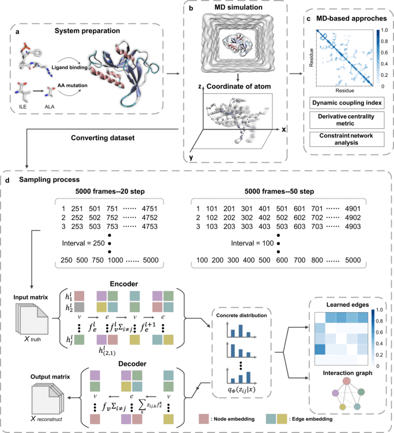
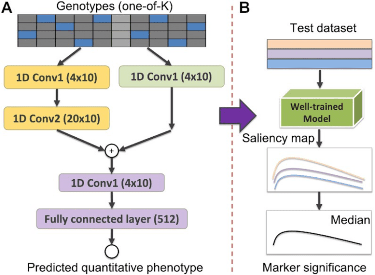
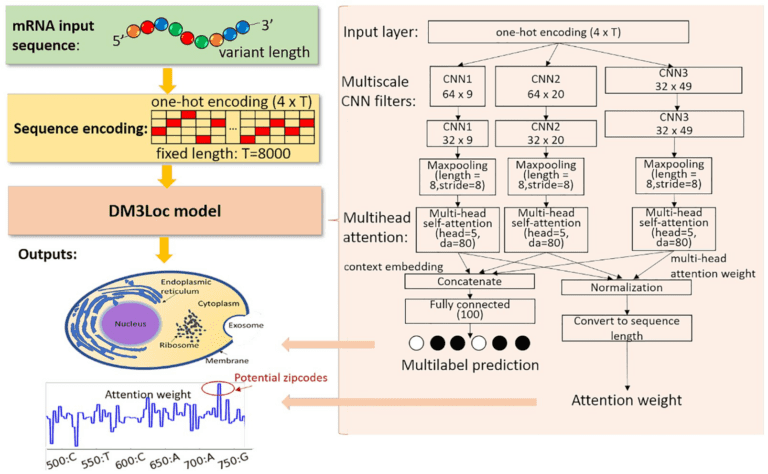
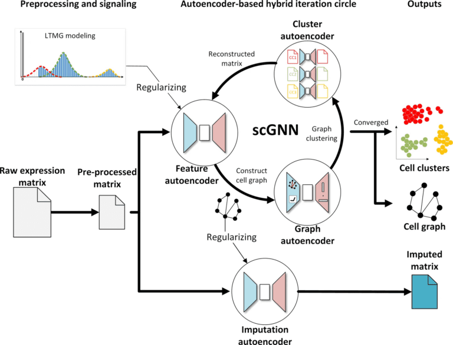

1. Jingxuan Zhu, Juexin Wang, Weiwei Han, and Dong Xu Neural relational inference to learn long-range allosteric interactions in proteins from molecular dynamics simulations. Nature Communications, 13:1661, 2022.
- Protein allostery is a biological process facilitated by spatially long-range intra-protein communication, whereby ligand binding or amino acid change at a distant site affects the active site remotely. Molecular dynamics (MD) simulation provides a powerful computational approach to probe the allosteric effect. However, current MD simulations cannot reach the time scales of whole allosteric processes. The advent of deep learning made it possible to evaluate both spatially short and long-range communications for understanding allostery. For this purpose, we applied a neural relational inference model based on a graph neural network, which adopts an encoder-decoder architecture to simultaneously infer latent interactions for probing protein allosteric processes as dynamic networks of interacting residues. From the MD trajectories, this model successfully learned the long-range interactions and pathways that can mediate the allosteric communications between distant sites in the Pin1, SOD1, and MEK1 systems. Furthermore, the model can discover allostery-related interactions earlier in the MD simulation trajectories and predict relative free energy changes upon mutations more accurately than other methods.

2. Qin Ma and Dong Xu. Deep learning shapes single-cell data analysis. Nature Reviews Molecular Cell Biology, 23:303-304, 2022.
- Deep learning has tremendous potential in single-cell data analyses, but numerous challenges and possible new developments remain to be explored. In this commentary, we consider the progress, limitations, best practices and outlook of adapting deep learning methods for analysing single-cell data.
3. Shuai Zeng, Ziting Mao, Yijie Ren, Duolin Wang, Dong Xu, Trupti Joshi. G2PDeep: a web-based deep-learning framework for quantitative phenotype prediction and discovery of genomic markers. Nucleic Acids Research, 49:W228-W236, 2021.
- G2PDeep is an open-access web server, which provides a deep-learning framework for quantitative phenotype prediction and discovery of genomics markers. It uses zygosity or single nucleotide polymorphism (SNP) information from plants and animals as the input to predict quantitative phenotype of interest and genomic markers associated with phenotype. It provides a one-stop-shop platform for researchers to create deep-learning models through an interactive web interface and train these models with uploaded data, using high-performance computing resources plugged at the backend. G2PDeep also provides a series of informative interfaces to monitor the training process and compare the performance among the trained models. The trained models can then be deployed automatically. The quantitative phenotype and genomic markers are predicted using a user-selected trained model and the results are visualized. Our state-of-the-art model has been benchmarked and demonstrated competitive performance in quantitative phenotype predictions by other researchers. In addition, the server integrates the soybean nested association mapping (SoyNAM) dataset with five phenotypes, including grain yield, height, moisture, oil, and protein. A publicly available dataset for seed protein and oil content has also been integrated into the server. The G2PDeep server is publicly available at http://g2pdeep.org. The Python-based deep-learning model is available at https://github.com/shuaizengMU/G2PDeep_model.

4. Duolin Wang, Zhaoyue Zhang, Yuexu Jiang, Ziting Mao, Dong Wang, Hao Lin, Dong Xu. DM3Loc: Multi-label mRNA Subcellular Localization Prediction and Analysis Based on Multi-head Self-attention Mechanism. Nucleic Acids Research. 49: e46, https://doi.org/10.1093/nar/gkab016, 2021.
- Subcellular localization of messenger RNAs (mRNAs), as a prevalent mechanism, gives precise and efficient control for the translation process. There is mounting evidence for the important roles of this process in a variety of cellular events. Computational methods for mRNA subcellular localization prediction provide a useful approach for studying mRNA functions. However, few computational methods were designed for mRNA subcellular localization prediction and their performance have room for improvement. Especially, there is still no available tool to predict for mRNAs that have multiple localization annotations. In this paper, we propose a multi-head self-attention method, DM3Loc, for multi-label mRNA subcellular localization prediction. Evaluation results show that DM3Loc outperforms existing methods and tools in general. Furthermore, DM3Loc has the interpretation ability to analyze RNA-binding protein motifs and key signals on mRNAs for subcellular localization. Our analyses found hundreds of instances of mRNA isoform-specific subcellular localizations and many significantly enriched gene functions for mRNAs in different subcellular localizations.

5. Juexin Wang, Anjun Ma, Yuzhou Chang, Jianting Gong, Yuexu Jiang, Ren Qi, Cankun Wang, Hongjun Fu, Qin Ma, Dong Xu. scGNN is a novel graph neural network framework for single-cell RNA-Seq analyses. Nature Communications. 12:1882, 2021.
- Single-cell RNA-sequencing (scRNA-Seq) is widely used to reveal the heterogeneity and dynamics of tissues, organisms, and complex diseases, but its analyses still suffer from multiple grand challenges, including the sequencing sparsity and complex differential patterns in gene expression. We introduce the scGNN (single-cell graph neural network) to provide a hypothesis-free deep learning framework for scRNA-Seq analyses. This framework formulates and aggregates cell–cell relationships with graph neural networks and models heterogeneous gene expression patterns using a left-truncated mixture Gaussian model. scGNN integrates three iterative multi-modal autoencoders and outperforms existing tools for gene imputation and cell clustering on four benchmark scRNA-Seq datasets. In an Alzheimer’s disease study with 13,214 single nuclei from postmortem brain tissues, scGNN successfully illustrated disease-related neural development and the differential mechanism. scGNN provides an effective representation of gene expression and cell–cell relationships. It is also a powerful framework that can be applied to general scRNA-Seq analyses.

- Srivastava T, Garola RE, Zhou J, Boinpelly VC, Rezaiekhaligh MH, Joshi T, Jiang Y, Ebadi D, Sharma S, Sethna C, Staggs VS, Sharma R, Gipson DS, Hao W, Wang Y, Mariani LH, Hodgin JB, Rottapel R, Yoshitaka T, Ueki Y, Sharma M. Scaffold protein SH3BP2 signalosome is pivotal for immune activation in nephrotic syndrome. JCI Insight. 2024 Feb 8;9(3):e170055. doi: 10.1172/jci.insight.170055.
- Jana Biová, Ivana Kaňovská, Yen On Chan, Manish Shridhar Immadi, Trupti Joshi, Kristin Bilyeu, Mária Škrabišová. Natural and Artificial Selection of Multiple Alleles Revealed Through Genomic Analyses. Front Genet. 2024 Jan 8;14:1320652. doi: 10.3389/fgene.2023.1320652.
- Pawan Basnet, Clinton G. Meinhardt, Bishnu Dhital, Alice Nguyen, Jason D. Gillman, Trupti Joshi, Melissa G. Mitchum, Andrew M. Scaboo. Development of a Standardized Soybean Cyst Nematode Screening Assay in Pennycress and Identification of Resistant Germplasm. Plant Disease. Plant Dis. 2024 Feb;108(2):359-364. doi: 10.1094/PDIS-05-23-0858-RE.
- Nagib Ahsan, Amr Ra Kataya, R Shyama Prasad Rao, Kirby N Swatek, Rashaun S Wilson, Louis J Meyer, Alejandro Tovar-Mendez, Severin Stevenson, Justyna Maszkowska, Grazyna Dobrowolska, Qiuming Yao, Dong Xu & Jay J. Thelen. Decoding Arabidopsis thaliana CPK/SnRK Superfamily Kinase Client Signaling Networks Using Peptide Library and Mass Spectrometry. Plants 13, 1481 (2024). https://www.mdpi.com/2223-7747/13/11/1481
- Yuzhou Chang, Jixin Liu, Yi Jiang, Anjun Ma, Yao Yu Yeo, Qi Guo, Megan Mcnutt, Jordan E Krull, Scott J Rodig, Dan H Barouch, Garry P. Nolan, Dong Xu, Sizun Jiang, Zihai Li, Bingqiang Liu & Qin Ma . Graph Fourier transform for spatial omics representation and analyses of complex organs. Nature Communications 15, 7467 (2024). https://www.nature.com/articles/s41467-024-51590-5
- Muhammad Hassan, Yan Wang, Di Wang, Wei Pang, Daixi Li, You Zhou, Dong Xu, Amin Ur Rahman, Ahmed Ameen Fateh & Peiwu Qin. Deep learning model for human-intuitive shoeprint reconstruction. Expert Systems with Applications 249, 123704 (2024). https://www.sciencedirect.com/science/article/abs/pii/S0957417424005700
- Yuexu Jiang, Manish Sridhar Immadi, Duolin Wang, Shuai Zeng, Yen On Chan, Jing Zhou, Dong Xu & Trupti Joshi. IRnet: Immunotherapy response prediction using pathway knowledge-informed graph neural network. Journal of Advanced Research (2024). https://www.sciencedirect.com/science/article/pii/S2090123224003205
- Yu Lin, Yanchun Liang, Duolin Wang, Yuzhou Chang, Qin Ma, Yan Wang, Fei He & Dong Xu. A contrastive learning approach to integrate spatial transcriptomics and histological images. Computational and Structural Biotechnology Journal 23, 1786-1795 (2024). https://www.sciencedirect.com/science/article/pii/S200103702400120X
- Zhen Lyu, Sabin Dahal, Shuai Zeng, Juexin Wang, Dong Xu & Trupti Joshi. CrossMP: Enabling Cross-Modality Translation between Single-Cell RNA-Seq and Single-Cell ATAC-Seq through Web-Based Portal. Genes 15, 882 (2024). https://www.mdpi.com/2073-4425/15/7/882
- Qin Ma, Yi Jiang, Hao Cheng & Dong Xu. Harnessing the deep learning power of foundation models in single-cell omics. Nature Reviews Molecular Cell Biology 25, 593-594 (2024). https://www.nature.com/articles/s41580-024-00756-6
- Joseph C Mcbee, Daniel Y Han, Li Liu, Leah Ma, Donald A Adjeroh, Dong Xu & Gangqing Hu. Assessing ChatGPT’s Competency in Addressing Interdisciplinary Inquiries on Chatbot Uses in Sports Rehabilitation: Simulation Study. JMIR Medical Education 10, e51157 (2024). https://mededu.jmir.org/2024/1/e51157/
- Shuai Zeng, Duolin Wang, Lei Jiang & Dong Xu. Parameter-efficient fine-tuning on large protein language models improves signal peptide prediction. Genome Research 34, 1445-1454 (2024). https://genome.cshlp.org/content/34/9/1445.short
- Shuai Zeng, Duolin Wang, Lei Jiang & Dong Xu. in the International Conference on Research in Computational Molecular Biology. 400-405 (Springer, 2024) https://link.springer.com/chapter/10.1007/978-1-0716-3989-4_40
- Zhaoqian Liu, Yuhan Sun, Yingjie Li, Anjun Ma, Nyelia F. Willaims, Shiva Jahanbahkshi, Rebecca Hoyd, Xiaoying Wang, Shiqi Zhang, Jiangjiang Zhu, Dong Xu, Daniel Spakowicz, Qin Ma, Bingqiang Liu. An Explainable Graph Neural Framework to Identify Cancer-Associated Intratumoral Microbial Communities. Advanced Science, 11, 240339, 2024. https://doi.org/10.1002/advs.202403393
- Zhen Lyu, Jessica A. Kinkade, Nathan J. Bivens, R. Michael Roberts, Trupti Joshi, Cheryl S. Rosenfeld. Effects of Oxycodone on Placental Lineages: Evidence from Transcriptome Profile of Mouse Trophoblast Giant Cells. PNAS. 2024. In Press.
- Robert M. Stupar, Anna M. Locke, Doug K. Allen, Minviluz G. Stacey, Jianxin Ma, Jackie Weiss, Rex T. Nelson, Matthew E. Hudson, Trupti Joshi, Zenglu Li, Qijian Song, Joseph R. Jedlicka, Gustavo C. MacIntosh, David Grant, Wayne A. Parrott, Tom E. Clemente, Gary Stacey, Yong-qiang Charles An, Jose Aponte-Rivera, Madan K. Bhattacharyya, Ivan Baxter, Kristin D. Bilyeu, Jacqueline D. Campbell, Steven B. Cannon, Steven J. Clough, Shaun J. Curtin, Brian W. Diers, Anne E. Dorrance, Jason D. Gillman, George L. Graef, C. Nathan Hancock, Karen A. Hudson, David L. Hyten, Aardra Kachroo, Jenny Koebernick, Marc Libault, Aaron J. Lorenz, Adam L. Mahan, Jon M. Massman, Michaela McGinn, Khalid Meksem, Jack K. Okamuro, Kerry F. Pedley, Katy Martin Rainey, Andrew M. Scaboo, Jeremy Schmutz, Bao-Hua Song, Adam D. Steinbrenner, Benjamin B. Stewart-Brown, Katalin Toth, Dechun Wang, Lisa Weaver, Bo Zhang, Michelle A. Graham, Jamie A. O’Rourke. Soybean genomics research community strategic plan: A vision for 2024-2028. Plant Genome. 2024; e20516. https://doi.org/10.1002/tpg2.20516.
- Ganesh Panzade, Tarak Srivastava, Daniel Heruth, Mohammad H. Rezaiekhaligh, Jianping Zhou, Zhen Lyu, Mukut Sharma, Trupti Joshi. Employing multi-omics analyses to understand changes during kidney development in perinatal Interleukin-6 animal model. Cells 2024, 13, 1667. https://doi.org/10.3390/cells13191667.
- Chunhui Xu, Trey Shaw, Sai Akhil Choppararu, Yiwei Lu, Matt Hudson, Brock Weekley, Michael Fisher, Fei He, Roberto Nascimento, Nicholas Wergeles, Trupti Joshi, Philip D. Bates, Abraham J. Koo, Doug K. Allen, Edgar B. Cahoon, Jay Thelen, Dong Xu. FatPlants: A Comprehensive Information System for Lipid-Related Genes and Metabolic Pathways in Plants. Database. 2024. In Press.
- Hekmat Khoukaz, Manisha Vadali, Alex Schoenherr, Francisco Ramirez-Perez, Mariana Morales Quinones, Zhe Sun, Shumpei Fujie, Christopher Foote, Zhen Lyu, Shuai Zeng, Marc Augenreich, Dunpeng Cai, Shi-You Chen, Trupti Joshi, Yan Ji, Michael Hill, Luis Martinez-Lemus, and William Fay. Plasminogen Activator Inhibitor-1 Regulates the Cytoskeleton and Intrinsic Stiffness of Vascular Smooth Muscle Cells. Arteriosclerosis, Thrombosis, and Vascular Biology (ATVB). 2024 Oct;44(10):2191-2203. doi: 10.1161/ATVBAHA.124.320938.
- Srivastava T, Garola RE, Zhou J, Boinpelly VC, Rezaiekhaligh MH, Joshi T, Jiang Y, Ebadi D, Sharma S, Sethna C, Staggs VS, Sharma R, Gipson DS, Hao W, Wang Y, Mariani LH, Hodgin JB, Rottapel R, Yoshitaka T, Ueki Y, Sharma M. Scaffold protein SH3BP2 signalosome is pivotal for immune activation in nephrotic syndrome. JCI Insight. 2024 Feb 8;9(3): e170055. doi: 10.1172/jci.insight.170055.
- Jana Biová, Ivana Kaňovská, Yen On Chan$, Manish Shridhar Immadi, Trupti Joshi, Kristin Bilyeu, Mária Škrabišová. Natural and Artificial Selection of Multiple Alleles Revealed Through Genomic Analyses. Front Genet. 2024 Jan 8;14:1320652. doi: 10.3389/fgene.2023.1320652.
- Pawan Basnet, Clinton G. Meinhardt, Bishnu Dhital, Alice Nguyen, Jason D. Gillman, Trupti Joshi, Melissa G. Mitchum, Andrew M. Scaboo. Development of a Standardized Soybean Cyst Nematode Screening Assay in Pennycress and Identification of Resistant Germplasm. Plant Disease. Plant Dis. 2024 Feb;108(2):359-364. doi: 10.1094/PDIS-05-23-0858-RE.
- A Khalyfa, Yo Chan, T Joshi, Z Qiao, L Kheirandish-Gozal & D Gozal. Single Nucleus RNA-seq (snRNA-seq) Analysis of Human Neurovascular Unit (NVU) Cells Exposed to Circulating Exosomes Derived from Children with OSA and Controls. D19 UNRAVELING THE IMPACT OF OSA ON NEUROCOGNITIVE FUNCTION A6965-A6965 (American Thoracic Society, 2024). https://www.atsjournals.org/doi/pdf/10.1164/ajrccm-conference.2024.209.1_MeetingAbstracts.A6965
- María Ángeles Peláez‐Vico, Ranjita Sinha, Sai Preethi Induri, Zhen Lyu, Sai Darahas Venigalla, Dinesh Vasireddy, Pallav Singh, Manish Sridhar Immadi, Lidia S Pascual, Benjamin Shostak, David Mendoza-Cózatl, Trupti Joshi, Felix B. Fritschi, Sara I. Zandalinas & Ron Mittler. The impact of multifactorial stress combination on reproductive tissues and grain yield of a crop plant. The Plant Journal 117, 1728-1745 (2024). https://onlinelibrary.wiley.com/doi/abs/10.1111/tpj.16570
- Joshi, T., Chan, Y. O., Qiao, Z., Kheirandish-Gozal, L., Gozal, D., & Khalyfa, A. (2025). Circulating exosomes in pediatric obstructive sleep apnea with or without neurocognitive deficits and their effects on a 3D-blood-brain barrier spheroid model. Experimental Neurology, 115188. https://doi.org/10.1016/j.expneurol.2025.115188
- Lyu, Z., Kinkade, J. A., Bivens, N. J., Roberts, R. M., Joshi, T., & Rosenfeld, C. S. (2024). Effects of oxycodone on placental lineages: Evidence from the transcriptome profile of mouse trophoblast giant cells. Proceedings of the National Academy of Sciences of the United States of America, 121(45), e2412349121. https://doi.org/10.1073/pnas.2412349121
- Burke, D. H., Thomas, B. J., Awan, S. Z., Joshi, T., Daniels, M. A., & Porciani, D. (2024). Anti-EGFR aptamer exhibits direct anti-cancer effects in NSCLC cells harboring EGFR L858R mutations. NPJ Precision Oncology. 8, 271 (2024). https://doi.org/10.1038/s41698-024-00758-9
- Kinkade, J. A., Singh, P., Verma, M., Khan, T., Ezashi, T., Bivens, N. J., Roberts, R. M., Joshi, T., & Rosenfeld, C. S. (2024). Small and long non-coding RNA analysis for human trophoblast-derived extracellular vesicles and their effect on the transcriptome profile of human neural progenitor cells. Cells, 13(22), 1867. https://doi.org/10.3390/cells13221867
- Angelovici, R., Bagaza, C., Ansaf, H., Yobi, A., Chan, Y. O., Slaten, M., Czymmek, K., Joshi, T., Mittler, R., Mawhinney, T., Cohen, D., & Yasuor, H. (2024). A multi-omics approach reveals a link between ribosomal protein alterations and proteome rebalancing in Arabidopsis thaliana seeds. The Plant Journal. 2024 Dec;120(6):2803-2827. doi: 10.1111/tpj.17147.
- Jiang, Y., Wang, D., Zeng, S., Immadi, M., Chan, Y. O., Zhou, J., Xu, D., & Joshi, T. (2024). IRnet: Immunotherapy response prediction using pathway knowledge-informed graph neural network. Journal of Advanced Research. 2024 Aug 7:S2090-1232(24)00320-5. doi: 10.1016/j.jare.2024.07.036.
- Lyu, Z., Dahal, S., Zeng, S., Wang, J., Xu, D., & Joshi, T. (2024). CrossMP: Enabling cross-modality translation between single-cell RNA-Seq and single-cell ATAC-Seq through web-based portal. Genes, 15(7), 882. https://doi.org/10.3390/genes15070882
- Zhe Liu, Yihang Bao, Shuai Zeng, Ruiyi Qian, Miaohan Deng, An Gu, Jianye Li, Weidi Wang, Wenxiang Cai, Wenhao Li, Han Wang, Dong Xu, Guan Ning Lin. Large Language Models in Psychiatry: Current Applications, Limitations, and Future Scope. Big Data Mining and Analytics. 7 (4), 1148-1168, 2024.
- Jinge Wang, Zien Cheng, Qiuming Yao, Li Liu, Dong Xu, Gangqing Hu. Bioinformatics and biomedical informatics with ChatGPT: Year one review. Quantitative Biology. 12 (4), 345-359, 2024.
- Muhammad Azam, Yibo Chen, Micheal Olaolu Arowolo, Haowang Liu, Mihail Popescu, Dong Xu. A comprehensive evaluation of large language models in mining gene relations and pathway knowledge. Quantitative Biology. 12 (4), 360-374, 2024.
- Zhe Yang, Negin Manshour, Xi He, Michael Epp, Jay Unruh, Xinjian Mao, Ruochen Dong, Dan Bradford, Shengping Huang, Fengyan Deng, Mark Hembree, Chongbei Zhao, Liang Xu, Dong Xu, Linheng Li. Overcoming Immune Escape Via Targeting Akt-Wnt/β-Catenin By Artificial-Intelligence-Powered Peptide-Producing mRNAs. Blood. 144, 1062, 2024.
- Ana Caroline Conrado, Gabriel Lemes Jorge, RSP Rao, Chunhui Xu, Dong Xu, Yonghua Li-Beisson, Jay J Thelen. Evolution of the regulatory subunits for the heteromeric acetyl-CoA carboxylase. Philosophical Transactions B. 379 (1914), 20230353, 2024.
- Yi He, Shuang Wang, Shuai Zeng, Jingxuan Zhu, Dong Xu, Weiwei Han, Juexin Wang. NRIMD, a Web Server for Analyzing Protein Allosteric Interactions Based on Molecular Dynamics Simulation. Journal of Chemical Information and Modeling. 64 (19), 7176-7183, 2024.
- Wenchuan Zhao, Yufeng Yu, Guosheng Liu, Yanchun Liang, Dong Xu, Xiaoyue Feng, Renchu Guan. MSI-DTI: predicting drug-target interaction based on multi-source information and multi-head self-attention. Briefings in bioinformatics. 25 (3), bbae238, 2024.
- Gabriel Lemes Jorge, Daewon Kim, Chunhui Xu, Sung-Hwan Cho, Lingtao Su, Dong Xu, Laura E Bartley, Gary Stacey, Jay J Thelen. Unveiling orphan receptor-like kinases in plants: novel client discovery using high-confidence library predictions in the Kinase–Client (KiC) assay. Frontiers in Plant Science. 15, 1372361, 2024.
- Yu Sun, Dong Xu, and Xiaorui Zhu. Inaugural Issue of the International Journal of Artificial Intelligence and Robotics Research (IJAIRR): The Emergence of an Interdisciplinary Nexus. International Journal of Artificial Intelligence and Robotics Research 1, 2401002, 2024.
- Gangqing Hu, Li Liu, Dong Xu. On the responsible use of chatbots in bioinformatics. Genomics, Proteomics and Bioinformatics. 22 (1), qzae002, 2024.
- Xiaoying Wang, Maoteng Duan, Jingxian Li, Anjun Ma, Gang Xin, Dong Xu, Zihai Li, Bingqiang Liu, Qin Ma. MarsGT: Multi-omics analysis for rare population inference using single-cell graph transformer. Nature Communications. 15 (1), 338, 2024.
- Chunhui Xu, Trey Shaw, Sai Akhil Choppararu, Yiwei Lu, Shaik Naveed Farooq, Yongfang Qin, Matt Hudson, Brock Weekley, Michael Fisher, Fei He, Jose Roberto Da Silva Nascimento, Nicholas Wergeles, Trupti Joshi, Philip D Bates, Abraham J Koo, Doug K Allen, Edgar B Cahoon, Jay J Thelen, and Dong Xu. FatPlants: a comprehensive information system for lipid-related genes and metabolic pathways in plants. Database. baae074, 2024.
- Yubin Xiao, Di Wang, Boyang Li, Huanhuan Chen, Wei Pang, Xuan Wu, Hao Li, Dong Xu, Yanchun Liang, and You Zhou. Reinforcement Learning-Based Nonautoregressive Solver for Traveling Salesman Problems. IEEE Transactions on Neural Networks and Learning Systems. doi:10.1109/TNNLS.2024.3483231, 2025.
- Yubin Xiao, Di Wang, Boyang Li, Huanhuan Chen, Wei Pang, Xuan Wu, Hao Li, Dong Xu, Yanchun Liang, You Zhou. Reinforcement Learning-Based Nonautoregressive Solver for Traveling Salesman Problems. IEEE Transactions on Neural Networks and Learning Systems. doi: 10.1109/TNNLS.2024.3483231, 2025.
- Clement Essien, Ning Wang, Yang Yu, Salhuldin Alqarghuli, Yongfang Qin, Negin Manshour, Fei He, Dong Xu. Predicting the location of coordinated metal ion-ligand binding sites using geometry-aware graph neural networks. Computational and Structural Biotechnology Journal. 27, 137-148, 2025.
- Duolin Wang, Mahdi Pourmirzaei, Usman L Abbas, Shuai Zeng, Negin Manshour, Farzaneh Esmaili, Biplab Poudel, Yuexu Jiang, Qing Shao, Jin Chen, Dong Xu. S‐PLM: Structure‐Aware Protein Language Model via Contrastive Learning Between Sequence and Structure. Advanced Science. 12 (5), 2404212, 2025.
- Yuanshu Li, Kexin Hong, Xiaohu Shi, Wei Pang, Yubin Xiao, Peng Zhao, Dong Xu, Chunli Song, Xu Zhou, You Zhou. A deep learning based approach for automatic cardiac events identification. Biomedical Signal Processing and Control, 100, 107164, 2025. https://doi.org/10.1016/j.bspc.2024.107164.
- Jiacheng Xie, Ziyang Zhang, Shuai Zeng, Joel Hilliard, Guanghui An, Xiaoting Tang, Lei Jiang, Yang Yu, Xiufeng Wan, Dong Xu. Leveraging Large Language Models for Infectious Disease Surveillance—Using a Web Service for Monitoring COVID-19 Patterns from Self-Reporting Tweets: Content Analysis. Journal of Medical Internet Research 27, e63190, 2025.
- Li Su, Duolin Wang and Dong Xu. Bridging peptide presentation and T cell recognition with multi-task learning. Nature Machine Intelligence, 7, 170–171, 2025.
- Ibrahim A Imam, Shea Bailey, Duolin Wang, Shuai Zeng, Dong Xu, Qing Shao. Integrating Protein Language Model and Molecular Dynamics Simulations to Discover Antibiofouling Peptides. Langmuir, in press.
- Zheng Wang, Tong Liu, Juexin Wang, Xiu-Feng Wan and Dong Xu. Remote homolog identification for protein structure prediction and function study. Handbook of Computational Molecular Biology, CRC Press, Chapman & Hall-CRC Mathematical and Computational Biology, edited by Srinivas Aluru and Mona Singh, In press.
- Shuai Zeng, Duolin Wang, Lei Jiang & Dong Xu. Prompt-Based Learning on Large Protein Language Models Improves Signal Peptide Prediction. International Conference on Research in Computational Molecular Biology. 400-405 (Springer, 2024) https://link.springer.com/chapter/10.1007/978-1-0716-3989-4_40.
- Ke Chen, Xiaosong Han, Xiaoran Li, Yanchun Liang, Dong Xu, Renchu Guan. PNESR-DDI: An Effective Drug-Drug Interaction Prediction Model Based on Pretraining Method and Enhanced Subgraph Reconstruction. Proceedings of 2024 IEEE International Conference on Bioinformatics and Biomedicine (BIBM 2024), pages 1874-1881, 2024.
- Yibo Chen, Dong Xu, Richard Hammer, Mihail Popescu. Predicting Gene Relations with a Graph Transformer Network Integrating DNA, Protein, and Descriptive Data. Proceedings of 2024 IEEE International Conference on Bioinformatics and Biomedicine (BIBM 2024), pages 3101-3104, 2024.
- Fei He, Zhiyuan Yang, Mingyue Gao, Biplab Poudel, Newgin Sam Ebin Sam Dhas, Rajan Gyawali, Ashwin Dhakal, Jianlin Cheng, Dong Xu. Adapting Segment Anything Model (SAM) through Prompt-based Learning for Enhanced Protein Identification in Cryo-EM Micrographs. 2024 IEEE International Conference on Medical Artificial Intelligence (MedAI), pages 9-20, 2024.
- Micheal Olaolu Arowolo, Muhammad Azam, Fei He, Mihail Popescu, Dong Xu. Gene Name Recognition in Gene Pathway Figures Using Siamese Networks. 2024 IEEE International Conference on Medical Artificial Intelligence (MedAI), pages 218-230, 2024.
- He F, Wang J, Han W, Zhu J, Xu D. pathCLIP: Detection of genes and gene relations from biological pathway figures through image-text contrastive learning. IEEE J Biomed Health Inform. 2024 Aug;28(8):5007-5019. doi: 10.1109/JBHI.2024.3383610.
- Zheng Wang, Tong Liu, Juexin Wang, Xiu-Feng Wan and Dong Xu. Remote homolog identification for protein structure prediction and function study. Handbook of Computational Molecular Biology, CRC Press, Chapman & Hall-CRC Mathematical and Computational Biology, edited by Srinivas Aluru and Mona Singh, In press.
- Wang Juexin, Sen Sidharth, Zeng Shuai, Jiang Yuexu, Chan Yen On, Lyu Zhen, McCubbin Tyler, Mertz Rachel, Sharp Robert E, Joshi, Trupti. Bioinformatics for plant and agricultural discoveries in the age of multiomics: A review and case study of maize nodal root growth under water deficit. Physiologia Plantarum. 2022. In Press. DOI:10.1111/ppl.13672.
- Pawan Basnet, Clinton G. Meinhardt, Mariola Usovsky, Jason D. Gillman, Trupti Joshi, Qijian Song, Brian Diers, Melissa G. Mitchum, Andrew M. Scaboo. Epistatic interaction between Rhg1-a and Rhg2 in PI 90763 confers resistance to virulent soybean cyst nematode populations. Theoretical and Applied Genetics. 2022 Apr 5. doi: 10.1007/s00122-022-04091-2.
- Mukut Sharma, Vikas Singh, Ram Sarma, Arnav Koul, Ellen T. McCarthy, Virginia J. Savin, Trupti Joshi, Tarak Srivastava. Glomerular biomechanical stress and lipid mediators during cellular changes leading to chronic kidney disease. Biomedicines. 2022, 10, 407. https://doi.org/10.3390/.
- Shuangquan Zhang, Anjun Ma, Jing Zhao, Dong Xu, Qin Ma, Yan Wang. Assessing deep learning methods in cis-regulatory motif finding based on genomic sequencing data. Brief Bioinform. 23. 2022.
- Tianyu Cui, Yiying Dou, Puwen Tan, Zhen Ni, Tianyuan Liu, DuoLin Wang, Yan Huang, Kaican Cai, Xiaoyang Zhao, Dong Xu, Hao Lin, Dong Wang. RNALocate v2.0: an updated resource for RNA subcellular localization with increased coverage and annotation. Nucleic Acids Res. 50:D333-D339. 2022.
- Qin Ma, Dong Xu. Deep learning shapes single-cell data analysis. Nat Rev Mol Cell Biol. 2022.
- Zhen Lyu, Pallav Singh, Christopher Bottoms, Matthew Sinn, Joshua Featherston, Kate Cleavinger, George Turabelidze, John Bos, Melissa Markham, Nathan Koffarnus, Trupti Joshi. Empowering SARS-CoV-2 Genomics Surveillance in Missouri with Data Analytics and Integration Portals. Missouri Medicine. May/June 2022. 119:3. 185-187.
- Yia Yang, Thang C. La, Jason D. Gillman, Zhen Lyu, Trupti Joshi, Mariola Usovsky, Qijian Song, Andrew Scaboo. Linkage Analysis and Residual Heterozygotes Derived Near Isogenic Lines Reveals a Novel Protein QTL from a Glycine soja Accession. Frontiers. 2022. In Press.
- Zhen Lyu, Robert R. Schmidt, Rachel E. Martin, Madison T. Green, Jessica A. Kinkade, Jiude Mao, Nathan Bivens, Trupti Joshi*, Cheryl S. Rosenfeld*. Long-term Effects of Developmental Exposure to Oxycodone on Gut Microbiota and Relationship to Adult Behaviors and Metabolism. MSystems. 2022. In Press.
- Mária Škrabišová, Nicholas Dietz, Shuai Zeng, Yen On Chan, Juexin Wang, Yang Liu, Jana Biová, Trupti Joshi*, Kristin D. Bilyeu*. A Synthetic phenotype association study reveals the landscape of association for genomic variants and phenotypes. Journal of Advanced Research. 2022. In Press.
- Ranjita Sinha, Sara I Zandalinas, Yosef Fichman, Sidharth Sen, Trupti Joshi, Felix B. Fritschi, Ron Mittler. Differential regulation of flower transpiration during abiotic stress in annual plants. New Phytologist. 2022. In Press.
- Nicholas Dietz, Yen On Chan, Andrew Scaboo, George Graef, David Hyten, Mary Happ, Brian Diers, Aaron Lorenz, Dechun Wang, Trupti Joshi and Kristin Bilyeu. Candidate Genes Modulating Reproductive Timing in Elite US Soybean Lines Identified in Soybean Alleles of Arabidopsis Flowering Orthologs With Divergent Latitude Distribution. Frontiers in Plant Science. 2022. Vol. 13. https://doi.org/10.3389/fpls.2022.889066.
- Lingtao Su, Chunhui Xu, Shuai Zeng, Li Su, Trupti Joshi, Gary Stacey, Dong Xu. Large-scale integrative analysis of soybean transcriptome using an unsupervised autoencoder model. Frontiers. 2022. In Press.
- Jing Zhou, Yuexu Jiang, Yue Huang, Qiongling Wang, Jussuf T. Kaifi, Eric T. Kimchi, Chiswili Yves Chabu, Zhenguo Liu, Trupti Joshi, Guangfu Li. Single-cell RNA sequencing to characterize the response of pancreatic cancer to anti-PD-1 immunotherapy. Translational Oncology. 2022 Jan;15(1):101262. doi: 10.1016/j.tranon.2021.101262. Epub 2021 Nov 9. PubMed PMID: 34768100; PubMed Central PMCID: PMC8591363..
- Tarak Srivastava, Robert E. Garola, Jianping Zhou, Varun C. Boinpelly, Lakshmi Priya, Mohammed Farhan Ali, Mohammad H. Rezaiekhaligh, Daniel P. Heruth, Jan Novak, Uri S. Alon, Trupti Joshi, Yuexu Jiang, Ellen T. McCarthy, Virginia J. Savin, Mark L. Johnson, Ram Sharma, and Mukut Sharma. Prostanoid receptors in hyperfiltration-mediated glomerular injury: Novel agonists and antagonists reveal opposing roles for EP2 and EP4 receptors. 2022. FASEB. In Press.
- Biová Jana, Dietz Nicholas, Chan Yen On, Joshi Trupti, Bilyeu Kristin, Mária Škrabišová. AccuCalc: A Python package for Accuracy calculation in GWAS. MDPI Genes. 2022. In Press.
- Ashish Pandey, Prasad Calyam, Zhen Lyu, Trupti Joshi. Knowledge-Engineered Multi-Cloud Resource Brokering for Application Workflow Optimization. IEEE Transactions on Network and Service Management. 2022. In Press.
- Zhen Lyu, Pallav Singh, Christopher Bottoms, Matthew Sinn, Joshua Featherston, Kate Cleavinger, George Turabelidze, John Bos, Melissa Markham, Nathan Koffarnus, Trupti Joshi. Empowering SARS-CoV-2 Genomics Surveillance in Missouri with Data Analytics and Integration Portals. Missouri Medicine. May/June 2022. 119:3. 185-187.
- Yia Yang, Thang C. La, Jason D. Gillman, Zhen Lyu, Trupti Joshi, Mariola Usovsky, Qijian Song, Andrew Scaboo. Linkage Analysis and Residual Heterozygotes Derived Near Isogenic Lines Reveals a Novel Protein QTL from a Glycine soja Accession. Frontiers. 2022. In Press.
- Zhen Lyu, Robert R. Schmidt, Rachel E. Martin, Madison T. Green, Jessica A. Kinkade, Jiude Mao, Nathan Bivens, Trupti Joshi, Cheryl S. Rosenfeld. Long-term Effects of Developmental Exposure to Oxycodone on Gut Microbiota and Relationship to Adult Behaviors and Metabolism. MSystems. 2022. In Press.
- Wang Juexin, Sen Sidharth, Zeng Shuai, Jiang Yuexu, Chan Yen On, Lyu Zhen, McCubbin Tyler, Mertz Rachel, Sharp Robert E, Joshi, Trupti. Bioinformatics for plant and agricultural discoveries in the age of multiomics: A review and case study of maize nodal root growth under water deficit. Physiologia Plantarum. 2022 Mar;174(2):e13672. doi: 10.1111/ppl.13672.
- Mária Škrabišová, Nicholas Dietz, Shuai Zeng, Yen On Chan, Juexin Wang, Yang Liu, Jana Biová, Trupti Joshi, Kristin D. Bilyeu. A Synthetic phenotype association study reveals the landscape of association for genomic variants and phenotypes. Journal of Advanced Research. Volume 42, 2022, Pages 117-133, ISSN 2090-1232, https://doi.org/10.1016/j.jare.2022.04.004.
- Nicholas Dietz, Yen On Chan, Andrew Scaboo, George Graef, David Hyten, Mary Happ, Brian Diers, Aaron Lorenz, Dechun Wang, Trupti Joshi and Kristin Bilyeu. Candidate Genes Modulating Reproductive Timing in Elite US Soybean Lines Identified in Soybean Alleles of Arabidopsis Flowering Orthologs With Divergent Latitude Distribution. Frontiers in Plant Science. 2022. Vol. 13. https://doi.org/10.3389/fpls.2022.889066.
- Yuning Yang, Jiawen Yu, Zhe Liu, Xi Wang, Han Wang, Zhiqiang Ma, and Dong Xu. An Improved Topology Prediction of Alpha-Helical Transmembrane Protein Based on Deep Multi-Scale Convolutional Neural Network. IEEE/ACM Transactions on Computational Biology and Bioinformatics. 19:295 – 304, 2022.
- Tianyu Cui, Yiying Dou, Puwen Tan, Zhen Ni, Tianyuan Liu, DuoLin Wang, Yan Huang, Kaican Cai, Xiaoyang Zhao, Dong Xu, Hao Lin, and Dong Wang. RNALocate v2. 0: an updated resource for RNA subcellular localization with increased coverage and annotation. Nucleic Acids Research, 50:D333-D339, 2022.
- Jingxuan Zhu, Juexin Wang, Weiwei Han, and Dong Xu Neural relational inference to learn long-range allosteric interactions in proteins from molecular dynamics simulations. Nature Communications, 13:1661, 2022.
- Shuangquan Zhang, Anjun Ma, Jing Zhao, Dong Xu, Qin Ma, Yan Wang. Assessing deep learning methods in cis-regulatory motif finding based on genomic sequencing data. Briefings in Bioinformatics, 23: bbab374, 2022.
- Qin Ma and Dong Xu. Deep learning shapes single-cell data analysis. Nature Reviews Molecular Cell Biology, 23:303–304, 2022.
- Bowen Tang, Fengming He, Dongpeng Liu, Fei He, Tong Wu, Meijuan Fang, Zhangming Niu, Zhen Wu, and Dong Xu. AI-Aided Design of Novel Targeted Covalent Inhibitors against SARS-CoV-2, Biomolecules, https://doi.org/10.3390/biom12060746, 12:746, 2022.
- Jiacheng Xie, Congcong Jing, Ziyang Zhang, Jiatuo Xu, Ye Duan, Dong Xu. Digital tongue image analyses for health assessment. Medical Review. https://doi.org/10.1515/mr-2021-0018, 2022.
- Haowu Chang, Hao Zhang, Tianyue Zhang, Lingtao Su, Qing-Ming Qin, Guihua Li, Xueqing Li, Li Wang, Tianheng Zhao, Enshuang Zhao, Hengyi Zhao, Yuanning Liu, Gary Stacey, Dong Xu. A Multi-Level Iterative Bi-Clustering Method for Discovering miRNA Co-regulation Network of Abiotic Stress Tolerance in Soybeans. Frontiers in Plant Science, 13: 860791-860791, 2022.
- Lingtao Su, Chunhui Xu, Shuai Zeng, Li Su, Trupti Joshi, Gary Stacey, Dong Xu. Large-Scale Integrative Analysis of Soybean Transcriptome Using an Unsupervised Autoencoder Model. Frontiers in Plant Science. 13:831204. doi:10.3389/fpls.2022.831204, 2022.
- Yu Lin, Yan Wang, Yanchun Liang, Yang Yu, Jingyi Li, Qin Ma, Fei He, Dong Xu. Sampling and ranking spatial transcriptomics data embeddings to identify tissue architecture. Front. Genet. 13:912813. doi: 10.3389/fgene.2022.912813, 2022.
- Anjun Ma, Juexin Wang, Dong Xu, Qin Ma. Deep learning analysis of single‐cell data in empowering clinical implementation. Clinical and Translational Medicine, 12(7): e950, 2022.
- Caio Canella Vieira, Diego Jarquin, Emanuel Ferrari do Nascimento, Dongho Lee, JING ZHOU, Scotty Smothers, Jianfeng Zhou, Brian Diers, Dean E. Riechers, Dong Xu, Grover Shannon, Pengyin Chen, Henry T. Nguyen. Identification of Genomic Regions Associated with Soybean Responses to Off-target Dicamba Exposure, Frontiers in Plant Science. In press.
- Michal Zigo, Karl Kerns, Sidharth Sen, Clement Essien, Richard Oko, Dong Xu, Peter Sutovsky. Zinc is a master-regulator of sperm function associated with binding, motility, and metabolic modulation during porcine sperm capacitation. Communications Biology. 5:1-12. 2022.
- Jae Hyo Song, Bruna Montes-Luz, Michelle Zibetti Tadra-Sfeir, Yaya Cui, Lingtao Su, Dong Xu, Gary Stacey. High-Resolution Translatome Analysis Reveals Cortical Cell Programs During Early Soybean Nodulation. Frontiers in Plant Science. 13. 2022.
- Felicia Mermer, Sarah Poliquin, Shuizhen Zhou, Xiaodong Wang, Yifeng Ding, Fei Yin, Wangzhen Shen, Juexin Wang, Kathryn Rigsby, Dong Xu. Astrocytic GABA transporter 1 deficit in novel SLC6A1 variants mediated epilepsy: connected from protein destabilization to seizures in mice and humans. Neurobiology of disease. 172:105810. 2022.
- Lei Jiang, Duolin Wang, Dong Xu. A Pretrained ELECTRA Model for Kinase-Specific Phosphorylation Site Prediction. Computational Methods for Predicting Post-Translational Modification Sites: Springer; 2022. p. 105-124.
- Muhammad Hassan, Yan Wang, Di Wang, Wei Pang, Kangping Wang, Daixi Li, You Zhou, Dong Xu. Restorable-inpainting: A novel deep learning approach for shoeprint restoration. Information Sciences. 600:22-42. 2022.
- Muhammad Hassan, Yan Wang, Wei Pang, Di Wang, Daixi Li, You Zhou, Dong Xu. IPAS-Net: A deep-learning model for generating high-fidelity shoeprints from low-quality images with no natural references. Journal of King Saud University-Computer and Information Sciences. 2022.
- Haocheng Gu, Hao Cheng, Anjun Ma, Yang Li, Juexin Wang, Dong Xu, Qin Ma. scGNN 2.0: a graph neural network tool for imputation and clustering of single-cell RNA-Seq data. Bioinformatics. 38:5322-5325. 2022.
- Tianyu Cui, Yiying Dou, Puwen Tan, Zhen Ni, Tianyuan Liu, DuoLin Wang, Yan Huang, Kaican Cai, Xiaoyang Zhao, Dong Xu. RNALocate v2. 0: an updated resource for RNA subcellular localization with increased coverage and annotation. Nucleic acids research. 50:D333-D339. 2022.
- Jianting Gong, Juexin Wang, Xizeng Zong, Zhiqiang Ma, Dong Xu. Prediction of protein stability changes upon single-point variant using 3D structure profile. Computational and Structural Biotechnology Journal. 2023;21:354-64. https://www.sciencedirect.com/science/article/pii/S2001037022005657
- Anjun Ma, Xiaoying Wang, Jingxian Li, Cankun Wang, Tong Xiao, Yuntao Liu, Hao Cheng, Juexin Wang, Yang Li, Yuzhou Chang. Single-cell biological network inference using a heterogeneous graph transformer. Nature Communications. 2023;14(1):964. https://www.nature.com/articles/s41467-023-36559-0
- Duolin Wang, Fei He, Yang Yu, Dong Xu. Meta-learning for T cell receptor binding specificity and beyond. Nature Machine Intelligence. 2023:1-3. https://www.nature.com/articles/s42256-023-00641-5
- Juexin Wang, Jinpu Li, Skyler T Kramer, Li Su, Yuzhou Chang, Chunhui Xu, Qin Ma, Dong Xu. Dimension-agnostic and granularity-based spatially variable gene identification. bioRxiv. 2023:2023.03. 21.533713. https://www.biorxiv.org/content/10.1101/2023.03.21.533713.abstract
- Zhenhao Wang, Rui Xu, Tingyuan Nie, Dong Xu. Semi-supervised active learning hypothesis verification for improved geometric expression in three-dimensional object recognition. Engineering Applications of Artificial Intelligence. 2023;120:105956. https://www.sciencedirect.com/science/article/pii/S0952197623001409
- Muhammad Azam, Micheal Olaolu Arowolo, Fei He, Mihail Popescu, and Dong Xu. “Recognition of Gene Names from Gene Pathway Figures Using Siamese Network.” International Journal of Bioengineering and Life Sciences 17, no. 5 (2023): 23-30. https://publications.waset.org/10013091/recognition-of-gene-names-from-gene-pathway-figures-using-siamese-network
- Clement Essien, Lei Jiang, Duolin Wang, and Dong Xu. “Prediction of Protein Ion–Ligand Binding Sites with Electra.” Molecules 28, no. 19 (2023): 6793.
- Xiaosong Han, Mengchen Cao, Junru He, Dong Xu, Yanchun Liang, Xiaoduo Lang, and Renchu Guan. “A Comprehensive Psychological Tendency Prediction Model for Pregnant Women Based on Questionnaires.” Scientific Reports 13, no. 1 (2023): 2. https://www.nature.com/articles/s41598-022-26977-3
- Fei He, Kai Liu, Zhiyuan Yang, Mark Hannink, Richard D Hammer, Mihail Popescu, and Dong Xu. “Applications of Cutting-Edge Artificial Intelligence Technologies in Biomedical Literature and Document Mining.” Medical Review 3, no. 3 (2023): 200-04. https://www.degruyter.com/document/doi/10.1515/mr-2023-0011/html
- Yuexu Jiang, Lei Jiang, Chopparapu Sai Akhil, Duolin Wang, Ziyang Zhang, Weinan Zhang, and Dong Xu. “Mulocdeep Web Service for Protein Localization Prediction and Visualization at Subcellular and Suborganellar Levels.” Nucleic Acids Research (2023): gkad374. https://academic.oup.com/nar/article/51/W1/W343/7161528
- Zhe Liu, Wei Qian, Wenxiang Cai, Weichen Song, Weidi Wang, Dhruba Tara Maharjan, Wenhong Cheng, et al. “Inferring the Effects of Protein Variants on Protein–Protein Interactions with Interpretable Transformer Representations.” Research 6 (2023): 0219. https://spj.science.org/doi/full/10.34133/research.0219
- Jianing Qiu, Lin Li, Jiankai Sun, Jiachuan Peng, Peilun Shi, Ruiyang Zhang, Yinzhao Dong, et al. “Large Ai Models in Health Informatics: Applications, Challenges, and the Future.” IEEE Journal of Biomedical and Health Informatics (2023). https://ieeexplore.ieee.org/abstract/document/10261199
- Andrew Woods, Skyler T Kramer, Dong Xu, and Wei Jiang. “Secure Comparisons of Single Nucleotide Polymorphisms Using Secure Multiparty Computation: Method Development.” JMIR Bioinformatics and Biotechnology 4 (2023): e44700. https://bioinform.jmir.org/2023/1/e44700
- Pawan Basnet, Clinton G Meinhardt, Bishnu Dhital, Alice Nguyen, Jason D Gillman, Trupti Joshi, Melissa Mitchum, and Andrew Scaboo. “Development of a Standardized Soybean Cyst Nematode Screening Assay in Pennycress and Identification of Resistant Germplasm.” Plant Disease, no. ja (2023). https://apsjournals.apsnet.org/doi/abs/10.1094/PDIS-05-23-0858-RE
- Yen On Chan, Nicholas Dietz, Shuai Zeng, Juexin Wang, Sherry Flint-Garcia, M Nancy Salazar-Vidal, Mária Škrabišová, Kristin Bilyeu, and Trupti Joshi. “The Allele Catalog Tool: A Web-Based Interactive Tool for Allele Discovery and Analysis.” BMC genomics 24, no. 1 (2023): 107. https://link.springer.com/article/10.1186/s12864-023-09161-3
- Paul S Cooke, Cheryl S Rosenfeld, Nancy D Denslow, Christopher J Martyniuk, Ana M Mesa, John A Bowden, Trupti Joshi, et al. “New Frontiers in Endocrine Disruptor Research.” In Haschek and Rousseaux’s Handbook of Toxicologic Pathology, Volume 3, 765-96: Elsevier, 2023. https://www.sciencedirect.com/science/article/abs/pii/B9780443161537000125
- Coulis G, Jaime D, Guerrero-Juarez C, Kastenschmidt JM, Farahat PK, Nguyen Q, Pervolarakis N, McLinden K, Thurlow L, Movahedi S, Hughes BS, Duarte J, Sorn A, Montoya E, Mozaffar I, Dragan M, Othy S, Joshi T, Hans CP, Kimonis V, MacLean AL, Nie Q, Wallace LM, Harper SQ, Mozaffar T, Hogarth MW, Bhattacharya S, Jaiswal JK, Golann DR, Su Q, Kessenbrock K, Stec M, Spencer MJ, Zamudio JR, Villalta SA. Single-cell and spatial transcriptomics identify a macrophage population associated with skeletal muscle fibrosis. Sci Adv. 2023 Jul 7;9(27):eadd9984. doi: 10.1126/sciadv.add9984. Epub 2023 Jul 7. https://www.science.org/doi/full/10.1126/sciadv.add9984
- Elizabeth A Grunz, Benjamin W Jones, Olubodun Michael Lateef, Sidharth Sen, Katie Wilkinson, Trupti Joshi, and Erika M Boerman. “Adventitial Macrophage Accumulation Impairs Perivascular Nerve Function in Mesenteric Arteries with Inflammatory Bowel Disease.” Frontiers in Physiology 14 (2023): 829. https://www.frontiersin.org/articles/10.3389/fphys.2023.1198066/full?utm_source=dlvr.it&utm_medium=twitter
- Fernanda Plucani do Amaral, Juexin Wang, Jacob Williams, Thalita R Tuleski, Trupti Joshi, Marco AR Ferreira, and Gary Stacey. “Mapping Genetic Variation in Arabidopsis in Response to Plant Growth-Promoting Bacterium Azoarcus Olearius Dqs-4t.” Microorganisms 11, no. 2 (2023): 331. https://www.mdpi.com/2076-2607/11/2/331
- Sidharth Sen, Shannon K King, Tyler McCubbin, Laura A Greeley, Rachel A Mertz, Cheyenne Becker, Nicole Niehues, et al. “De Novo Transcriptome Assembly from the Nodal Root Growth Zone of Hydrated and Water-Deficit Stressed Maize Inbred Line Fr697.” Scientific Reports 13, no. 1 (2023): 1960. https://www.nature.com/articles/s41598-023-29115-9
- Ranjita Sinha, Sai Preethi Induri, María Ángeles Peláez‐Vico, Adama Tukuli, Benjamin Shostak, Sara I Zandalinas, Trupti Joshi, Felix B Fritschi, and Ron Mittler. “The Transcriptome of Soybean Reproductive
- Tissues Subjected to Water Deficit, Heat Stress, and a Combination of Water Deficit and Heat Stress.” The Plant Journal (2023). https://onlinelibrary.wiley.com/doi/abs/10.1111/tpj.16222
- Ranjita Sinha, Benjamin Shostak, Sai Preethi Induri, Sidharth Sen, Sara I Zandalinas, Trupti Joshi, Felix B Fritschi, and Ron Mittler. “Differential Transpiration between Pods and Leaves During Stress Combination in Soybean.” Plant Physiology 192, no. 2 (2023): 753-66. https://academic.oup.com/plphys/article-abstract/192/2/753/7050741
- Alexei J Stuckel, Shuai Zeng, Zhen Lyu, Wei Zhang, Xu Zhang, Urszula Dougherty, Reba Mustafi, et al. “Sprouty4 Is Epigenetically Upregulated in Human Colorectal Cancer.” Epigenetics 18, no. 1 (2023): 2145068. https://www.tandfonline.com/doi/full/10.1080/15592294.2022.2145068
- Yen On Chan, Jana Biova, Anser Mahmood, Nicholas Dietz, Kristin Bilyeu, Mária Škrabišová, Trupti Joshi. Genomic Variations Explorer (GenVarX): A Toolset for Annotating Promoter and CNV Regions Using Genotypic and Phenotypic Differences. 2023. Frontiers in Genetics, section Computational Genomics. In Press.
- María Ángeles Peláez-Vico, Adama Tukuli, Pallav Singh, David G Mendoza-Cózatl, Trupti Joshi, and Ron Mittler. Rapid systemic responses of Arabidopsis to waterlogging stress. Plant Physiology. 2023. In Press.
- Micheal Olaolu Arowolo, Muhammad Azam, Fei He, Mihail Popescu, Dong Xu. Annotations of Gene Pathways Images in Biomedical Publications Using Siamese Network. International Journal of Bioengineering and Life Sciences. 17:221-225, 2023.
- Dong Xu. ChatGPT opens a new door for bioinformatics. Quant. Biol., 11(2): 204‒206, 2023. https://doi.org/10.15302/J-QB-023-0328.
- Dongpen Liu, Ming Liu, Guangyu Sun, Zhiqian Zhou, Duolin Wang, Fei He, Jiaxin Li, Ryan Gettler, Eric Brunson, Jeffery A. Steevens, and Dong Xu Assessing environmental oil spill based on fluorescence images of water samples and deep learning. Journal of Environmental Informatics. 42:1-12, 2023. https://doi.org/10.3808/jei.202300491.
- Zhiye Guo, Jian Liu, Yanli Wang, Mengrui Chen, Duolin Wang, Dong Xu, Jianlin Cheng. Diffusion models in bioinformatics and computational biology. Nature Reviews Bioengineering. https://doi.org/10.1038/s44222-023-00114-9, 2023.
- Dongho Lee, Laura Lara, David Moseley, Tri D Vuong, Grover Shannon, Dong Xu, Henry T Nguyen. Novel Genetic Resources Associated with Sucrose and Stachyose Content Through Genome-Wide Association Study in Soybean [Glycine max (L.) Merr.]. Frontiers in Plant Science, section Plant Breeding, 14:1294659, 2023
- Yang Yu, Shuang Wang, Dong Xu, Juexin Wang. Exploring the building blocks of cell organization as high-order network motifs with graph isomorphism network. NeurIPS 2023 Generative AI and Biology (GenBio) Workshop. https://openreview.net/forum?id=T3ROexdopD.
- Negin Manshour, Fei He, Duolin Wang, Dong Xu. Integrating Protein Structure Prediction and Bayesian Optimization for Peptide Design. NeurIPS 2023 Generative AI and Biology (GenBio) Workshop. https://openreview.net/forum?id=CsjGuWD7hk.
- Jiacheng Xie, Ziyang Zhang, Joel Hilliard, Guanghui An, Xiaoting Tang, Yang Yu, Xiu-Feng Wan, Dong Xu. An Online Tool for Understanding and Monitoring COVID-19 Trends and Spread Based on Self-reporting Tweets. 2023 IEEE International Conference on Medical Artificial Intelligence (MedAI).
- Peláez-Vico María Ángeles, Sinha Ranjita, Induri Sai Preethi, Lyu Zhen, Venigalla Sai Darahas, Vasireddy Dinesh, Singh Pallav, Immadi Manish Sridhar, Pascual Lidia, Shostak Benjamin, Mendoza-Cozatl David, Joshi Trupti, Fritschi Felix, Zandalinas Sara, Mittler Ron. The impact of multifactorial stress combination on reproductive tissues and grain yield of a crop plant. Plant J. 2023 Dec 4. doi: 10.1111/tpj.16570.
- Zhou J, Lyu N, Wang Q, Yang M, Kimchi ET, Cheng K, Joshi T, Tukuli AR, Staveley-O’Carroll KF, Li G. A novel role of TGFBI in macrophage polarization and macrophage-induced pancreatic cancer growth and therapeutic resistance. Cancer Lett. 2023 Dec 1;578:216457. doi: 10.1016/j.canlet.2023.216457.
- Khalyfa A, Marin JM, Sanz-Rubio D, Lyu Z, Joshi T, Gozal D. Multi-Omics Analysis of Circulating Exosomes in Adherent Long-Term Treated OSA Patients. Int J Mol Sci. 2023 Nov 8;24(22):16074. doi: 10.3390/ijms242216074.
- Ranjita Sinha, Maria Angeles Peláez-Vico, Benjamin Shostak, Thao Nguyen, Lidia Pascual, Zhen Lyu, Sara Zandalinas, Trupti Joshi, Felix Fritschi, and Ron Mittler. The effects of multifactorial stress combination on rice and maize. Plant Physiology. 2023. kiad557, https://doi.org/10.1093/plphys/kiad557
- Sinha Ranjita, Induri Sai Preethi, Peláez-Vico María Ángeles, Tukuli Adama, Shostak Benjamin, Zandalinas Sara, Joshi Trupti, Fritschi F B, Mittler Ron. The transcriptome of soybean reproductive tissues subjected to water deficit, heat stress, and a combination of water deficit and heat stress. The Plant Journal. 2023. https://doi.org/10.1111/tpj.16222.
- Sinha R, Peláez-Vico MA, Shostak B, Nguyen TT, Pascual LS, Zandalinas SI, Joshi T, Fritschi FB, Mittler R (2022) The effects of multifactorial stress combination on rice and maize. bioRxiv 2022.12.28.522112; doi: https://doi.org/10.1101/2022.12.28.522112 (submitted to Plant Physiol.)
- Fernanda Plucani do Amaral, Juexin Wang , Jacob Williams, Thalita Regina Tuleski, Trupti Joshi, Marco Ferreira, Gary Stacey. Mapping genetic variation of Arabidopsis in response to Plant Growth Promoting Bacterium Azoarcus olearius DQS-4T. Microorganisms 2023, 11, 331. https://doi.org/10.3390/microorganisms11020331.
- Jiacheng Xie, Congcong Jing, Ziyang Zhang, Jiatuo Xu, Ye Duan, Dong Xu. Digital tongue image analyses for health assessment. Medical Review. 2021;1(2):172-198.
- Muhammad Hassan, Yan Wang, Di Wang, Daixi Li, Yanchun Liang, You Zhou, Dong Xu. Deep learning analysis and age prediction from shoeprints. Forensic Sci Int. 327:110987. 2021.
- Duolin Wang, Zhaoyue Zhang, Yuexu Jiang, Ziting Mao, Dong Wang, Hao Lin, Dong Xu. DM3Loc: multi-label mRNA subcellular localization prediction and analysis based on multi-head self-attention mechanism. Nucleic Acids Res. 49:e46. 2021.
- Juexin Wang, Anjun Ma, Yuzhou Chang, Jianting Gong, Yuexu Jiang, Ren Qi, Cankun Wang, Hongjun Fu, Qin Ma, Dong Xu. scGNN is a novel graph neural network framework for single-cell RNA-Seq analyses. Nat Commun. 12:1882. 2021.
- Jing Zhou, Yuexu Jiang, Yue Huang, Qiongling Wang, Jussuf T. Kaifi, Eric T. Kimchi, Chiswili Yves Chabu, Zhenguo Liu, Trupti Joshi, Guangfu Li. Single-cell RNA sequencing to characterize the response of pancreatic cancer to anti-PD-1 immunotherapy. Translational Oncology. 2022 Jan;15(1):101262. doi: 10.1016/j.tranon.2021.101262. Epub 2021 Nov 9. PubMed PMID: 34768100; PubMed Central PMCID: PMC8591363.
- Maria Boftsi, Fawn B. Whittle, Juexin Wang, Phoenix Shepherd, Trupti Joshi, Lisa Burger, David J. Pintel, Kinjal Majumder. The Adeno-Associated Virus 2 (AAV2) Genome and Rep 68/78 Proteins Interact with Cellular Sites of DNA Damage. Hum Mol Genet. 2021 Oct 15:ddab300. doi: 10.1093/hmg/ddab300. Epub ahead of print. PMID: 34652429.
- Shuai Zeng, Duolin Wang, Juexin Wang, Dong Xu, Trupti Joshi. G2PDeep: a Deep-learning Based Webserver for Phenotype Prediction and Genome-Wide Association Study. Nucleic Acids Research, 2021. gkab407, https://doi.org/10.1093/nar/gkab407.
- Alexei J. J Stuckel, Shuai Zeng, Zhen Lyu, Wei Zhang, Xu Zhang, Urszula Dougherty, Reba Mustafi, Qiong Zhang, Trupti Joshi, Marc Bissonnette, Samrat Roy Choudhury, Sharad Khare. Epigenetic DNA modifications upregulate SPRY2 in human colorectal cancers. Cells. 2021 Oct 2;10(10). doi: 10.3390/cells10102632. PubMed PMID: 34685612; PubMed Central PMCID: PMC8534322.
- Shuai Zeng, Mária Škrabišová, Zhen Lyu, Yen On Chan, Nicholas Dietz, Kristin Bilyeu, and Trupti Joshi. Application of SNPViz v2.0 utilizing next-generation sequencing datasets in the discovery of potential causative mutations in candidate genes associated with phenotypes. International Journal of Data Mining and Bioinformatics (IJDMB). 2021. 25:1-2, 65-85.
- Clayton Kranawetter, Shuai Zeng, Trupti Joshi, Lloyd W. Sumner. A Medicago truncatula Metabolite Atlas Enables the Visualization of Differential Accumulation of Metabolites in Root Tissues. Metabolites. 2021;11(4):238. Published 2021 Apr 13. doi:10.3390/metabo11040238.
- Yaya Cui, Dongqin Chen, Yuexu Jiang, Dong Xu, Peter Balint-Kurti, Gary Stacey. Variation in Gene Expression between Two Sorghum bicolor Lines Differing in Innate Immunity Response. Plants (Basel). 10. 2021.
- Shuai Zeng, Ziting Mao, Yijie Ren, Duolin Wang, Dong Xu, Trupti Joshi. G2PDeep: a web-based deep-learning framework for quantitative phenotype prediction and discovery of genomic markers. Nucleic Acids Res. 49:W228-W236. 2021.
- Djaleel Muhammad Soyfoo, Yussriya Hanaa Doomah, Dong Xu, Chao Zhang, Huai-Ming Sang, Yan-Yan Liu, Guo-Xin Zhang, Jian-Xia Jiang, Shun-Fu Xu. New genotypes of Helicobacter Pylori VacA d-region identified from global strains. BMC Mol Cell Biol. 22:4. 2021.
- Rupesh Deshmukh, Nitika Rana, Yang Liu, Shuai Zeng, Gaurav Agarwal, Humira Sonah, Rajeev Varshney, Trupti Joshi, Gunvant B Patil, Henry T Nguyen. Soybean transporter database: A comprehensive database for identification and exploration of natural variants in soybean transporter genes. Physiol Plant. 2021 Apr;171(4):756-770. doi: 10.1111/ppl.13287. Epub 2020 Dec 14. PMID: 33231322.
- Yuanxun Zhang, Calyam Prasad, Trupti Joshi, Satish Nair, Dong Xu. Domain-specific Topic Model for Knowledge Discovery in Computational and Data-Intensive Scientific Communities. IEEE Transactions on Knowledge and Data Engineering, doi: 10.1109/TKDE.2021.3093350.
- Tarak Srivastava, Trupti Joshi, Daniel P. Heruth, Mohammad H. Rezaiekhaligh, Robert E. Garola, Jianping Zhou, Varun C. Boinpelly, Mohammed Farhan Ali, Uri A. Alon, Madhulika Sharma, Gregory B Vanden Heuvel, Pramod Mahajan, Lakshmi Priya, Ellen T. McCarthy, Virginia J. Savin, Ram Sharma, and Mukut Sharma. A mouse model of prenatal exposure to Interleukin-6 to study the developmental origin of health and disease. Scientific Reports. 11, 13260 (2021). https://doi.org/10.1038/s41598-021-92751-6.
- Tarak Srivastava, Daniel P. Heruth, R. Scott Duncan, Mohammad H. Rezaiekhaligh, Robert E. Garola, Lakshmi Priya, Jianping Zhou, Varun C. Boinpelly, Jan Novak, Mohammed Farhan Ali, Trupti Joshi, Uri S. Alon, Yuexu Jiang, Ellen T. McCarthy, Virginia J. Savin, Ram Sharma, Mark L. Johnson, and Mukut Sharma. Transcription factor β-catenin plays a key role in fluid flow shear stress mediated glomerular injury in solitary kidney. Cells. 2021 May 19;10(5):1253. doi: 10.3390/cells10051253.
- Zhen Lyu, Shreya Ghoshdastidar, Rekha R Karamkolly, Dhananjay Suresh, Jiude Mao, Nathan Bivens, Raghuraman Kannan, Trupti Joshi, Cheryl S. Rosenfeld, Anandhi Upendran. Developmental Exposure to Silver Nanoparticles Leads to Long Term Gut Dysbiosis and Neurobehavioral Alterations. Scientific Reports. 2021 Mar 22;11(1):6558.doi: 10.1038/s41598-021-85919-7.
- Babu Valliyodan, Anne V Brown, Juexin Wang, Gunvant Patil, Yang Liu, Paul I Otyama, Rex T Nelson, Tri Vuong, Qijian Song, Theresa A Musket, Ruth Wagner, Pradeep Marri, Sam Reddy, Allen Sessions, Xiaolei Wu, David Grant, Philipp E Bayer, Manish Roorkiwal, Rajeev K Varshney, Xin Liu, David Edwards, Dong Xu, Trupti Joshi, Steven B Cannon, Henry T Nguyen. Genetic variation among 481 diverse soybean accessions, inferred from genomic re-sequencing. Sci Data. 8:50. 2021.
- Chao Fang, Dong Xu, Jing Su, Jonathan R Dry, Bolan Linghu. DeePaN: deep patient graph convolutional network integrating clinico-genomic evidence to stratify lung cancers for immunotherapy. NPJ Digit Med. 4:14. 2021.
- Michel Wensing, Anne Sales, Paul Wilson, Rebecca Armstrong, Roman Kislov, Nicole M Rankin, Rohit Ramaswamy, Dong Roman Xu. Implementation Science and Implementation Science Communications: a refreshed description of the journals’ scope and expectations. Implement Sci. 16:103. 2021.
- Sarah Poliquin, Inna Hughes, Wangzhen Shen, Felicia Mermer, Juexin Wang, Taralynn Mack, Dong Xu, Jing-Qiong Kang. Genetic mosaicism, intrafamilial phenotypic heterogeneity, and molecular defects of a novel missense SLC6A1 mutation associated with epilepsy and ADHD. Exp Neurol. 342:113723. 2021.
- Yu Xue, Hsien-Da Huang, Jiangning Song, Jian Ren, Dong Xu. Editorial: Computational Resources for Understanding Biomacromolecular Covalent Modifications. Front Cell Dev Biol. 9:728127. 2021.
- Wenbo Wang, Junlin Wang, Zhaoyu Li, Dong Xu, Yi Shang. MUfoldQA_G: High-accuracy protein model QA via retraining and transformation. Comput Struct Biotechnol J. 19:6282-6290. 2021.
- Yuexu Jiang, Duolin Wang, Weiwei Wang, Dong Xu. Computational methods for protein localization prediction. Comput Struct Biotechnol J. 19:5834-5844. 2021.
- R Shyama Prasad Rao, Nagib Ahsan, Chunhui Xu, Lingtao Su, Jacob Verburgt, Luca Fornelli, Daisuke Kihara, Dong Xu. Evolutionary Dynamics of Indels in SARS-CoV-2 Spike Glycoprotein. Evol Bioinform Online. 17:11769343211064616. 2021.
- Joshua Thompson, Fei He, Mihail Popescu, Dong Xu. Generating Synthetic Biological Pathways for Improving the Detection of Gene Interactions from Figures. Proceedings of Computational Intelligence Methods for Bioinformatics and Biostatistics (CIBB 2021), 2021.
- Yijie Ren, Fei He, Joshua Thompson, Mark Hannink, Mihail Popescu, Dong Xu. Text mining enhancements for image recognitions of gene names and gene relations. Proceedings of Computational Intelligence Methods for Bioinformatics and Biostatistics (CIBB 2021), 2021.
- Xiaosong Han, Xiaoran Li, Yanchun Liang, Xinghao Wang, Dong Xu, Renchu Guan. Acupuncture and Tuina Knowledge Graph for Ancient Literature of Traditional Chinese Medicine. IEEE International Conference on Bioinformatics and Biomedicine (BIBM). Pages 674-677, 2021.
- Fei He, Joshua Thompson, Ziting Mao, Yijie Ren, Yulia Nussbaum, Olha Kholod, Dmitriy Shin, Mark Hannink, Mihail Popescu, Dong Xu. Identifying Genes and Their Interactions from Pathway Figures and Text in Biomedical Articles. IEEE International Conference on Bioinformatics and Biomedicine (BIBM). Pages 398-405, 2021.
- Paul S. Cooke, Cheryl S. Rosenfeld, Nancy D. Denslow, Christopher J. Martyniuk, Ana M. Mesa, John A. Bowden, Trupti Joshi, Juexin Wang, Juan J. Aristizabal-Henao, Anatoly E. Martynyuk. New Frontiers in Endocrine Disruptor Research. Book Chapter 2020. In Press.
- Komal Vekaria, Prasad Calyam, Sai Swathi Sivarathri, Songjie Wang, Yuanxun Zhang, Ashish Pandey, Cong Chen, Dong Xu, Trupti Joshi, Satish Nair. Recommender-as-a-Service with Chatbot Guided Domain-science Knowledge Discovery in a Science Gateway. Concurrency and Computation: Practice and Experience, edited by David W. Walker, Jinjun Chen, Nitin Auluck and Martin Berzins, https://doi.org/10.1002/cpe.6080. 2020.
- Xiaosong Han, Haiyan Zhao, Hao Xu, Yun Yang, Yanchun Liang, Dong Xu. Molecular Basis of Food Classification in Traditional Chinese Medicine. ICSA Springer Book Series in Biostatistics and Bioinformatics, edited by Yichuan Zhao and Ding-Geng Chen, page 197-212, 2020.
- Duolin Wang, Juexin Wang, Yu Chen, Sean Yang, Qin Zeng, Jingdong Liu and Dong Xu. Improving Maize Trait through Modifying Combination of Genes. ICSA Springer Book Series in Biostatistics and Bioinformatics, edited by Yichuan Zhao and Ding-Geng Chen, page 173-196, 2020.
- Aphrothiti J Hanrahan, Brooke E Sylvester, Matthew T Chang, Arijh Elzein, Jianjiong Gao, Weiwei Han, Ye Liu, Dong Xu, Sizhi P Gao, Alexander N Gorelick, Alexis M Jones, Amber J Kiliti, Moriah H Nissan, Clare A Nimura, Abigail N Poteshman, Zhan Yao, Yijun Gao, Wenhuo Hu, Hannah C Wise, Elena I Gavrila, Alexander N Shoushtari, Shakuntala Tiwari, Agnes Viale, Omar Abdel-Wahab, Taha Merghoub, Michael F Berger, Neal Rosen, Barry S Taylor, David B Solit. Leveraging Systematic Functional Analysis to Benchmark an In Silico Framework Distinguishes Driver from Passenger MEK Mutants in Cancer. Cancer Res. 80:4233-4243. 2020.
- Jie Wang, Sarah Poliquin, Felicia Mermer, Jaclyn Eissman, Eric Delpire, Juexin Wang, Wangzhen Shen, Kefu Cai, Bing-Mei Li, Zong-Yan Li, Dong Xu, Gerald Nwosu, Carson Flamm, Wei-Ping Liao, Yi-Wu Shi, Jing-Qiong Kang. Endoplasmic reticulum retention and degradation of a mutation in SLC6A1 associated with epilepsy and autism. Mol Brain. 13:76. 2020.
- John M Perry, Fang Tao, Anuradha Roy, Tara Lin, Xi C He, Shiyuan Chen, Xiuling Lu, Jacqelyn Nemechek, Linhao Ruan, Xiazhen Yu, Debra Dukes, Andrea Moran, Jennifer Pace, Kealan Schroeder, Meng Zhao, Aparna Venkatraman, Pengxu Qian, Zhenrui Li, Mark Hembree, Ariel Paulson, Zhiquan He, Dong Xu, Thanh-Huyen Tran, Prashant Deshmukh, Chi Thanh Nguyen, Rajeswari M Kasi, Robin Ryan, Melinda Broward, Sheng Ding, Erin Guest, Keith August, Alan S Gamis, Andrew Godwin, G Sitta Sittampalam, Scott J Weir, Linheng Li. Overcoming Wnt-beta-catenin dependent anticancer therapy resistance in leukaemia stem cells. Nat Cell Biol. 22:689-700. 2020.
- Juexin Wang, Anjun Ma, Qin Ma, Dong Xu, Trupti Joshi. Inductive inference of gene regulatory network using supervised and semi-supervised graph neural networks. Computational and Structural Biotechnology Journal. Volume 18, 2020, Pages 3335-3343. https://doi.org/10.1016/j.csbj.2020.10.022.
- Wang Juexin, Anjun Ma, Qin Ma, Xu Dong, Joshi Trupti. Inductive Inference of Gene Regulatory Network Using Supervised and Semi-supervised Graph Neural Networks. bioRxiv. 2020. doi: https://doi.org/10.1101/2020.09.27.315382.
- Duolin Wang, Dongpeng Liu, Jiakang Yuchi, Fei He, Yuexu Jiang, Siteng Cai, Jingyi Li, Dong Xu. MusiteDeep: a deep-learning based webserver for protein post-translational modification site prediction and visualization. Nucleic Acids Res. 48:W140-W146. 2020.
- Yuexu Jiang, Yanchun Liang, Duolin Wang, Dong Xu, Trupti Joshi. A dynamic programing approach to integrate gene expression data and network information for pathway model generation. Bioinformatics. 36:169-176. 2020.
- Chao Fang, Yi Shang, Dong Xu. A deep dense inception network for protein beta-turn prediction. Proteins. 88:143-151. 2020.
- Bowen Tang, Skyler T Kramer, Meijuan Fang, Yingkun Qiu, Zhen Wu, Dong Xu. A self-attention based message passing neural network for predicting molecular lipophilicity and aqueous solubility. J Cheminform. 12:15. 2020.
- Deshmukh Rupesh, Rana Nitika, Liu Yang, Zeng Shuai, Agarwal Gaurav, Sonah Humira, Varshney Rajeev, Joshi Trupti*, Patil Gunvant*, Nguyen, Henry T*. Soybean Transporter Database (SoyTD): A comprehensive database for identification and exploration of natural variants in soybean transporter genes. 2020. Physiologia Plantarum. 2021 Apr;171(4):756-770. doi: 10.1111/ppl.13287. Epub 2020 Dec 14.
- Komal Vekaria, Prasad Calyam, Sai Swathi Sivarathri, Songjie Wang, Yuanxun Zhang, Ashish Pandey, Cong Chen, Dong Xu, Trupti Joshi, Satish Nair. Recommender-as-a-Service with Chatbot Guided Domain-science Knowledge Discovery in a Science Gateway. Wiley Concurrency and Computation: Practice and Experience. Journal. 2020. https://doi.org/10.1002/cpe.6080.
- Kinjal Majumder, Maria Boftsi, Fawn B. Whittle, Juexin Wang, Matthew S. Fuller, Trupti Joshi, David J. Pintel. The Non-Structural Protein 1 (NS1) of the Parvovirus Minute Virus of Mice Aids in the Localization of the Viral Genome to Cellular Sites of DNA Damage. PLOS Pathogens. 2020. 16(10): e1009002. doi: 10.1371/journal.ppat.1009002.
- Alexei Stuckel, Wei Zhang, Xu Zhang, Shuai Zeng, Urszula Dougherty, Reba Mustafi, Qiong Zhang, Elsa Perreand, Tripti Khare, Trupti Joshi, Diana West-Szymanski, Marc Bissonnette, Sharad Khare. Enhanced CXCR4 expression associates with increased gene body 5-hydroxymethylcytosine modification but not decreased promoter methylation in colorectal cancer. Cancers (Basel). 2020 Mar; 12(3): 539. doi: 10.3390/cancers12030539.
- Srivastava, Tarak, Trupti Joshi, Yuexu Jiang, Daniel P. Heruth, Mohamed H. Rezaiekhaligh, Jan Novak, Vincent S. Staggs, Uri S. Alon, Robert E. Garola, Ashraf El-Meanawy, Ellen T. McCarthy, Jianping Zhou, Varun C. Boinpelly, Ram Sharma, Virginia J. Savin, and Mukut Sharma, Upregulated proteoglycan-related signaling pathways in fluid flow shear stress-treated podocytes. American Journal of Physiology-Renal Physiology, 2020. 319(2): p. F312-F322.
- Sarabjit Kaur, Saurav J. Sarma, Brittney L. Marshall, Yang Liu, Jessica A. Kinkade, Madison M. Bellamy, Jiude Mao, William G. Helferich, A. Katrin Schenk, Nathan J. Bivens, Zhentian Lei, Lloyd W. Sumner, John A. Bowden, Jeremy P. Koelmel, Trupti Joshi, Cheryl S. Rosenfeld. Developmental Exposure of California Mice to Endocrine Disrupting Chemicals and Potential Effects on the Microbiome-Gut-Brain Axis at Adulthood. Scientific Reports. 10. 10902 (2020). https://doi.org/10.1038/s41598-020-67709-9 .
- Chao Fang, Zhaoyu Li, Dong Xu, Yi Shang. MUFold-SSW: a new web server for predicting protein secondary structures, torsion angles and turns. Bioinformatics. 36:1293-1295. 2020.
- Yuexu Jiang, Duolin Wang, Dong Xu, Trupti Joshi. IMPRes-Pro: A high dimensional multiomics integration method for in silico hypothesis generation. Methods. 173:16-23. 2020.
- Beverly J Agtuca, Sylwia A Stopka, Thalita R Tuleski, Fernanda P do Amaral, Sterling Evans, Yang Liu, Dong Xu, Rose Adele Monteiro, David W Koppenaal, Ljiljana Pasa-Tolic, Christopher R Anderton, Akos Vertes, Gary Stacey. In-Situ Metabolomic Analysis of Setaria viridis Roots Colonized by Beneficial Endophytic Bacteria. Mol Plant Microbe Interact. 33:272-283. 2020.
- Rui Gao, Shoufeng Li, Xiaohu Shi, Yanchun Liang, Dong Xu. Overlapping Community Detection Based on Membership Degree Propagation. Entropy (Basel). 23. 2020.
- Zhenyu Wu, Patrick J Lawrence, Anjun Ma, Jian Zhu, Dong Xu, Qin Ma. Single-Cell Techniques and Deep Learning in Predicting Drug Response. Trends Pharmacol Sci. 41:1050-1065. 2020.
- Ian Max Moller, R Shyama Prasad Rao, Yuexu Jiang, Jay J Thelen, Dong Xu. Proteomic and Bioinformatic Profiling of Transporters in Higher Plant Mitochondria. Biomolecules. 10. 2020.
- Ye Liu, Jingxuan Zhu, Xiaoqing Guo, Tianci Huang, Jiarui Han, Jianjiong Gao, Dong Xu, Weiwei Han. How oncogenic mutations activate human MAP kinase 1 (MEK1): a molecular dynamics simulation study. J Biomol Struct Dyn. 38:3942-3958. 2020.
- Beverly J Agtuca, Sylwia A Stopka, Sterling Evans, Laith Samarah, Yang Liu, Dong Xu, Minviluz G Stacey, David W Koppenaal, Ljiljana Pasa-Tolic, Christopher R Anderton, Akos Vertes, Gary Stacey. Metabolomic profiling of wild-type and mutant soybean root nodules using laser-ablation electrospray ionization mass spectrometry reveals altered metabolism. Plant J. 103:1937-1958. 2020.
- Saad M Khan, Fei He, Duolin Wang, Yongbing Chen, Dong Xu. MU-PseUDeep: A deep learning method for prediction of pseudouridine sites. Comput Struct Biotechnol J. 18:1877-1883. 2020.
- Lingtao Su, Guixia Liu, Juexin Wang, Jianjiong Gao, Dong Xu. Detecting Cancer Survival Related Gene Markers Based on Rectified Factor Network. Front Bioeng Biotechnol. 8:349. 2020.
- Pericles S Giannaris, Zainab Al-Taie, Mikhail Kovalenko, Nattapon Thanintorn, Olha Kholod, Yulia Innokenteva, Emily Coberly, Shellaine Frazier, Katsiarina Laziuk, Mihail Popescu, Chi-Ren Shyu, Dong Xu, Richard D Hammer, Dmitriy Shin. Artificial Intelligence-Driven Structurization of Diagnostic Information in Free-Text Pathology Reports. J Pathol Inform. 11:4. 2020.
- Juexin Wang, Anjun Ma, Qin Ma, Dong Xu, Trupti Joshi. Inductive inference of gene regulatory network using supervised and semi-supervised graph neural networks. Comput Struct Biotechnol J. 18:3335-3343. 2020.
- Dixon H Xu, Benjamin D Cullen, Meng Tang, Yujiang Fang. The Effectiveness of Topical Cannabidiol Oil in Symptomatic Relief of Peripheral Neuropathy of the Lower Extremities. Curr Pharm Biotechnol. 21:390-402. 2020.
- Sadia Akter, Dong Xu, Susan C Nagel, John J Bromfield, Katherine E Pelch, Gilbert B Wilshire, Trupti Joshi. GenomeForest: An Ensemble Machine Learning Classifier for Endometriosis. AMIA Jt Summits Transl Sci Proc. 2020:33-42. 2020.
- Ashish Pandey, Prasad Calyam, Zhen Lyu and Trupti Joshi. Fuzzy-Engineered Multi-Cloud Resource Brokering for Data-intensive Applications. CCGrid2021 Conference. 2021. In Press.
- Yun Wu, Zhiquan He, Hao Lin, Yufei Zheng, Jingfen Zhang, Dong Xu. A Fast Projection-Based Algorithm for Clustering Big Data. Interdiscip Sci. 11:360-366. 2019.
- Kefu Cai, Jie Wang, Jaclyn Eissman, Juexin Wang, Gerald Nwosu, Wangzhen Shen, Hui-Ci Liang, Xiao-Jing Li, Hai-Xia Zhu, Yong-Hong Yi, Jeffrey Song, Dong Xu, Eric Delpire, Wei-Ping Liao, Yi-Wu Shi, Jing-Qiong Kang. A missense mutation in SLC6A1 associated with Lennox-Gastaut syndrome impairs GABA transporter 1 protein trafficking and function. Exp Neurol. 320:112973. 2019.
- Xiaoyue Feng, Hao Zhang, Yijie Ren, Penghui Shang, Yi Zhu, Yanchun Liang, Renchu Guan, Dong Xu. The Deep Learning-Based Recommender System “Pubmender” for Choosing a Biomedical Publication Venue: Development and Validation Study. J Med Internet Res. 21:e12957. 2019.
- Cheryl S Rosenfeld, Jessica P Hekman, Jennifer L Johnson, Zhen Lyu, Madison T Ortega, Trupti Joshi, Jiude Mao, Anastasiya V Vladimirova, Rimma G Gulevich, Anastasiya V Kharlamova, Gregory M Acland, Erin E Hecht, Xu Wang, Andrew G Clark, Lyudmila N Trut, Susanta K Behura, Anna V Kukekova. Hypothalamic transcriptome of tame and aggressive silver foxes (Vulpes vulpes) identifies gene expression differences shared across brain regions. Genes, Brain and Behavior. 2020 Jan;19(1):e12614. doi: 10.1111/gbb.12614. Epub 2019 Dec 29.
- Shuai Zeng, Zhen Lyu, Siva Ratna Kumari Narisetti, Dong Xu and Trupti Joshi. Knowledge Base Commons (KBCommons) v1.1: a universal framework for multi-omics data integration and biological discoveries. BMC Genomics 2019, 20(Suppl 11):947. doi.org/10.1186/s12864-019-6287-8.
- Samaikya Valluripally, Murugesan Raju, Prasad Calyam, Mauro Lemus, Soumya Purohit, Abu Mosa, Trupti Joshi. (2019). Increasing Protected Data Accessibility for Age-Related Cataract Research Using a Semi-Automated Honest Broker. Journal for Modeling in Ophthalmology, 3:115-132.
- Rajeev K Varshney, Mahendar Thudi, Manish Roorkiwal, Weiming He, Hari D Upadhyaya, Wei Yang, Prasad Bajaj, Philippe Cubry, Abhishek Rathore, Jianbo Jian, Dadakhalandar Doddamani, Aamir W Khan, Vanika Garg, Annapurna Chitikineni, Dawen Xu, Pooran M Gaur, Narendra P Singh, Sushil K Chaturvedi, Gangarao V P R Nadigatla, Lakshmanan Krishnamurthy, G P Dixit, Asnake Fikre, Paul K Kimurto, Sheshshayee M Sreeman, Chellapilla Bharadwaj, Shailesh Tripathi, Jun Wang, Suk-Ha Lee, David Edwards, Kavi Kishor Bilhan Polavarapu, R Varma Penmetsa, Jose Crossa, Henry T Nguyen, Kadambot H M Siddique, Timothy D Colmer, Tim Sutton, Eric von Wettberg, Yves Vigouroux, Xun Xu, Xin Liu. Resequencing of 429 chickpea accessions from 45 countries provides insights into genome diversity, domestication and agronomic traits. Nat Genet. 51:857-864. 2019.
- Jianchao Du, Zhu Liang, Jiantao Xu, Yan Zhao, Xiaoyun Li, Yanli Zhang, Dandan Zhao, Ruxuan Chen, Yang Liu, Trupti Joshi, Jiahui Chang, Zhiqing Wang, Yanxu Zhang, Jindong Zhu, Qiang Liu, Dong Xu, Chengyu Jiang. Plant-derived phosphocholine facilitates cellular uptake of anti-pulmonary fibrotic HJT-sRNA-m7. Sci China Life Sci. 62:309-320. 2019.
- Duolin Wang, Yanchun Liang, Dong Xu. Capsule network for protein post-translational modification site prediction. Bioinformatics. 35:2386-2394. 2019.
- Wenbo Wang, Zhaoyu Li, Junlin Wang, Dong Xu, Yi Shang. PSICA: a fast and accurate web service for protein model quality analysis. Nucleic Acids Res. 47:W443-W450. 2019.
- Lingtao Su, Guixia Liu, Juexin Wang, Dong Xu. A rectified factor network based biclustering method for detecting cancer-related coding genes and miRNAs, and their interactions. Methods. 166:22-30. 2019.
- Wangren Qiu, Chunhui Xu, Xuan Xiao, Dong Xu. Computational Prediction of Ubiquitination Proteins Using Evolutionary Profiles and Functional Domain Annotation. Curr Genomics. 20:389-399. 2019.
- Tuyen D Do, Tri D Vuong, David Dunn, Michael Clubb, Babu Valliyodan, Gunvant Patil, Pengyin Chen, Dong Xu, Henry T Nguyen, J Grover Shannon. Identification of new loci for salt tolerance in soybean by high-resolution genome-wide association mapping. BMC Genomics. 20:318. 2019.
- Yang Liu, Duolin Wang, Fei He, Juexin Wang, Trupti Joshi, Dong Xu. Phenotype Prediction and Genome-Wide Association Study Using Deep Convolutional Neural Network of Soybean. Front Genet. 10:1091. 2019.
- Yuexu Jiang, Duolin Wang, Dong Xu. DeepDom: Predicting protein domain boundary from sequence alone using stacked bidirectional LSTM. Pac Symp Biocomput. 24:66-75. 2019.
- Renchu Guan, Xiaojing Wen, Yanchun Liang, Dong Xu, Baorun He, Xiaoyue Feng. Trends in Alzheimer’s Disease Research Based upon Machine Learning Analysis of PubMed Abstracts. Int J Biol Sci. 15:2065-2074. 2019.
- Sadia Akter, Dong Xu, Susan C Nagel, John J Bromfield, Katherine Pelch, Gilbert B Wilshire, Trupti Joshi. Machine Learning Classifiers for Endometriosis Using Transcriptomics and Methylomics Data. Front Genet. 10:766. 2019.
- Ana Mesa, Jiude Mao, Manjunatha Nanjappa, Theresa Medrano, Sergei Tevosian, Fahong Yu, Jessica Kinkade, Zhen Lyu, Yang Liu, Trupti Joshi, Duolin Wang, Cheryl Rosenfeld, and Paul Cooke. Mice Lacking Uterine Enhancer of Zeste Homolog 2 Have Transcriptomic Changes Associated with Uterine Epithelial Proliferation. Physiological Genomics. 52: 81–95, 2020. doi:10.1152/physiolgenomics.00098.2019.
- Li Lin, Jan Van de Velde, Na Nguyen, Rick Meyer, Yong-qiang An, Li Song, Babu Valliyodan, Silvas Prince, Jinrong Wan, Mackensie Murphy, Eiru Kim, Insuk Lee, Genevieve Pentecost, Chengsong Zhu, Garima Kushwaha, Trupti Joshi, Wei Chen, Gunvant Patil, Raymond Mutava, Dong Xu, Klaas Vandepoele, and Henry Nguyen. Traceback of Core Transcription Factors for Soybean Root Growth Maintenance under Water Deficit. 2020. Biorxiv. 2020.03.19.999482. doi: https://doi.org/10.1101/2020.03.19.999482
- Caroline Kukolj, Fábio O. Pedrosa, Gustavo A. de Souza, Lloyd W. Sumner, Zhentian Lei, Barbara Sumner, Fernanda P. do Amaral, Luciano F. Huergo, Rose Adele Monteiro, Glaucio Valdameri, Juexin Wang, Trupti Joshi, Gary Stacey, Emanuel M. de Souza. Proteomic and Metabolomic Analysis of Azospirillum brasilensentrC Mutant under High and Low Nitrogen Conditions. 2019. J. Proteome Res. 2020, 19, 1, 92-105. https://doi.org/10.1021/acs.jproteome.9b00397.
- Sidharth Sen, Tyler McCubbin, Shannon K. King, Laura A. Greeley, Cheyenne Baker, Jonathon T. Stemmle, Melvin J. Oliver, Scott C. Peck, Felix B. Fristchi, David Braun, Robert E. Sharp, and Trupti Joshi. A multiomics discriminatory analysis approach to identify drought-related signatures in maize nodal roots. 2020 IEEE International Conference on Bioinformatics and Biomedicine (BIBM), Seoul, Korea (South), 2020, pp. 1856-1861, doi: 10.1109/BIBM49941.2020.9313382.
- Shuai Zeng, Mária Škrabišová, Zhen Lyu, Yen On Chan, Kristin Bilyeu, and Trupti Joshi. SNPViz v2.0: A web-based tool for enhanced haplotype analysis using large scale resequencing datasets and discovery of phenotypes causative gene using allelic variations. 2020 IEEE International Conference on Bioinformatics and Biomedicine (BIBM) (2020): 1408-1415.
- Kanupriya Singh, Shangman Li, Isa Jahnke, Ashish Pandey, Zhen Lyu, Trupti Joshi, and Prasad Calyam. A Formative Usability Study to Improve Prescriptive Systems for Bioinformatics Big Data. in 2020 IEEE International Conference on Bioinformatics and Biomedicine (BIBM), Seoul, Korea (South), 2020 pp. 735-742. doi: 10.1109/BIBM49941.2020.9313097.
- Sadia Akter, Dong Xu, Susan C. Nagel, John J. Bromfield, Katherine E. Pelch, Gilbert B. Wilshire, Trupti Joshi. GenomeForest: An Ensemble Machine Learning Classifier for Endometriosis. 2020. AMIA Jt Summits Transl Sci Proc. 2020;2020:33-42. Published 2020 May 30.
- Minh Nguyen, Saptarshi Debroy, Prasad Calyam, Zhen Lyu, Trupti Joshi. Security-aware Resource Brokering for Bioinformatics Workflows across Federated Multi-cloud Infrastructures. In Proceedings of the 21st International Conference on Distributed Computing and Networking (ICDCN 2020). Association for Computing Machinery, New York, NY, USA, Article 26, 1–10. DOI:https://doi.org/10.1145/3369740.3369791.
- Yuexu Jiang, Yanchun Liang, Duolin Wang, Dong Xu, Trupti Joshi. A Dynamic Programming Approach to Integrate Gene Expression Data and Network Information for Pathway Model Generation. Bioinformatics. 2019 Jun 6. pii: btz467. doi: 10.1093/bioinformatics/btz467.
- Juexin Wang, Md Shakhawat Hossain, Zhen Lyu, Jeremy Schmutz, Gary Stacey, Dong Xu, Trupti Joshi. SoyCSN: Soybean Context Specific Network Analysis and Prediction. Plant Direct. 2019 Sep 17;3(9):e00167. doi: 10.1002/pld3.167. eCollection 2019 Sep.
- Jason D Gillman, Jessica J. Biever, Songqing Ye, William G. Spollen, Scott A. Givan, Zhen Lyu, Trupti Joshi, James R. Smith, Felix B. Fritschi. A unique transcriptomic dataset of germinating soybean genotypes differing in abiotic stress tolerance, produced under high and low stress field environments. 2019. BMC Research Notes. Volume 12, Article number: 522 (2019). doi.org/10.1186/s13104-019-4559-7.
- Brittney L Marshall, Yang Liu, Michelle J Farrington, Jiude Mao, William G Helferich, A Katrin Schenk, Nathan J Bivens, Saurav J Sarma, Zhentian Lei, Lloyd W Sumner, Trupti Joshi, Cheryl S Rosenfeld. Early genistein exposure of California mice and gut microbiota-brain axis effects. J Endocrinol. 2019 Jun 1. pii: JOE-19-0214.R1. doi: 10.1530/JOE-19-0214.
- Yuexu Jiang, Duolin Wang, Dong Xu, Trupti Joshi. IMPRes-Pro: A High Dimentional Multiomics Integration Method for In Silico Hypothesis Generation. Generation. Methods. 2019 Jun 17. pii: S1046-2023(19)30087-8. doi: 10.1016/j.ymeth.2019.06.013.
- Dhananjay Suresh, Ajit Zambre, Soumavo Mukherjee, Shreya Ghoshdastidar, Yuexu Jiang, Trupti Joshi, Anandhi Upendran, Raghuraman Kannan. Silencing AXL by covalent siRNA-gelatin-antibody nanoconjugate inactivates mTOR/EMT pathway and stimulates p53 for TKI sensitization in NSCLC. Nanomedicine: Nanotechnology, Biology, and Medicine. 2019. Nanomedicine. 2019 Aug;20:102007. doi: 10.1016/j.nano.2019.04.010.
- Sanskriti Vats, Surbhi Kumawat, Virender Kumar, Gunvant Patil, Trupti Joshi, Humira Sonah, Tilak Raj Sharma, Rupesh Deshmukh. Genome Editing in Plants: Exploration of Technological Advancements and Challenges. 2019. Cells. 2019 Nov; 8(11): 1386. Published online 2019 Nov 4. doi: 10.3390/cells8111386.
- Arati N. Poudel, Rebekah E. Holtsclaw, Sidharth Sen, Shuai Zeng, Trupti Joshi, Zhentian Lei, Lloyd W. Sumner, Kamalendra Singh, Hideyuki Matsuura, and Abraham J. Koo. 12-Hydroxy-jasmonoyl-L-isoleucine is an active jasmonate that signals through CORONATINE INSENSITIVE 1 and contributes to the wound response in Arabidopsis. Plant and Cell Physiology. 2019 May 31. pii: pcz109. doi: 10.1093/pcp/pcz109.
- Hans Chetan, Sharma Neekun, Sen Sidharth, Zeng Shuai, Dev Rishabh, Jiang Yuexu, Mahajan Advitiya, Joshi Trupti. Transcriptomics Analysis Reveals New Insights into the Roles of Notch1 Signaling on Macrophage Polarization. Scientific Reports. 2019 May 29; 9(1):7999. doi: 10.1038/s41598-019-44266-4.
- Miranda Carrie, Culp Carolyn, Skrabisova Maria, Joshi Trupti, Belzile François, Grant David, Bilyeu Kristin. Molecular Tools for Detecting Pdh1 Can Improve Soybean Breeding Efficiency by Reducing Yield Losses Due to Pod Shatter. Mol Breeding (2019) 39: 27. https://doi.org/10.1007/s11032-019-0935-1.
- Silvas J Prince, Babu Valliyodan, Heng Ye, Ming Yang, Shuaishuai Tai, Wushu Hu, Mackensie Murphy, Lorellin A Durnell, Li Song, Trupti Joshi, Yang Liu, Jan Van de Velde, Klaas Vandepoele, J. Grover Shannon, Henry T Nguyen. Understanding genetic control of root system architecture in soybean: Insights into the genetic basis of lateral root number. 2019. Plant Cell and Environment 42 (1): 212–229.
- Clement Essien, Duolin Wang, and Dong Xu. Capsule Network for Predicting Zinc Binding Sites in Metalloproteins. Proceedings of IEEE International Conference on Bioinformatics & Biomedicine (BIBM 2019), 2337-2341, 2019.
- Fei He, Rui Wang, Yanxin Gao, Duolin Wang, Yang Yu, Dong Xu, and Xiaowei Zhao. Protein Ubiquitylation and Sumoylation Site Prediction Based on Ensemble and Transfer Learning. Proceedings of IEEE International Conference on Bioinformatics & Biomedicine (BIBM 2019), 2019.
- Han Wang, Yuning Yang, Jiawen Yu, Xi Wang, Pingping Sun, Dawei Zhao, and Dong Xu. DMCTOP: Topology Prediction of Alpha-Helical Transmembrane Protein Based on Deep Multi-Scale Convolutional Neural Network. Proceedings of IEEE International Conference on Bioinformatics & Biomedicine (BIBM 2019), 2019.
- Sai Swathi Sivarathri, Prasad Calyam, Yuanxun Zhang, Ashish Pandey, Cong Chen, Dong Xu, Trupti Joshi and Satish Nair. Chatbot Guided Domain-science Knowledge Discovery in a Science Gateway Application. Gateways 2019, San Diego, California.
- Ashish Pandey, Zhen Lyu, Trupti Joshi, Prasad Calyam. OnTimeURB: Custom Cloud templates based On Multi-Cloud Resource Optimization. 2019. BIBM Conference. 466-473. doi: 10.1109/BIBM47256.2019.8983386.
- Olha Kholod, Zhen Lyu, Jonathan Mitchem, Peter Tonellato, Trupti Joshi, Dmitriy Shin. Mutational Forks: Mutational Forks: Inferring Deregulated Flow of Signal Transduction Based on Patient-Specific Mutations. 2019 IEEE International Conference on Bioinformatics and Biomedicine (BIBM), 2019, pp. 2063-2068, doi: 10.1109/BIBM47256.2019.8983203.
- Pericles Giannaris, Cynthia Tang, Olha Kholod, Steven Hanson, Chi-Ren Shyu, Richard Hammer, Dong Xu and Dmitriy Shin. Modeling of Contextual Information in Knowledge Graphs of Diagnostic Reports, In Proceedings of SWH 2019: Second International Workshop on Semantic Web Technologies for Health Data Management. Auckland, New Zealand, 2019.
- Fei He, Duolin Wang, Yulia Innokenteva, Olha Kholod, Dmitriy Shin and Dong Xu. 2019. Extracting Molecular Entity and Their Interactions from Pathway Figures Based on Deep Learning. In Proceedings of ACM Conference on Bioinformatics, Computational Biology, and Health Informatics (ACM-BCB’19). Niagara Falls, NY, USA, Pages 397–404https://doi.org/10.1145/3307339.3342187, 2019.
- Yuexu Jiang, Duolin Wang, Dong Xu. DeepDom: Predicting protein domain boundary from sequence alone using stacked bidirectional LSTM. Proceedings of the Pacific Symposium on Biocomputing, 24, 66-75, 2019.
- Minh Nguyen, Saptarshi Debroy, Prasad Calyam, Zhen Lyu, Trupti Joshi. Multi-Cloud Performance and Security-driven Brokering for Bioinformatics Workflows. 2019 IEEE 27th International Conference on Network Protocols (ICNP), 2019, pp. 1-2, doi: 10.1109/ICNP.2019.8888071.
- Samaikya Valluripally, Murugesan Raju, Prasad Calyam, Matthew Chisholm, Sai Swathi Sivarathri, Abu Mosa, Trupti. Joshi. Community Cloud Architecture to Improve Use Accessibility with Security Compliance in Health Big Data Applications. ACM ICDCN Workshop on Computing and Networking for Smart Healthcare (CoNSH). 2019. 10.1145/3288599.3295594.
- Sai Swathi Sivarathri, Prasad Calyam, Yuanxun Zhang, Ashish Pandey, Cong Chen, Dong Xu, Trupti Joshi and Satish Nair. Chatbot Guided Domain-science Knowledge Discovery in a Science Gateway Application. Proceedings of Gateways. 2019. OSF. October 17. Osf.io/dbngv.
- Hans Chetan, Sharma Neekun, Sen Sidharth, Zeng Shuai, Dev Rishabh, Jiang Yuexu, Mahajan Advitiya, Joshi Trupti. Transcriptomics Analysis Reveals New Insights into the Roles of Notch1 Signaling on Macrophage Polarization. Scientific Reports. 2019 May 29; 9(1):7999. doi: 10.1038/s41598-019-44266-4.
- Fei He, Rui Wang, Yanxin Gao, Duolin Wang, Yang Yu, Dong Xu, and Xiaowei Zhao. Protein Ubiquitylation and Sumoylation Site Prediction Based on Ensemble and Transfer Learning. Proceedings of IEEE International Conference on Bioinformatics & Biomedicine (BIBM 2019), in press.
- Han Wang, Yuning Yang, Jiawen Yu, Xi Wang, Pingping Sun, Dawei Zhao, and Dong Xu. DMCTOP: Topology Prediction of Alpha-Helical Transmembrane Protein Based on Deep Multi-Scale Convolutional Neural Network. Proceedings of IEEE International Conference on Bioinformatics & Biomedicine (BIBM 2019), in press.
- Sai Swathi Sivarathri, Prasad Calyam, Yuanxun Zhang, Ashish Pandey, Cong Chen, Dong Xu, Trupti Joshi and Satish Nair. Chatbot Guided Domain-science Knowledge Discovery in a Science Gateway Application. Gateways 2019, San Diego, California. In press.
- Fei He, Duolin Wang, Yulia Innokenteva, Olha Kholod, Dmitriy Shin and Dong Xu. 2019. Extracting Molecular Entity and Their Interactions from Pathway Figures Based on Deep Learning. In Proceedings of ACM Conference on Bioinformatics, Computational Biology, and Health Informatics (ACM-BCB’19). Niagara Falls, NY, USA, In press.
- Xiaosong Han, Haiyan Zhao, Hao Xu, Yun Yang, Yanchun Liang, Dong Xu. Molecular Basis of Food Classification in Traditional Chinese Medicine. ICSA Springer Book Series in Biostatistics and Bioinformatics. In press.
- Duolin Wang, Juexin Wang, Yu Chen, Sean Yang, Qin Zeng, Jingdong Liu and Dong Xu. Improving Maize Trait through Modifying Combination of Genes. ICSA Springer Book Series in Biostatistics and Bioinformatics. In press.
- Renchu Guan, Xiaojing Wen, Yanchun Liang, Dong Xu, Baorun He, Xiaoyue Feng. Trends in Alzheimer’s Disease Research Based upon Machine Learning Analysis of PubMed Abstracts. International Journal of Biological Sciences. In press.
- Beverly J. Agtuca, Sylwia A. Stopka, Thalita R. Tuleski, Fernanda P. do Amaral, Sterling Evans, Yang Liu, Dong Xu, Rose Adele Monteiro, David W. Koppenaal, Ljiljana Paša-Tolić, Christopher R. Anderton, Akos Vertes, and Gary Stacey. In situ metabolomic analysis of Setaria viridis roots colonized by beneficial endophytic bacteria. Molecular Plant-Microbe Interactions. In press.
- Chao Fang, Zhaoyu Li, Dong Xu1, and Yi Shang. MUFold-SSW: A new webserver for predicting protein secondary structures, torsion angles, and turns. Bioinformatics. In press.
- Lingtao Su, Guixia Liu, Juexin Wang, Dong Xu. A rectified factor network based biclustering method for detecting cancer-related coding genes and miRNAs, and their interactions. Methods. In press.
- Yuexu Jiang, Yanchun Liang, Duolin Wang, Dong Xu, Trupti Joshi. A Dynamic Programming Approach to Integrate Gene Expression Data and Network Information for Pathway Model Generation. Bioinformatics. In press.
- Yuexu Jiang, Duolin Wang, Dong Xu, Trupti Joshi. IMPRes-Pro: A High Dimensional Multiomics Integration Method for In Silico Hypothesis Generation. Methods. In press.
- Wenbo Wang, Zhaoyu Li, Junlin Wang, Dong Xu, and Yi Shang. PSICA: a fast and accurate web service for protein model quality analysis. Nucleic Acids Research. In press.
- Wenbo Wang, Junlin Wang, Dong Xu, Yi Shang. Two New Heuristic Methods for Protein Model Quality Assessment. IEEE/ACM Transactions on Computational Biology and Bioinformatics. In press.
- Kefu Cai, Jie Wang, Jaclyn Eissman, Juexin Wang, Gerald Nwosu, Wangzhen Shen, Hui-Ci Liang, Xiao-Jing Li, Hai-Xia Zhu, Yong-Hong Yi, Jeffrey Song, Dong Xu, Eric Delpire, Wei-Ping Liao, Yi-Wu Shi, Jing-Qiong Kang. A missense mutation in SLC6A1 associated with Lennox-Gastaut syndrome impairs GABA transporter 1 protein trafficking and function. Experimental Neurology. 320:112973, 2019.
- Sadia Akter, Dong Xu, Susan Carol Nagel, John J Bromfield, Katherine Pelch, Gilbert B Wilshire, Trupti Joshi. Machine Learning Classifiers for Endometriosis Using Transcriptomics and Methylomics Data. Frontiers in Genetics, https://doi.org/10.3389/fgene.2019.00766, 2019.
- Xiaoyue Feng, Hao Zhang, Yijie Ren, Penghui Shang, Yi Zhu, Yanchun Liang, Renchu Guan, and Dong Xu. Pubmender: Deep Learning Based Recommender System for Biomedical Publication Venue. Journal of Medical Internet Research. 21:e12957, 2019.
- Tuyen D. Do, Tri D. Vuong, David Dunn, Michael Clubb, Babu Valliyodan, Gunvant Patil, Pengyin Chen. Identification of new loci for salt tolerance in soybean by high-resolution genome-wide association mapping. BMC Genomics. 20:318, 2019.
- Hans Chetan, Sharma Neekun, Sen Sidharth, Zeng Shuai, Dev Rishabh, Jiang Yuexu, Mahajan Advitiya, Joshi Trupti. Transcriptomics Analysis Reveals New Insights into the Roles of Notch1 Signaling on Macrophage Polarization. Scientific Reports. 2019. In Press.
- Ming Liu, Zhiqian Zhou, Penghui Shang, and Dong Xu. Fuzzified Image Enhancement for Deep Learning in Iris Recognition. IEEE Transactions on Fuzzy Systems. In press.
- Matthew Dickinson, Saptarshi Debroy, Prasad Calyam, Samaikya Valluripally, Yuanxun Zhang, Ronny Bazan Antequera, Trupti Joshi, Tommi White and Dong Xu. Multi-cloud Performance and Security Driven Federated Workflow Management. IEEE Transactions on Cloud Computing. doi:10.1109/TCC.2018.2849699, in press.
- Duolin Wang, Yanchun Liang, Dong Xu. Capsule Network for Protein Post-Translational Modification Site Prediction. Bioinformatics. 35: 2386–2394, 2019.
- Wenbo Wang, Junlin Wang, Dong Xu, Yi Shang. Two New Heuristic Methods for Protein Model Quality Assessment. IEEE/ACM Transactions on Computational Biology and Bioinformatics. In press.
- Thang La, Edward Large, Earl Taliercio, Thomas E. Carter Jr., Randall Nelson, Qijian Song, Jason Gillman, Dong Xu, Henry T. Nguyen, Grover Shannon, and Andrew Scaboo. Characterization of a USDA Collection of Wild Soybean (Glycine soja Siebold & Zucc.) Accessions for Seed Composition and Agronomic Traits. Crop Science. 59 (1), 233-251, 2019.
- Silvas J Prince, Babu Valliyodan, Heng Ye, Ming Yang, Shuaishuai Tai, Wushu Hu, Mackensie Murphy, Lorellin A Durnell, Li Song, Trupti Joshi, Yan Liu, Jan Van de Velde, Klaas Vandepoele, J. Grover Shannon, Henry T Nguyen. Understanding genetic control of root system architecture in soybean: Insights into the genetic basis of lateral root number. 2019. Plant Cell and Environment 42 (1): 212–229.
- Miranda Carrie, Culp Carolyn, Skrabisova Maria, Joshi Trupti, Belzile François, Grant David, Bilyeu Kristin. Molecular Tools for Detecting Pdh1 Can Improve Soybean Breeding Efficiency by Reducing Yield Losses Due to Pod Shatter. Mol Breeding (2019) 39: 27. https://doi.org/10.1007/s11032-019-0935-1
- Dan Li, William Yang, Yifan Zhang, Jack Y Yang, Renchu Guan, Dong Xu and Mary Qu Yang. Genomic analyses based on pulmonary adenocarcinoma in situ reveal early lung cancer signature. BMC Medical Genomics 2018, 11(Suppl 5):106.
- Yuanxun Zhang, Prasad Calyam, Trupti Joshi, Satish Nair, Dong Xu. Domain-specific Topic Model for Knowledge Discovery through Conversational Agents in Data Intensive Scientific Communities. 2018 IEEE International Conference on Big Data, 4886-4895, 2018.
- Fang, Chao, Yi Shang, and Dong Xu. Improving Protein Gamma-Turn Prediction Using Inception Capsule Networks. Scientific Reports. 8:15741, DOI:10.1038/s41598-018-34114-2, 2018.
- Chen Keasar, Liam J McGuffin, Björn Wallner, Gaurav Chopra, Badri Adhikari, Debswapna Bhattacharya, Lauren Blake, Leandro Oliveira Bortot, Renzhi Cao, BK Dhanasekaran, Itzhel Dimas, Rodrigo Antonio Faccioli, Eshel Faraggi, Robert Ganzynkowicz, Sambit Ghosh, Soma Ghosh, Artur Giełdoń, Lukasz Golon, Yi He, Lim Heo, Jie Hou, Main Khan, Firas Khatib, George A Khoury, Chris Kieslich, David E Kim, Pawel Krupa, Gyu Rie Lee, Hongbo Li, Jilong Li, Agnieszka Lipska, Adam Liwo, Ali Hassan A Maghrabi, Milot Mirdita, Shokoufeh Mirzaei, Magdalena A Mozolewska, Melis Onel, Sergey Ovchinnikov, Anand Shah, Utkarsh Shah, Tomer Sidi, Adam K Sieradzan, Magdalena Ślusarz, Rafal Ślusarz, James Smadbeck, Phanourios Tamamis, Nicholas Trieber, Tomasz Wirecki, Yanping Yin, Yang Zhang, Jaume Bacardit, Maciej Baranowski, Nicholas Chapman, Seth Cooper, Alexandre Defelicibus, Jeff Flatten, Brian Koepnick, Zoran Popović, Bartlomiej Zaborowski, David Baker, Jianlin Cheng, Cezary Czaplewski, Alexandre Cláudio Botazzo Delbem, Christodoulos Floudas, Andrzej Kloczkowski, Stanislaw Ołdziej, Michael Levitt, Harold Scheraga, Chaok Seok, Johannes Söding, Saraswathi Vishveshwara, Dong Xu, Silvia N Crivelli. Scientific reports. 8:9939, 2018.
- Ye Liu, Zhengfei Yu, Jingxuan Zhu, Song Wang, Dong Xu, Weiwei Han. Why Is a High Temperature Needed by Thermus thermophilus Argonaute During mRNA Silencing: A Theoretical Study. Frontiers in Chemistry, 6: 223, 2018. DOI:10.3389/fchem.2018.00223
- Qi Zhao, Yuanning Liu, Ning Zhang, Menghan Hu, Hao Zhang, Trupti Joshi and Dong Xu. Evidence for plant-derived xenomiRs based on a large-scale analysis of public small RNA sequencing data from human samples. PLOS One. 13(6):e0187519, 2018.
- Ning Zhang, R. Shyama Prasad Rao, Fernanda Salvato, Jesper Havelund, Ian Møller, Jay Thelen, Dong Xu. MU-LOC: A Machine-Learning Method for Predicting Mitochondrially Localized Proteins in Plants. Front. Plant Sci. 9:634, 2018. DOI:10.3389/fpls.2018.00634.
- Donghui Wang, Yanchun Liang, Dong Xu, Xiaoyue Feng, and Renchu Guan. A Content-Based Recommender System for Computer Science Publications. Knowledge-Based Systems. 157:1-9, 2018.
- Yun Wu, Zhiquan He, Hao Lin, Yufei Zheng, Jingfen Zhang, Dong Xu. A fast projection-based algorithm for clustering big data, Interdisciplinary Sciences: Computational Life Sciences.1-7, 2018.
- Chao Fang, Yi Shang, and Dong Xu. Prediction of Protein Backbone Torsion Angles Using Deep Residual Inception Neural Networks. IEEE/ACM Transactions on Computational Biology and Bioinformatics. In press. DOI:10.1109/TCBB.2018.2814586.
- Chao Fang, Yi Shang, and Dong Xu. MUFOLD-SS: New Deep Inception-Inside-Inception Networks for Protein Secondary Structure Prediction. PROTEINS: Structure, Function, and Bioinformatics. 86:592-598, 2018.
- R. Shyama Prasad Rao, Ning Zhang, Dong Xu, Ian Max Møller. CarbonylDB: A curated data-resource of protein carbonylation sites. Bioinformatics. 34:2518–2520, 2018.
- Saad M Khan, Jason E. Denney, Michael X. Wang, and Dong Xu. Whole-exome sequencing and microRNA profiling reveal PI3K/AKT pathway’s involvement in juvenile myelomonocytic leukemia. Quantitative Biology. 6:85-97. 2018.
- “Application of Deep Learning in Bioinformatics”, keynote talk, International Conference on Genome Informatics (GIW), Kunming, China, December 4, 2018.
- Khan Mather A, Castro-Guerrero Norma A, McInturf Samuel A, Nguyen Nga T, Dame Ashley N, Wang Jiaojiao, Rebecca K, Joshi Trupti, Jurisson Silvia S, Nusinow, Dmitri A, Mendoza-Cozatl David G. Changes in iron availability in Arabidopsis are rapidly sensed in the leaf vasculature and impaired sensing leads to opposite transcriptional programs in leaves and roots. Plant, Cell and Environment. 2018. Oct;41(10):2263-2276. doi: 10.1111/pce.13192. Epub 2018 Jun 19.
- Boerman Erika, Sen Sidharth, Shaw Rebecca, Joshi Trupti, Segal Steven. Expression and Bioinformatics Analysis of Ion Channel and Receptor Genes in Mouse Resistance Arteries: Effects of Cell Type, Vessel Type and Biological Age. Microcirculation. 2018 May;25(4):e12452. doi: 10.1111/micc.12452.
- Mariel C. Isidra-Arellano, María del Rocio Reyero-Saavedra, Maria del Socorro Sánchez-Correa, Lise Pingault, Sidharth Sen, Trupti Joshi, Lourdes Girard, Norma A. Castro-Guerrero, David G. Mendoza-Cozatl, Marc Libault, Oswaldo Valdés-López. Phosphate deficiency negatively affects early steps of the symbiosis between common bean and rhizobia. Genes (Basel). 2018 Oct 15;9(10). pii: E498. doi: 10.3390/genes9100498.
- Mary Galli, Arjun Khakhar, Zefu Lu, Zongliang Chen, Sidharth Sen, Trupti Joshi, Jennifer L. Nemhauser, Robert J. Schmitz, and Andrea Gallavotti. The DNA binding landscape of the maize auxin response factor family. Nature Communications. Nature Communications. 2018. Volume 9, Article number: 4526 (2018).
- Majumder K, Wang J, Boftsi M, Fuller MS, Rede JE, Joshi T, Pintel DJ. Parvovirus minute virus of mice interacts with sites of cellular DNA damage to establish and amplify its lytic infection. eLife. 2018;7:e37750.
- Yuexu Jiang, Duolin Wang, Dong Xu. DeepDom: Predicting protein domain boundary from sequence alone using stacked bidirectional LSTM. Proceedings of the Pacific Symposium on Biocomputing, 2018.
- Yuanxun Zhang, Calyam Prasad, Trupti Joshi, Satish Nair, Dong Xu. Domain-specific Topic Model for Knowledge Discovery in Computational and Data Intensive Scientific Communities. 2018. BigData’18. 4886-4895. 10.1109/BigData.2018.8622309
- S. Akter, D. Xu, S. C. Nagel, and T. Joshi. A Data Mining Approach for Biomarker Discovery Using Transcriptomics in Endometriosis. 2018 IEEE International Conference on Bioinformatics and Biomedicine (BIBM), Madrid, Spain, 2018, pp. 969-972. doi:10.1109/BIBM.2018.8621150
- S. Zeng, Z. Lyu, S. R. Narisetti, D. Xu and T. Joshi. Knowledge Base Commons (KBCommons) v1.0: A multi OMICS’ web-based data integration framework for biological discoveries. 2018 IEEE International Conference on Bioinformatics and Biomedicine (BIBM), Madrid, Spain, 2018, pp. 589-594. doi:10.1109/BIBM.2018.8621369.
- Y. Jiang, D. Wang, D. Xu and T. Joshi. Integrating Gene Expression Data and Pathway Knowledge for In Silico Hypothesis Generation with IMPRes. 2018 IEEE International Conference on Bioinformatics and Biomedicine (BIBM), Madrid, Spain, 2018, pp. 102-107. doi:10.1109/BIBM.2018.8621465.
- Weiwei Han, Jingxuan Zhu, Song Wang, Dong Xu. Understanding the Phosphorylation Mechanism by Using Quantum Chemical Calculations and Molecular Dynamics Simulations. Journal of Physical Chemistry B. DOI: 10.1021/acs.jpcb.6b09421, 2016.
- Duolin Wang, Juexin Wang, Yuexu Jiang, Yanchun Liang, Dong Xu. BFDCA: A Comprehensive Tool of Using Bayes Factor for Differential Co-expression Analysis. Journal of Molecular Biology. 429:446–453, 2017.
- Md Shakhawat Hossain, Taiji Kawakatsu, Kyung Do Kim, Ning Zhang, Cuong Nguyen, Saad Khan, Josef Batek, Trupti Joshi, Jeremy Schmutz, Jane Grimwood, Robert Schmitz, Dong Xu, Scott A Jackson, Joseph Ecker, Gary Stacey. Divergent cytosine DNA methylation patterns in single-cell, soybean root hairs. New Phytologist. DOI: 10.1111/nph.14421, 2017.
- Dan Meng, Guitao Cao, Ye Duan, Minghua Zhu, Liping Tu, Dong Xu, and Jiatuo Xu. Tongue Images Classification Based on Constrained High Dispersal Network, Evidence-Based Complementary and Alternative Medicine, doi:10.1155/2017/7452427, 2017.
- Dong Xu, May D. Wang, Fengfeng Zhou, and Yunpeng Cai eds. “Health Informatics Data Analysis – Methods and Examples”, Springer. 2017.
- Jianchao Du, Zhu Liang, Jiantao Xu, Yan Zhao, Xiaoyun Li, Yanli Zhang, Dandan Zhao, Ruxuan Chen, Yang Liu, Trupti Joshi, Jiahui Chang, Zhiqing Wang, Yanxu Zhang, Jindong Zhu, Qiang Liu, Dong Xu, Chengyu Jiang. Plant-derived phosphocholine facilitates cellular uptake of anti-pulmonary fibrotic HJT-sRNA-m7. Science China Life Sciences, 62: 309-320, 2019.
- Xiaoyue Feng, Yanchun Liang, Xiaohu Shi, Dong Xu, Xu Wang, Renchu Guan. Overfitting Reduction of Text Classification Based on AdaBELM. Entropy. 9(7), 330, 2017.
- Chao Fang, Yi Shang, and Dong Xu. MUFold-SS: Protein Secondary Structure Prediction Using Deep Inception-Inside-Inception Networks. arXiv preprint arXiv:1709.06165, 2017.
- Saad M Khan, Jason E. Denney, Michael X. Wang, and Dong Xu. Whole-exome sequencing and microRNA profiling reveal PI3K/AKT pathway’s involvement in juvenile myelomonocytic leukemia. Quantitative Biology. 33, 3909–3916, 2017.
- Duolin Wang, Shuai Zeng, Chunhui Xu, Wangren Qiu, Yanchun Liang, Trupti Joshi, Dong Xu. MusiteDeep: A Deep-learning Framework for General and Kinase-specific Phosphorylation Site Prediction. Bioinformatics. 33(24):3909-3916, 2017.
- Jingxuan Zhu, Yishuo Lv, Xiaosong Han, Dong Xu and Weiwei Han. Understanding the differences of the ligand binding/unbinding pathways between phosphorylated and non-phosphorylated ARH1 using molecular dynamics simulations. Scientific Reports. 7, 12439, doi:10.1038/s41598-017-12031-0, 2017.
- Juexin Wang, Robert Sheridan, S. Onur Sumer, Nikolaus Schultz, Dong Xu, and Jianjiong Gao. G2S: A web-service for annotating genomic variants on 3D protein structures. Bioinformatics.
- Son Phong Nguyen, Zhaoyu Li, Dong Xu, and Yi Shang. New Deep Learning Methods for Protein Loop Modeling. IEEE/ACM Transactions on Computational Biology and Bioinformatics.
- Dong Xu, May D. Wang, Fengfeng Zhou, and Yunpeng Cai eds. “Health Informatics Data Analysis – Methods and Examples”, Springer. 2017.
- Juexin Wang, Joseph Luttrell IV, Ning Zhang, Saad Khan, NianQing Shi, Michael X. Wang, Jing-Qiong Kang, Zheng Wang, and Dong Xu. Exploring Human Diseases and Biological Mechanisms by Protein Structure Prediction and Modeling. In: Translational Biomedical Informatics: A Precision Medicine Perspective, edited by Bairong Shen, Haixu Tang and Xiaoqian Jiang, pages 39-61, 2017.
- Ratchadaporn Kanawong, Tayo Obafemi-Ajayi, Dahai Liu, Meng Zhang, Dong Xu, Ye Duan. Tongue Image Analysis and Its Mobile App Development for Health Diagnosis. In: Translational Biomedical Informatics: A Precision Medicine Perspective, Translational Informatics in Smart Healthcare. Advances in Experimental Medicine and Biology, edited by Bairong Shen, Springer Singapore, Vol. 1005, pages 99-121, 2017.
- Qiuming Yao and Dong Xu. Bioinformatics Analysis of Protein Phosphorylation in Plant Systems Biology Using P3DB. In: Protein Bioinformatics: From Protein Modifications and Networks to Proteomics, edited by Aalt D. J. van Dijk, Springer New York, pages 127-138, 2017.
- Trupti Joshi, Jiaojiao Wang, Hongxin Zhang, Shiyuan Chen, Shuai Zeng, Bowei Xu and Dong Xu. The Evolution of Soybean Knowledge Base (SoyKB). In: Plant Genomics Databases: Methods and Protocols, edited by Cathy H. Wu, Cecilia N. Arighi and, Karen E. Ross, Springer New York, pages 149-159, 2017.
- Zheng Wang, Tong Liu, Juexin Wang, Xiu-Feng Wan and Dong Xu. Remote homolog identification for protein structure prediction and function study. Handbook of Computational Molecular Biology, CRC Press, Chapman & Hall-CRC Mathematical and Computational Biology, edited by Srinivas Aluru and Mona Singh, In press.
- Nattapon Thanintorn, Juexin Wang, Ilker Ersoy, Zainab Al-Taie, Yuexu Jiang, Duolin Wang, Megha Verma, Trupti Joshi, Richard Hammer, Dong Xu, and Dmitriy Shin. RDF Sketch Maps – Knowledge Complexity Reduction for Precision Medicine Analytics. Pac Symp Biocomput. 21:417-28. 2016.
- Matthew Dickinson, Saptarshi Debroy, Prasad Calyam, Samaikya Valluripally, Yuanxun Zhang, Trupti Joshi, Dong Xu, End-to-End Security Formalization and Alignment for Federated Workflow Management, IEEE Cloud – Research Track, 2016.
- Chao Fang, Yi Shang, and Dong Xu. A New Deep Neighbor-Residual Neural Network for Protein Secondary Structure Prediction. 29th IEEE International Conference on Tools with Artificial Intelligence (ICTAI2017), Nov. 6-8, 2017.
- Zhaoyu Li, Son P. Nguyen, Dong Xu, and Yi Shang. Protein Loop Modeling Using Deep Generative Adversarial Network. 29th IEEE International Conference on Tools with Artificial Intelligence (ICTAI2017), Nov. 6-8, 2017.
- Ronny Bazan Antequera, Prasad Calyam, Saptarshi Debroy, Longhai Cui, Sripriya Seetharam, Matthew Dickinson, Trupti Joshi, Dong Xu, Tsegereda Beyene. ADON: Application-Driven Overlay Network-as-a-Service for Data-Intensive Science, IEEE Transactions on Cloud Computing. pp(1):5555, doi:10.1109/TCC.2015.2511753, 2016
- Yang Liu, Saad M. Khan, Juexin Wang, Mats Rynge, Yuanxun Zhang, Shuai Zeng, Shiyuan Chen, Joao V. Maldonado dos Santos, Babu Valliyodan, Prasad P. Calyam, Nirav Merchant, Henry T. Nguyen, Dong Xu, Trupti Joshi. PGen: Large-Scale Genomic Variations Analysis Workflow and Browser in SoyKB. BMC Bioinformatics. 201617(Suppl 13):337 DOI: 10.1186/s12859-016-1227-y
- Weizhong Lin and Dong Xu. Imbalanced Multi-label Learning for Identifying Antimicrobial Peptides and Their Functional Types. Bioinformatics. Bioinformatics (2016) doi: 10.1093/bioinformatics/btw560
- Li Zhang, Han Wang, Lun Yan, Lingtao Su, Dong Xu. OMPcontact: An Outer Membrane Protein Inter-Barrel Residue Contact Prediction Method. Journal of Computational Biology. August 2016. doi:10.1089/cmb.2015.0236.
- Matthew J. Salie, Ning Zhang, Veronika Lancikova, Dong Xu, Jay J. Thelen. A Family of Negative Regulators Targets the Committed Step of De novo Fatty Acid Biosynthesis. The Plant Cell August 24, 2016 tpc.00317.2016
- Oswaldo Valdes-Lopez, Josef Batek, Nicolas Gomez-Hernandez, Coung T Nguyen, Mariel Carolina Isidra-Arellano, Ning Zhang, Trupti Joshi, Dong Xu, Kim K Hixson, Karl K Weitz, Joshua T Aldrisch, Ljiljana Paša-Tolic, Gary Stacey. Soybean roots grown under heat stress show global changes in their transcriptional and proteomic profiles. Frontiers in Plant Science, Section Plant Physiology.
- Yiheng Wang, Tong Liu, Dong Xu, Huidong Shi, Chaoyang Zhang, Yin-Yuan Mo & Zheng Wang. Predicting DNA Methylation State of CpG Dinucleotide Using Genome Topological Features and Deep Networks. Scientific Report. 22;6:19598, 2016.
- Hao Zhang, Yanpu Li, Yuanning Liu, Haiming Liu, Hongyu Wang, Wen Jin, Yanmei Zhang, Chao Zhang and Dong Xu. Role of plant MicroRNA in cross-species regulatory networks of humans. BMC Systems Biology 2016, 10:60, DOI: 10.1186/s12918-016-0292-1, 2016.
- Cuong The Nguyen, Kiwamu Tanaka, Yangrong Cao, Sung-Hwan Cho, Dong Xu, Gary Stacey. Computational Analysis of the Ligand Binding Site of the Extracellular ATP Receptor, DORN1. PLoS ONE 11(9): e0161894. doi:10.1371/journal.pone.0161894, 2016.
- Garima Kushwaha, Mikhail Dozmorov, Jing Qiu, Huidong Shi, Dong Xu. Hypomethylation Coordinates Antagonistically with Hypermethylation in Cancer Development: A Case Study of Leukemia. Human Genomics. 10:18. doi: 10.1186/s40246-016-0071-5, 2016.
- Wang-Ren Qiu, Bi-Qian Sun, Xuan Xiao, Dong Xu, Kuo-Chen Chou iPhos-PseEvo: Identifying Human Phosphorylated Proteins by Incorporating Evolutionary Information into General PseAAC via Grey System Theory, Molecular Informatics. 35:1 – 10, DOI: 10.1002/minf.201600010, 2016.
- Chao Wang, Haicang Zhang, Wei-Mou Zheng, Dong Xu, Jianwei Zhu, Bing Wang, Kang Ning, Shiwei Sun, Shuai Cheng Li, and Dongbo Bu. FALCON@home: a high-throughput protein structure prediction server based on remote homologue recognition. Bioinformatics, 32(3):462-464. doi: 10.1093/bioinformatics/btv581, 2016.
- Chuanchao Zhang, Wang Jiguang, Zhang chao, Juan Liu, Dong Xu and Luonan Chen. Network Stratification Analysis for Identifying Function-specific Network Layers. Molecular BioSystems, DOI:10.1039/C5MB00782H, 2016.
- Henan Wang, Chong He, Garima Kushwaha, Dong Xu and Jing Qiu. A full Bayesian partition model for identifying hypo- and hyper-methylated loci from single nucleotide resolution sequencing data. BMC Bioinformatics, 17(1):7, doi:10.1186/s12859-015-0850-3, 2016.
- Hongbo Li, Yanchun Liang, Ning Zhang, Jinsong Guo, Dong Xu, Zhanshan Li. Improving degree-based variable ordering heuristics for solving constraint satisfaction problems. Journal of Heuristics, 22:125–145, DOI:10.1007/s10732-015-9305-2, 2016.
- Li Song, Silvas Prince, Babu Valliyodan, Trupti Joshi, Joao V. Maldonado dos Santos, Jiaojiao Wang, Li Lin, Jinrong Wan, Yongqin Wang, Dong Xu and Henry T. Nguyen Genome-wide transcriptome analysis of soybean primary root under varying water-deficit conditions. BMC Genomics. 2016 Jan 15;17(1):57. doi: 10.1186/s12864-016-2378-y.
- João Vitor Maldonado dos Santos, Babu Valliyodan, Trupti Joshi, Saad M. Khan, Yang Liu, Juexin Wang, Tri D. Vuong, Marcelo Fernandes de Oliveira, Francismar Corrêa Marcelino-Guimarães,corresponding author Dong Xu, Henry T. Nguyen, and Ricardo Vilela Abdelnoor. Evaluation of genetic variation among Brazilian soybean cultivars through genome resequencing BMC Genomics. 2016 Feb 13. doi: 10.1186/s12864-016-2431-x
- Babu Valliyodan, Dan Qiu, Gunvant Patil, Peng Zeng, Jiaying Huang, Lu Dai, Chengxuan Chen, Yanjun Li, Trupti Joshi, Li Song, Tri D. Vuong, Theresa A. Musket, Dong Xu, J. Grover Shannon, Cheng Shifeng, Xin Liu, and Henry T. Nguyenb. Landscape of genomic diversity and trait discovery in soybean BMC Genomics. 2016 Feb 13. doi: 10.1186/s12864-016-2431-x
- Oswaldo Valdés-López, Josef Batek, Nicolas Gomez-Hernandez, Cuong T. Nguyen, Mariel C. Isidra-Arellano, Ning Zhang, Trupti Joshi3, Dong Xu, Kim K. Hixson, Karl K. Weitz, Joshua T. Aldrich, Ljiljana Paša-Tolić and Gary Stacey. Soybean roots grown under heat stress show global changes in their transcriptional and proteomic profiles Front. Plant Sci. 7:517. doi: 10.3389/fpls.2016.00517
- Juexin Wang, Trupti Joshi, Babu Valliyodan, Haiying Shi, Yanchun Liang, Henry T. Nguyen, Jing Zhang and Dong Xu. A Bayesian model for detection of high-order interactions among genetic variants in genome-wide association studies. BMC Genomics. 2015 Nov 25;16(1):1011. doi: 10.1186/s12864-015-2217-6.
- Silvas J Prince, Li Song, Dan Qiu, Joao V Maldonado dos Santos, Chenglin Chai, Trupti Joshi, Gunvant Patil, Babu Valliyodan, Tri D Vuong, Mackensie Murphy, Konstantinos Krampis, Dominic M Tucker, Ruslan Biyashev, Anne E Dorrance, MA Saghai Maroof, Dong Xu, J Grover Shannon and Henry T Nguyen. Genetic variants in root architecture-related genes in a Glycine soja accession, a potential resource to improve cultivated soybean. BMC Genomics. 2015 Feb 25;16:132. doi: 10.1186/s12864-015-1334-6.
- Sripriya Seetharam, Prasad Calyam, Tsegereda Beyene. ADON: Application-Driven Overlay Network-as-a-Service for Data-Intensive Science IEEE Transactions on Cloud Computing. 2015. Volume:PP Issue:99. DOI: 10.1109/TCC.2015.2511753
- Kiwamu Tanaka, Sung-Hwan Cho, Hyeyoung Lee, An Q. Pham, Josef M. Batek, Shiqi Cui, Jing Qiu, Saad M. Khan, Trupti Joshi, Zhanyuan J. Zhang, Dong Xu, and Gary Stacey. Effect of lipo-chitooligosaccharide on early growth of C4 grass seedlings. J Exp Bot. 2015 Sep; 66(19): 5727–5738. doi: 10.1093/jxb/erv260
- Md Shakhawat Hossain, Trupti Joshi, and Gary Stacey. System approaches to study root hairs as a single cell plant model: current status and future perspectives. Front Plant Sci. 2015 May 19;6:363. doi: 10.3389/fpls.2015.00363. eCollection 2015.
- Syed NH, Prince SJ, Mutava RN, Patil G, Li S, Chen W, Babu V, Joshi T, Khan S and Nguyen HT. Core clock, SUB1, and ABAR genes mediate flooding and drought responses via alternative splicing in soybean. Journal of Experimental Botany. 2015. doi:10.1093/jxb/erv407.
- Truyen N Quach, Hanh TM Nguyen, Babu Valliyodan, Trupti Joshi, Dong Xu, Henry T Nguyen Genome-wide expression analysis of soybean NF-Y genes reveals potential function in development and drought response June 2015, Volume 290, Issue 3, pp 1095-1115 DOI: 10.1007/s00438-014-0978-2
- Yongqing Jiao, Tri D Vuong, Yan Liu, Clinton Meinhardt, Yang Liu, Trupti Joshi, Perry B Cregan, Dong Xu, J Grover Shannon, Henry T Nguyen Identification and evaluation of quantitative trait loci underlying resistance to multiple HG types of soybean cyst nematode in soybean PI 437655 January 2015, Volume 128, Issue 1, pp 15-23 DOI: 10.1007/s00122-014-2409-5
- Jing-Qiong Kang, Wangzhen Shen, Chengwen Zhou, Dong Xu, Robert L Macdonald The human epilepsy mutation GABRG2 (Q390X) causes chronic subunit accumulation and neurodegeneration Nature Neuroscience 18, 988–996 (2015) doi:10.1038/nn.4024
- Sha Lu, Xiaoyan Yin, William Spollen, Ning Zhang, Dong Xu, James Schoelz, Kristin Bilyeu, Zhanyuan J Zhang Analysis of the siRNA-mediated gene silencing process targeting three homologous genes controlling soybean seed oil quality Published: June 10, 2015 DOI: 10.1371/journal.pone.0129010
- Daiyong Deng, Ning Zhang, Dong Xu, Mary Reed, Fengjing Liu, Guolu Zheng. Polymorphism of the glucosyltransferase gene (ycjM) in Escherichia coli and its use for tracking human fecal pollution in water Science of The Total Environment. Volume 537, 15 December 2015, Pages 260–267 doi:10.1016/j.scitotenv.2015.08.019
- Chengli Xu, Xiangwu Ju, Dandan Song, Fengming Huang, Depei Tang, Zhen Zou, Chao Zhang, Trupti Joshi, Lijuan Jia, Weihai Xu, Kai-Feng Xu, Qian Wang, Yanlei Xiong, Zhenmin Guo, Xiangmei Chen, Fumin Huang, Jiantao Xu, Ying Zhong, Yi Zhu, Yi Peng, Li Wang, Xinyu Zhang, Rui Jiang, Dangsheng Li, Tao Jiang, Dong Xu, Chengyu Jiang. An association analysis between psychophysical characteristics and genome-wide gene expression changes in human adaptation to the extreme climate at the Antarctic Dome Argus. Molecular Psychiatry, 20:536–544; doi:10.1038/mp.2014.72, 2015.
- Silvas J Prince, Li Song, Dan Qiu, Joao V Maldonado dos Santos, Chenglin Chai, Trupti Joshi, Gunvant Patil, Babu Valliyodan, Tri D Vuong, Mackensie Murphy, Konstantinos Krampis, Dominic M Tucker, Ruslan Biyashev, Anne E Dorrance, MA Saghai Maroof, Dong Xu, J Grover Shannon and Henry T Nguyen. Genetic variants in root architecture-related genes in a Glycine soja accession, a potential resource to improve cultivated soybean. BMC Genomics 2015, 16:132 doi:10.1186/s12864-015-1334-6. 2015.
- Qiuming Yao, Waltraud X. Schulze, and Dong Xu. Phosphorylation Site Prediction in Plants. In: Plant Phosphoproteomics, edited by Waltraud X. Schulze. Humana Press/Springer, New York, Heidelberg, Dordrecht, London. Chapter 17, 217-228, 2015.
- Waltraud X. Schulze, Qiuming Yao, and Dong Xu. Databases for Plant Phosphoproteomics. In: Plant Phosphoproteomics, edited by Waltraud X. Schulze. Humana Press/Springer, New York, Heidelberg, Dordrecht, London. Chapter 16, 207-216, 2015.
- Garima Kushwaha, Gyan Prakash Srivastava, and Dong Xu. PRIMEGENSw3: A Web-Based Tool for High-Throughput Primer and Probe Design. 1275:181-99. doi: 10.1007/978-1-4939-2365-6_14. 2015.
- Silvas J. Prince, Trupti Joshi, Raymond N. Mutava, Naeem Syed, Maldonado dos Santos Joao Vitor, Gunvant Patil, Li Song, JiaoJiao Wang, Li Lin, Wei Chen, J. Grover Shannon, Babu Valliyodan, Dong Xu, Henry T. Nguyen. Comparative analysis of the drought-responsive transcriptome in soybean lines contrasting for canopy wilting. Plant Science, Volume 240, Pages 65–78. doi:10.1016/j.plantsci.2015.08.017. November 2015.
- Chenglin Chai, Yongqin Wang, Trupti Joshi, Babu Valliyodan, Silvas Prince, Lydia Michel, Dong Xu, Henry T Nguyen.Soybean transcription factor ORFeome associated with drought resistance: a valuable resource to accelerate research on abiotic stress resistance. BMC genomics 2015, 16:596
- Patil G, Valliyodan B, Deshmukh R, Prince S, Nicander B, Zhao M, Sonah H, Song L, Lin L, Chaudhary J, Liu Y, Joshi T, Xu D and Nguyen HT. Soybean (Glycine max) SWEET gene family: insights through comparative genomics, transcriptome profiling and whole genome re-sequence analysis. BMC Genomics 2015, 16:520.
- Jiao Y, Vuong TD, Liu Y, Li Z, Noe J, Robbins RT, Joshi T, Xu D, Shannon JG, Nguyen HT. Identification of quantitative trait loci underlying resistance to southern root-knot and reniform nematodes in soybean accession PI 567516C. Mol Breed. 2015;35(6):131. Epub 2015 May 23.
- Tanaka K, Cho SH, Lee H, Pham AQ, Batek JM, Cui S, Qiu J, Khan SM, Joshi T, Zhang ZJ, Xu D, Stacey G. Effect of lipo-chitooligosaccharide on early growth of C4 grass seedlings. J Exp Bot. 2015 Jun 6. pii: erv260. [Epub ahead of print]
- Hossain Md Shakhawat, Joshi Trupti, Stacey Gary. System approaches to study root hairs as a single cell plant model: current status and future perspectives. Front. Plant Sci. 2015. Vol 6. doi: 10.3389/fpls.2015.00363
- Yan Zhe, Hossain Md Shakhawat, Valdés-López Oswaldo, Hoang Nhung T, Zhai Jixian, Wang Jun, Libault Marc, Brechenmacher Laurent, Findley Seth, Joshi Trupti, Qi, Lijuan, Sherrier D. Janine, Ji Tieming, Meyers Blake, Xu Dong, Stacey Gary. Identification and functional characterization of soybean root hair microRNAs expressed in response to Bradyrhizobium japonicum infection. Journal of Plant Biotechnology. 2015. Plant Biotechnology Journal (2015), pp. 1–10.
- Wan J, Vuong T, Jiao Y, Joshi T, Zhang H, Cui S, Qiu J, Xu D, and Nguyen HT. Whole-genome gene expression profiling revealed genes and pathways potentially involved in regulating the interactions of soybean with cyst nematode (Heterodera glycines Ichinohe). BMC Genomics 2015, 16:148. doi:10.1186/s12864-015-1316-8.
- Zhiquan He, Chao Zhang, Yang Xu, Shuai Zeng, Jingfen Zhang, Dong Xu MUFOLD-DB: a processed protein structure database for protein structure prediction and analysis BMC Genomics 2014, 15(Suppl 11):S2 doi:10.1186/1471-2164-15-S11-S2
- A new Hidden Markov Model for protein Quality Assessment using compatibility between protein sequence and structure Zhiquan He, Wenji Ma, Jingfen Zhang, Dong Xu Tsinghua Science and Technology (Volume:19 , Issue: 6 ) DOI:10.1109/TST.2014.6961026
- DongMei Yu, Chao Zhang, PeiWu Qin, Peter V Cornish, Dong Xu RNA-protein distance patterns in ribosomes reveal the mechanism of translational attenuation November 2014, Volume 57, Issue 11, pp 1131-1139 DOI 10.1007/s11427-014-4753-8
- Daiyong Deng, Ning Zhang, Azlin Mustapha, Dong Xu, Tumen Wuliji, Mary Farley, John Yang, Bin Hua, Fengjing Liu, Guolu Zheng Differentiating enteric Escherichia coli from environmental bacteria through the putative glucosyltransferase gene (ycjM) Water Research Volume 61, 15 September 2014, Pages 224–231 doi:10.1016/j.watres.2014.05.015
- Ryan McGreevy, Abhishek Singharoy, Qufei Li, Jingfen Zhang, Dong Xu, Eduardo Perozo, Klaus Schulten xMDFF: molecular dynamics flexible fitting of low-resolution X-ray structures Acta Cryst. (2014). D70, 2344-2355 doi:10.1107/S1399004714013856
- Zhou Li, Yingfeng Wang, Qiuming Yao, Nicholas B Justice, Tae-Hyuk Ahn, Dong Xu, Robert L Hettich, Jillian F Banfield, Chongle Pan Diverse and divergent protein post-translational modifications in two growth stages of a natural microbial community Nature Communications 5, Article number: 4405 doi:10.1038/ncomms5405
- Yan Chen, Yi Shang, Dong Xu Multi-dimensional scaling and MODELLER-based evolutionary algorithms for protein model refinement Evolutionary Computation (CEC), 2014 IEEE Congress on DOI:10.1109/CEC.2014.6900443
- Son P Nguyen, Yi Shang, Dong Xu DL-PRO: A novel deep learning method for protein model quality assessment Neural Networks (IJCNN), 2014 International Joint Conference on Page(s): 2071 – 2078. Date of Conference:6-11 July 2014 DOI:10.1109/IJCNN.2014.6889891
- Sooyoung Franck, William L Franck, Sean R Birke, Woo-Suk Chang, Dipen P Sangurdekar, Eddie Cytryn, Trupti Joshi, Michael Sadowsky, Gary Stacey, Dong Xu, David W Emerich Comparative transcriptomic analysis of symbiotic Bradyrhizobium japonicum Springer Science Business Media Dordrecht, 2014 DOI 10.1007/s13199-014-0294-y
- Rui Liu, Xiangtian Yu, Xiaoping Liu, Dong Xu, Kazuyuki Aihara, Luonan Chen Identifying critical transitions of complex diseases based on a single sample Bioinformatics (2014) 30 (11): 1579-1586. doi: 10.1093/bioinformatics/btu084 First published online: February 10, 2014
- Jianjiong Gao, Dong Xu, Grzegorz Sabat, Hector Valdivia, Wei Xu, Nian-Qing Shi Disrupting KATP channels diminishes the estrogen-mediated protection in female mutant mice during ischemia-reperfusion BioMed Central DOI 10.1186/1559-0275-11-19
- Tiffany Langewisch, Hongxin Zhang, Ryan Vincent, Trupti Joshi, Dong Xu, Kristin Bilyeu Major Soybean Maturity Gene Haplotypes Revealed by SNPViz Analysis of 72 Sequenced Soybean Genomes Public Library of Science Volume9 Issue4 Pages e94150 Published: April 11, 2014DOI: 10.1371/journal.pone.0094150
- Jianjiong Gao, Chao Zhang, Martijn van Iersel, Li Zhang, Dong Xu, Nikolaus Schultz, Alexander R Pico BridgeDb app: unifying identifier mapping services for Cytoscape Version 1. F1000Res. 2014; 3: 148. doi: 10.12688/f1000research.4521.1
- Oswaldo Valdes-Lopez, Saad M Khan, Robert J. Schmitz, Shiqi Cui, Jing Qiu, Trupti Joshi, Dong Xu, Brian Diers, Joseph R. Ecker, and Gary Stacey. Genotypic variation of gene expression during the soybean innate immunity response. Plant Genetic Resources: Characterization and Utilization (2014) 12(S1); S27–S30. doi:10.1017/S1479262114000197.
- Tiffany Langewisch, Hongxin Zhang, Ryan Vincent, Trupti Joshi, Dong Xu, Kristin Bilyeu. Major soybean maturity gene haplotypes revealed by SNPViz analysis of 72 sequenced soybean genomes. PLoS One. 2014 Apr 11;9(4):e94150. doi: 10.1371/journal.pone.0094150. eCollection 2014.
- Trupti Joshi, Robert Williamson, Kapil Patil, Suwit Viyanon, Xiangge Li, Yufu Zhang, Wenchuan Qi, Dong Li, Jeremy Zimmer, Uday Illindala, Shawn Foley, Robert Campbell, Ye Duan, Dong Xu. Virtual physical examination (VPE): a multimedia system for education in medicine. Volume 4, Issue 3-4. DOI: 10.1504/IJFIPM.2014.068176. 2014
- Appel, Heidi M., Fescemyer, H., Ehlting, J., Weston, D., Rehrig, E., Joshi, T., Xu, D., Bohlmann, J., and Schultz, Jack. Transcriptional responses of Arabidopsis thaliana to chewing and sucking insect herbivores. Front Plant Sci. 2014 Nov 14;5:565. doi: 10.3389/fpls.2014.00565. eCollection 2014.
- Qiuming Yao, Huangyi Ge, Shangquan Wu, Ning Zhang, Wei Chen, Chunhui Xu, Jianjiong Gao, Jay J. Thelen, and Dong Xu. P3DB 3.0: From plant phosphorylation sites to protein networks. Nucleic Acids Research. 1;42(1):D1206-D1213, 2014.
- Trupti Joshi, Michael R. Fitzpatrick, Shiyuan Chen, Yang Liu, Hongxin Zhang, Ryan Z. Endacott, Eric C. Gaudiello, Gary Stacey, Henry T. Nguyen, Dong Xu. Soybean Knowledge Base (SoyKB): A web resource for integration of soybean translational genomics and molecular breeding. Nucleic Acids Research. 42(1):D1245-D1252, 2014.
- Jianjiong Gao, Qiuming Yao, CURTIS HARRISON BOLLINGER, DONG XU Analysis and Prediction of Protein Posttranslational Modification Sites Publisher : Wiley-IEEE Press Edition : 1 Pages : 536 Copyright Year : 2014 ISBN : 9781118567869
- R SP Rao, Dong Xu, Jay J Thelen, Ján A Miernyk Circles within circles: crosstalk between protein Ser/Thr/Tyr-phosphorylation and Met oxidation BMC Bioinformatics201314(Suppl 14):S14 DOI: 10.1186/1471-2105-14-S14-S14© Prasad Rao et al.; licensee BioMed Central Ltd. 2013 Published: 9 October 2013
- Qingguo Wang, Charles Shang, Dong Xu, Yi Shang. New MDS and Clustering Based Algorithms for Protein Model Quality Assessment and Selection. International Journal on Artificial Intelligence Tools. 22:1360006 (19 pages), 2013.
- Han Wang, Zhiquan He, Chao Zhang, Li Zhang, Dong Xu. Transmembrane Protein Alignment and Fold Recognition Based on Predicted Topology. PLoS ONE 8(7): e69744. doi:10.1371/journal.pone.0069744. 2013.
- Schmitz RJ1, He Y, Valdés-López O, Khan SM, Joshi T, Urich MA, Nery JR, Diers B, Xu D, Stacey G, Ecker JR. Epigenome-wide inheritance of cytosine methylation variants in a recombinant inbred population. Genome Res. 2013 Oct;23(10):1663-74. doi: 10.1101/gr.152538.112. Epub 2013 Jun 5.
- Juexin Wang, Liang Chen, Yan Wang, Jingfen Zhang, Yanchun Liang, Dong Xu. A Computational Systems Biology Study for Understanding Salt Tolerance Mechanism in Rice. PLoS ONE 8(6): e64929. doi:10.1371/journal.pone.0064929, 2013.
- Hao Zhang, Zhi Li, Yanpu Li, Yuanning Liu, Junxin Liu, Xin Li, Tingjie Shen, Yunna Duan, Minggang Hu, Dong Xu. A computational method for predicting regulation of human microRNAs on the influenza virus genome. BMC Systems Biology. 7(Suppl 2):S3 doi:10.1186/1752-0509-7-S2-S3, 2013.
- Yuanning Liu, Yaping Chang, Chao Zhang, Qingkai Wei, Jingbo Chen, Huiling Chen, Dong Xu. Influence of mRNA features on siRNA interference efficacy. Journal of Bioinformatics and Computational Biology. 11(3):1341004. doi: 10.1142/S0219720013410047, 2013.
- Yuanning Liu, Yaping Chang, Dong Xu, Zhi Li, Hao Zhang, Jie Li, Mingyao Tian. Optimized Design of siRNA Based on Multi-featured Comparison and Analysis of H1N1 Virus. International Journal of Data Mining and Bioinformatics. 7(4):345-57, 2013.
- Zhiquan He, Meshari Alazmi, Jingfen Zhang, Dong Xu. Protein structural model selection by combining consensus and single scoring methods. PLoS One. 8(9):e74006. doi: 10.1371/journal.pone.0074006. 2013.
- Chao Zhang, Jiguang Wang, Kristina Hanspers, Dong Xu, Luonan Chen, Alexander R. Pico. NOA: a cytoscape plugin for network ontology analysis. Bioinformatics. 29(16):2066-2067, 2013.
- Jingfen Zhang, Dong Xu: Fast algorithm for population-based protein structural model analysis. Proteomics, 13:221-229, 2013.
- Nagib Ahsan, Yadong Huang, Alejandro Tovar-Mendez, Kirby N Swatek, Jingfen Zhang, Ján A. Miernyk, Dong Xu, and Jay J Thelen. A versatile mass spectrometry-based method to both identify kinase client-relationships and characterize signaling network topology. Journal of Proteome Research. 12:937-948, 2013.
- Trupti Joshi, Babu Valliyodan, Jeng-Hung Wu, Suk-Ha Lee, Dong Xu, Henry T. Nguyen. Genomic differences between cultivated soybean, G. max and its wild relative G. soja. BMC Genomics. 14 Suppl 1:S5. doi: 10.1186/1471-2164-14-S1-S5. 2013.
- Trupti Joshi, Kapil Patil, Michael R Fitzpatrick, Levi D Franklin, Qiuming Yao, Jeffrey R Cook, Zheng Wang, Marc Libault, Laurent Brechenmacher, Babu Valliyodan, Xiaolei Wu, Jianlin Cheng, Gary Stacey, Henry T Nguyen and Dong Xu. Soybean Knowledge Base (SoyKB): a web resource for soybean translational genomics. BMC Genomics, 13(Suppl 1):S15. doi:10.1186/1471-2164-13-S1-S15, 2012.
- Chao Zhang, Guolu Zheng, Shun-Fu Xu, and Dong Xu. Computational challenges in characterization of bacteria and bacteria-host interactions based on genomic data. Journal of Computer Science and Technology, 27(2): 225-239, 2012.
- Chao Zhang, Shun-Fu Xu, and Dong Xu. Risk Assessment of Gastric Cancer Caused by Helicobacter pylori Using CagA Sequence Markers. PLoS ONE. 7(5): e36844. doi:10.1371/journal.pone.0036844, 2012.
- Chao Zhang, Kristina Hanspers, Allan Kuchinsky, Nathan Salomonis, Dong Xu, Alexander R Pico. Mosiac: Making Biological Sense of Complex Networks. Bioinformatics. 28:1943–1944, 2012.
- Liupu Wang, Juexin Wang, Michael Wang, Yong Li, Yanchun Liang, Dong Xu. Using internet search engines to obtain medical information: a comparative study. J Med Internet Res 14(3):e74, 2012.
- Tran Hong Nha Nguyen, Laurent Brechenmacher, Joshua Aldrich, Therese Clauss, Marina Gritsenko, Kim Hixson, Marc Libault, Kiwamu Tanaka, Feng Yang, Qiuming Yao, Ljiljana Pasa-Tolic, Dong Xu, Henry T. Nguyen, and Gary Stacey. Quantitative Phosphoproteomic Analysis of Soybean Root Hairs Inoculated with Bradyrhizobium japonicum. Mol Cell Proteomics, 10.1074/mcp.M112.018028, 2012.
- Qiuming Yao, Curtis Bollinger, Jianjiong Gao, Dong Xu, and Jay J. Thelen. P3DB: an integrated database for plant protein phosphorylation. Front. Plant Sci. 3:206. doi: 10.3389/fpls.2012.00206. 2012.
- Qiuming Yao, Jianjiong Gao, Curtis Bollinger, Jay J. Thelen, and Dong Xu. Predicting and analyzing protein phosphorylation sites in plants using Musite. Front. Plant Sci. 3:186. doi: 10.3389/fpls.2012.00186. 2012.
- Mingzhu Zhu, Xin Deng, Trupti Joshi, Dong Xu, Gary Stacey, Jianlin Cheng. Reconstructing differentially co-expressed gene modules and regulatory networks of soybean cells. BMC Genomics. 13:437. doi: 10.1186/1471-2164-13-437, 2012.
- David A. Roeseler, Shrikesh Sachdev, Desire M. Buckley, Trupti Joshi, Doris K. Wu, Dong Xu, Mark Hannink and Samuel T. Waters. Elongation Factor 1 alpha1 and genes associated with Usher syndromes are down-stream targets of GBX2. Plos One. 7:e47366. doi:10.1371/journal.pone.0047366, 2012.
- Allison N. Tegge, Charles W. Caldwell, Dong Xu. Pathway correlation profile of gene-gene co-expression for identifying pathway perturbation. PLoS One. 7:e52127. doi: 10.1371/journal.pone.0052127. 2012.
- Nagib Ahsan, Kirby N Swatek, Jingfen Zhang, Ján A. Miernyk, Dong Xu, and Jay J Thelen. Scanning mutagenesis” of the amino acid sequences flanking phosphorylation site 1 of the mitochondrial pyruvate dehydrogenase complex. Front Plant Sci. 3:153. doi: 10.3389/fpls.2012.00153, 2012.
- Xue-Cheng Zhang, Zheng Wang, Xinyan Zhang, Mi Ha Le, Jianguo Sun, Dong Xu, Jianlin Cheng, Gary Stacey. Evolutionary dynamics of protein domain architecture in plants. BMC Evol Biol. 12:6. doi: 10.1186/1471-2148-12-6, 2012.
- Ratchadaporn Kanawong, Wentao Xu, Dong Xu, Shao Li, Tao Ma, Ye Duan: An automatic tongue detection and segmentation framework for computer-aided tongue image analysis. I. J. Functional Informatics and Personalised Medicine. 4:56-68, 2012.
- Ratchadaporn Kanawong, Tayo Obafemi-Ajayi, Tao Ma, Dong Xu, Shao Li, and Ye Duan. Automated Tongue Feature Extraction for ZHENG Classification in Traditional Chinese Medicine. Evidence-Based Complementary and Alternative Medicine, doi:10.1155/2012/912852, 2012.
- Louis J. Meyer, Jianjiong Gao, Dong Xu, and Jay J. Thelen. Phosphoproteomic analysis of seed maturation in arabidopsis, rapeseed, and soybean. Plant Physiology. 159:517-528, 2012.
- Jingfen Zhang, Zhiquan He, Qingguo Wang, Bogdan Barz, Ioan Kosztin, Yi Shang, and Dong Xu. Prediction of protein tertiary structures using MUFOLD. Methods Mol Biol. 815:3-13, 2012.
- Dong Xu. Protein Databases on the Internet. In: Current Protocols in Protein Science, edited by J. E. Coligan, B. M. Dunn, H. L. Ploegh, D. W. Speicher, and P. T. Wingfield. John Wiley & Sons, New York. Chapter 2:Unit2.6. doi: 10.1002/0471140864.ps0206s70, 2012.
- Jianjiong Gao, Dong Xu. Correlation between posttranslational modification and intrinsic disorder in protein. Pac Symp Biocomput. 94-103, 2012.
- Zhiquan He, Jingfen Zhang, Yang Xu, and Yi Shang, Dong Xu. Protein structural model selection based on protein-dependent scoring function. Statistics and its Interface. 5:109-115, 2012.
- Chao Zhang, Kristina Hanspers, Allan Kuchinsky, Nathan Salomonis, Dong Xu and Alexander R. Pico. Mosaic: making biological sense of complex networks. Bioinformatics. 28 (14):1943-1944, 2012.
- Louis J. Meyer, Jianjiong Gao, Dong Xu, and Jay J. Thelen. Phosphoproteomic analysis of seed maturation in arabidopsis, rapeseed, and soybean. Plant Physiology. 159:517-528, 2012.
- Zheng Wang, Xuecheng Zhang, Mi Ha Le, Dong Xu, Gary Stacey, Jianlin Cheng. A protein domain co-occurrence network approach for predicting protein function and inferring species phylogeny. PLoS ONE. 6(3):e17906, 2011.
- Gyan Prakash Srivastava, Mamatha Hanumappa, Garima Kushwaha, Henry T. Nguyen and Dong Xu. PRIMEGENS-v2: Homolog-specific PCR primer design for profiling splice variants. Nucleic Acid Research. 39(10):e69, 2011.
- Yanchun Liang, Fan Zhang, Juexin Wang, Trupti Joshi, Yan Wang, Dong Xu. Prediction of drought-resistant genes in Arabidopsis thaliana using SVM-RFE. PLoS ONE. 6(7):e21750. doi:10.1371/journal.pone.0021750, 2011.
- Marc Libault, Manjula Govindarajulu, R. Howard Berg, Yee Tsuey Ong, Kari Puricelli, Christopher G. Taylor, Dong Xu, and Gary Stacey. A Dual-Targeted Soybean Protein Is Involved in Bradyrhizobium japonicum Infection of Soybean Root Hair and Cortical Cells. Mol Plant Microbe Interact. 24:1051- 1060, 2011.
- Jingfen Zhang, Qingguo Wang, Kittinun Vantasin, Jiong Zhang, Zhiquan He, Ioan Kosztin, Yi Shang, and Dong Xu. A multilayer evaluation approach for protein structure prediction and model quality assessment. Proteins: Structure, Function, and Bioinformatics, 79 (S10):172–184, 2011.
- Qingguo Wang, Kittinun Vantasin, Dong Xu, Yi Shang. MUFOLD-WQA: A new selective consensus method for quality assessment in protein structure prediction. Proteins: Structure, Function, and Bioinformatics, 79 (S10):185-195, 2011.
- Liupu Wang, Juexin Wang, Michael Wang, Yanchun Liang, and Dong Xu. User experience evaluation of Google search for obtaining medical knowledge: a case study. International Journal of Data Mining and Bioinformatics. 5:626 – 639, 2011.
- Xiaohu Shi, Jingfen Zhang, Zhiquan He, Yi Shang, and Dong Xu. A sampling-based method for ranking protein structural models by integrating multiple scores and features. Current Protein and Peptide Science. 12(6):540-8, 2011.
- Qingguo Wang, Yi Shang, and Dong Xu. Improving Consensus Approach for Protein Structure Selection by Removing Redundancy. IEEE/ACM Transactions on Computational Biology and Bioinformatics. 8: 1708-1715, 2011.
- Eun-Joon Lee, Lirong Pei, Gyan Srivastava, Trupti Joshi, Garima Kushwaha, Jeong-Hyeon Choi, Keith D. Robertson, Xinguo Wang, John K. Colbourne, Lu Zhang, Gary P. Schroth, Dong Xu, Kun Zhang, Huidong Shi. Targeted bisulfite sequencing by solution hybrid selection and massively parallel sequencing. Nucleic Acids Research. doi: 10.1093/nar/gkr598, 2011.
- Guan Ning Lin, Chao Zhang, Dong Xu. Polytomy identification in microbial phylogenetic reconstruction. BMC Genomics. 5(Suppl 3):S2 doi:10.1186/1752-0509-5-S3-S2, 2011.
- Juexin Wang, Fan Zhang, Yan Wang, Yuan Fu, Dong Xu, and Yanchun Liang. Identification of salt tolerance genes in rice from microarray data using SVM-RFE. Proceeding of the International Conference on Bioinformatics and Computational Biology (BICoB-2011), March 2011, New Orleans, USA, pp. 30-35.
- Wentao Xu, Ratchadaporn Kanawong, Dong Xu, Shao Li, Tao Ma, Guixu Zhang, Ye Duan. An automatic tongue detection and segmentation framework for computer-aided tongue image analysis. 13th IEEE International Conference on e-Health Networking Applications and Services (Healthcom), 2011.
- Jingfen Zhang and Dong Xu. Fast Algorithm for Clustering a Large Number of Protein Structural Decoys. Proceedings of IEEE International Conference on Bioinformatics & Biomedicine (BIBM 2011), Atlanta, USA, pp 30-36, November 2011.
- Libault M, Farmer A, Joshi T, Takahashi K, Langley RJ, Franklin LD, He J, Xu D, May G, Stacey G. An integrated transcriptome atlas of the crop model Glycine max, and its use in comparative analyses in plants. Plant J. 2010 Jul 1;63(1):86-99.
- Trupti Joshi, Qiuming Yao, Levi D. Franklin, Laurent Brechenmacher, Babu Valliyodan, Gary Stacey, Henry Nguyen, and Dong Xu. SoyMetDB: The Soybean Metabolome Database. Proceedings of IEEE International Conference on Bioinformatics & Biomedicine (BIBM 2010), Hong Kong, pp 203-208, December 2010.
- Chao Zhang, Shunfu Xu, and Dong Xu. Detection and application of CagA sequence markers for assessing risk factor of gastric cancer caused by Helicobacter pylori. Proceedings of IEEE International Conference on Bioinformatics & Biomedicine (BIBM 2010), Hong Kong, pp 485-488, December 2010.
- Wu X, Ren C, Joshi T, Vuong T, Xu D, Nguyen HT. SNP discovery by high-throughput sequencing in soybean. BMC Genomics. 2010 Aug 11;11:469.
- Martin Hajduch, Ganesh Kumar Agrawal, Jill E. Casteel, Trupti Joshi, Zhao Song, Mingyi Zhou, Huachun Wang, Dong Xu, Jay J. Thelen. Systems Analysis of Seed Filling in Arabidopsis: Using General Linear Modeling to Assess Concordance of Transcript and Protein Expression. Plant Physiology, April 2010, Vol. 152, pp. 1-10.
- Trupti Joshi, Zhe Yan, Marc Libault, Dong-Hoon Jeong, Sunhee Park, Pamela J Green, D Janine Sherrier, Andrew Farmer, Greg May, Blake C Meyers, Dong Xu and Gary Stacey. Prediction of novel miRNAs and associated target genes in Glycine max. BMC Bioinformatics, 11(Suppl 1):S14, 2010.
- Zheng Wang, Marc Libault, Trupti Joshi, Babu Valliyodan, Henry Nguyen, Dong Xu, Gary Stacey, and Jianlin Cheng. SoyDB: A Knowledge Database of Soybean Transcription Factors, BMC: Plant Biology 2010, 10:14.
- Jeremy Schmutz, Steven B. Cannon, Jessica Schlueter, Jianxin Ma, Therese Mitros, William Nelson, David L. Hyten, Qijian Song, Jay J. Thelen, Jianlin Cheng, Dong Xu, Uffe Hellsten, Gregory D. May, Yeisoo Yu, Tetsuya Sakurai, Taishi Umezawa, Madan K. Bhattacharyya, Devinder Sandhu, Babu Valliyodan, Erika Lindquist, Myron Peto, David Grant, Shengqiang Shu, David Goodstein, Kerrie Barry, Montona Futrell-Griggs, Brian Abernathy, Jianchang Du, Zhixi Tian, Liucun Zhu, Navdeep Gill, Trupti Joshi, Marc Libault, Anand Sethuraman, Xue-Cheng Zhang, Kazuo Shinozaki, Henry T. Nguyen, Rod A. Wing, Perry Cregan, James Specht, Jane Grimwood, Dan Rokhsar, Gary Stacey, Randy C. Shoemaker and Scott A. Jackson. Genome Sequence of the Palaeopolyploid Soybean . Nature. 463:178-83, 2010.
- Jingfen Zhang, Qingguo Wang, Bogdan Barz, Zhiquan He, Ioan Kosztin, Yi Shang, and Dong Xu. MUFOLD: A New Solution for Protein 3D Structure Prediction. Proteins: Structure, Function, and Bioinformatics, 78:1137-1152, 2010.
- Dongyu Zhao, Yan Wang, Di Luo, Xiaohu Shi, Liupu Wang, Dong Xu, Jun Yu, Yanchun Liang. PMirP: A pre-microRNA prediction method based on structure-sequence hybrid features. Artificial Intelligence in Medicine. 49(2):127-132. 2010.
- Gyan Prakash Srivastava, Ping Li, Jingdong Liu, and Dong Xu. Identification of Transcription Factor’s Targets Using Tissue-specific Transcriptomic Data in Arabidopsis thaliana. BMC Systems Biology. 4(Suppl 2):S2. 2010.
- Guan Ning Lin, Zheng Wang, Dong Xu, and Jianlin Cheng. SeqRate: sequence-based protein folding type classification and rates prediction. BMC Bioinformatics. 11(S-3): 1. 2010.
- Gyan Prakash Srivastava, Jing Qiu, and Dong Xu. Genome-wide functional annotation by integrating multiple microarray datasets using meta-analysis. International Journal of Data Mining and Bioinformatics. 4(4):357-376. 2010.
- Shunfu Xu, Chao Zhang, Yi Miao, Jianjiong Gao, Dong Xu. Effector prediction in host-pathogen interaction based on a Markov model of a ubiquitous EPIYA motif. BMC Genomics. 11(Suppl 3):S1. 2010.
- Jianjiong Gao, Jay J. Thelen, A. Keith Dunker, and Dong Xu. Musite: a Tool for Global Prediction of General and Kinase-Specific Phosphorylation Sites. Molecular & Cellular Proteomics. 9(12):2586-600. 2010.
- Jeong-Hyeon Choi, Yajun Li, Juyuan Guo, Lirong Pei, Tibor Rauch, Robin S. Kramer, Simone Macmil, Graham Wiley, Lynda B. Bennett, Jennifer L. Schnabel, Kristen H. Taylor, Sun Kim, Dong Xu, Arun Sreekumar, Gerd P. Pfeifer, Bruce Roe, Charles W. Caldwell, Kapil N. Bhalla and Huidong Shi. Genome-wide DNA methylation maps in follicular lymphoma cells determined by methylation-enriched bisulfite sequencing. PLoS ONE. 5:9. 2010.
- Satish K. Guttikonda, Trupti Joshi, Naveen Bisht, Hui Chen, Charles An, Sona Pandey, Dong Xu and Oliver Yu. Whole Genome Co-expression Analysis of Soybean Cytochrome P450 Genes Identifies Nodulation-Specific P450 Monooxygenases. BMC Plant Biology. 10:243. 2010.
- Jianjiong Gao and Dong Xu. The Musite open-source framework for phosphorylation-site prediction. BMC Bioinformatics. 11(Suppl 12):S9. 2010.
- Marc Libault, Laurent Brechenmacher, Jianlin Cheng, Dong Xu and Gary Stacey. Root Hair Systems Biology. Trends in Plant Science. 15:641-650, 2010.
- Chi-Ren Shyu, Bin Pang, Pin-Hao Chi, Nan Zhao, Dmitry Korkin1, and Dong Xu. ProteinDBS v2.0: A web server for global and local protein structure search. Nucleic Acids Research; 38(SUPPL. 2):W53-W58. 2010.
- Jack Y Yang, Andrzej Niemierko, Ruzena Bajcsy, Dong Xu, Brian D Athey, Aidong Zhang, Okan K Ersoy, Guo-zheng Li, Mark Borodovsky, Joe C Zhang, Hamid R Arabnia, Youping Deng, A Keith Dunker, Yunlong Liu, and Arif Ghafoor. 2K09 and thereafter : the coming era of integrative bioinformatics, systems biology and intelligent computing for functional genomics and personalized medicine research. BMC Genomics. 11 Suppl 3:I1, 2010.
- Gyan Prakash Srivastava, Garima Kushwaha, Huidong Shi, and Dong Xu. High-throughput Primer and Probe Design for Genome-Wide DNA Methylation Study Using PRIMEGENS. In “A Practical Guide to Bioinformatics Analysis”. iConcept Press Ltd. 151-171, 2010.
- Huan Yang, Yan Wang, Trupti Joshi, Dong Xu, Shoupeng Yu, and Yanchun Liang. MicroRNA Precursor Prediction Using SVM with RNA Pairing Continuity Feature. In “Interdisciplinary Research and Applications in Bioinformatics, Computational Biology, and Environmental Sciences”. Limin Angela Liu, Dong-Qing Wei and Yixue Li eds. Medical Information Science Reference, Hershey-New York. Chapter 7, 73-82. 2010.
- Chao Zhang Shunfu Xu Dong Xu. Detection and application of CagA sequence markers for assessing risk factor of gastric cancer caused by Helicobacter pylori. Proceedings of IEEE International Conference on Bioinformatics & Biomedicine (BIBM 2010), Hong Kong, pp 485-488, December 2010.
- Jingfen Zhang, Dong Xu, Wen Gao, Guohui Lin, Simin He. Isotope pattern vector based tandem mass spectral data calibration for improved peptide and protein identification, Rapid Communications in Mass Spectrometry, 23(21):3448-3456, 2009.
- Yi Shang, Qingguo Wang, Jingfen Zhang, Bogdan Barz, Rajkumar Bondugula, Ioan Kosztin, and Dong Xu. A New Computational Intelligent Approach to Protein Tertiary Structure Prediction, in “Computational Intelligence and Its Applications”. Ed: Xin Yao, Xuelong Li, Dacheng Tao. University of Science and Technology of China Press, 2009. ISBN 978-7-312-02218-0.
- Yong Wang, Rui-Sheng Wang, Trupti Joshi, Dong Xu, Xiang-Sun Zhang, Luonan Chen, Yu Xia. A Linear Programming Framework for Inferring Gene Regulatory Networks by Integrating Heterogeneous Data. In ” Handbook of Research on Computational Methodologies in Gene Regulatory Networks”. Sanjoy Das, Doina Caragea, Stephen M. Welch, William H. Hsu eds. Medical Information Science Reference, Hershey-New York. Chapter 19, 450-474, 2009.
- Guan Ning Lin, Zheng Wang, Dong Xu, and Jianlin Cheng. Sequence-based prediction of protein folding rates using contacts, secondary structures and support vector machines. Proceeding of IEEE International Conference on Bioinformatics and Biomedicine (BIBM 2009), Washington DC, USA, pp. 3-8, 2009.
- Jianjiong Gao, Ganesh Kumar Agrawal, Jay J. Thelen, and Dong Xu. P3DB: a plant protein phosphorylation database. Nucleic Acids Research, 37 (Database issue):D960-962, Epub 2009.
- Marc Libault , Trupti Joshi , Vagner A. Benedito , Dong Xu , Michael K. Udvardi , and Gary Stacey. Legume transcription factor genes; what makes legumes so special?. Plant Physiology 151:991-1001, 2009.
- Marc Libault, Trupti Joshi, Kaori Takahashi, Andrea Hurley-Sommer, Kari Puricelli, Sean Blake, Richard E. Finger, Christopher G. Taylor, Dong Xu, Henry Nguyen, Gary Stacey. Large scale analysis of soybean regulatory gene expression identifies a Myb gene involved in soybean nodule development. Plant Physiology 151:1207-1220, 2009.
- Gyan Prakash Srivastava, Trupti Joshi, Zhao Song, Chao Zhang, Guan Ning Lin, Ping Li, Andy Ross, Mihail Popescu, Jingdong Liu, Jing Qiu, and Dong Xu, “GO-based Gene Function and Network Characterization”, in, “Ontology-Based Data Mining in Biomedical Research”, Mihail Popescu and Dong Xu eds. Artech House, Norwood, MA, USA. 83-111, 2009.
- Mihail Popescu and Dong Xu, “Mapping Genes to Biological Pathways Using Ontological Fuzzy Rule Systems”, Mihail Popescu and Dong Xu eds. Artech House, Norwood, MA, USA. 113-132, 2009.
- Dong Xu. Computational Methods for Protein Sequence Comparison and Search. In: Current Protocols in Protein Science, edited by J. E. Coligan, B. M. Dunn, H. L. Ploegh, D. W. Speicher, and P. T. Wingfield. John Wiley & Sons, New York. 56:2.1.1-2.1.27, UNIT 2.1, 2009.
- Zhao Song, Luonan Chen, and Dong Xu. Confidence Assessment for Protein Identification by Using Peptide-Mass Fingerprinting Data. Proteomics, 9(11):3090-3099, 2009.
- Jianjiong Gao, Ganesh Kumar Agrawal, Jay J. Thelen, Zoran Obradovic, A. Keith Dunker, and Dong Xu. A New Machine Learning Approach for Protein Phosphorylation Site Prediction in Plants. Lecture Notes in Bioinformatics (LNBI 5462): Proceeding of the First International Conference on Bioinformatics and Computational Biology (BICoB), April 2009, New Orleans, USA, pp. 18-29.
- Guan Ning Lin, Zhipeng Cai, Guohui Lin, Sounak Chakraborty, and Dong Xu, ComPhy: Prokaryotic Composite Distance Phylogenies Inferred from Whole-Genome Gene Sets. BMC Bioinformatics, 2009, 10(Suppl 1):S5.
- Mingjie Chen, Brian P. Mooney, Martin Hajduch, Jill E. Casteel, Trupti Joshi, Mingyi Zhou, Dong Xu, Jay J. Thelen. System Analysis of An Arabidopsis Mutant Altered in de novo Fatty Acid Synthesis Reveals Diverse Changes in Seed Composition and Metabolic Regulation. Plant Physiology. 150:27-41, 2009.
- Sandra Thibivilliers, Trupti Joshi, Kimberly B. Campbell, Brian Scheffler, Dong Xu, Bret Cooper, Henry T. Nguyen and Gary Stacey. Generation of Phaseolus vulgaris ESTs and investigation of their regulation upon Uromyces appendiculatus infection. BMC Plant Biology 2009, 9:46 (27 Apr 2009)
- Laurent Brechenmacher, Joohyun Lee, Sherri Sachdev, Zhao Song, Tran Hong Nha Nguyen; Joshi Trupti, Beverly Dague, Nathan Oehrle, Marc Libault, Brian Mooney, Dong Xu, Bret Cooper, and Gary Stacey. Establishment of a Protein Reference Map for Soybean Root Hair Cells.Plant Physiology, February 2009, Vol. 149, pp. 670-682.
- Guan Ning Lin, Zhipeng Cai, Guohui Lin, Sounak Chakraborty, and Dong Xu. Using genome-scale-gene-based composite distance to infer prokaryotic phylogenies. Proceeding of 7th APBC (Asian Pacific Bioinformatics Conference), Beijing, China, pp. 40-52, 2009.
- Dong Xu. Mutual understanding between Traditional Chinese Medicine and systems biology: gaps, challenges and opportunities, International Journal of Functional Informatics and Personalised Medicine, 2:248-260, 2009.
- Chao Zhang, Trupti Joshi, Guan Ning Lin, Dong Xu. An integrated probabilistic approach for gene function prediction using multiple sources of high-throughput data. International Journal of Computational Biology and Drug Design, Volume 1, Number 3, 26 November 2008 , pp. 254-274(21).
- Christopher A. Bottoms and Dong Xu “Wanted: Unique Names for Unique Atom Positions. PDB-Wide Analysis of Diastereotopic Atom Names of Small Molecules Containing Diphosphate”, BMC Bioinformatics, 9 Suppl 9:S16, 2008.
- Gyan P Srivastava, Juyuan Guo, Huidong Shi, and Dong Xu. PRIMEGENS-v2: Genome-wide primer design for analyzing DNA methylation patterns of CpG islands. Bioinformatics, 24(17):1837-42, 2008.
- Robin Kramer and Dong Xu. Projecting Gene Expression Trajectories through Inducing Differential Equations from Microarray Time Series Experiments. Journal of VLSI Signal Processing Systems. 50(3):321-329, 2008.
- Jianjiong Gao, Ganesh Kumar Agrawal, Jay J. Thelen, and Dong Xu. P3DB: a plant protein phosphorylation database. Nucleic Acids Research, Advance Access published online on October 17, 2008.
- Rajkumar Bondugula and Dong Xu. Combining Sequence and Structural Profiles for Protein Solvent Accessibility Prediction, Proceeding of the 7th Annual International Conference on Computational Systems Bioinformatics (CSB 2008), Stanford University, California, USA, pp. 195-200, 2008.
- Gyan P. Srivastava, Jing Qiu, Dong Xu. Functional Annotation from Meta-Analysis of Microarray Datasets, Proceeding of IEEE International Conference on Bioinformatics and Biomedicine (BIBM 2008), Philadelphia, Pennsylvania, USA, pp. 367-271, November 2008.
- Debjani Ghosh, Gyan P Srivastava, Dong Xu, and R. Michael Roberts. The Interaction between Stress-Activated Protein Kinase Interacting Protein 1 (SIN1/MAKPAP1) and poly(RC) Binding Protein-2(PCBP2): Potential Involvement In Counteracting Environmental Stress. Proceedings of National Academy of Sciences. 105 (33):11673-11678, 2008.
- Dong Xu, James Keller, Mihail Popescu, and Rajkumar Bondugula. “Application of Fuzzy Logic in Bioinformatics”, Imperial College Press, London, UK. 2008.
- Lourdes Pena-Castillo, Murat Tasan, Chad L Myers, Hyunju Lee, Trupti Joshi, Chao Zhang, Yuanfang Guan, Michele Leone, Andrea Pagnani, Wan Kyu Kim, Chase Krumpelman, Weidong Tian, Guillaume Obozinski, Yanjun Qi, Sara Mostafavi, Guan Ning Lin, Gabriel F Berriz, Francis D Gibbons, Gert Lanckriet, Jian Qiu, Charles Grant, Zafer Barutcuoglu, David P Hill, David Warde-Farley, Chris Grouios, Debajyoti Ray, Judith A Blake, Minghua Deng, Michael I Jordan, William S Noble, Quaid Morris, Judith Klein-Seetharaman, Ziv Bar-Joseph, Ting Chen, Fengzhu Sun, Olga G Troyanskaya, Edward M Marcotte, Dong Xu, Timothy R Hughes, Frederick P Roth. A critical assessment of Mus musculus gene function prediction using integrated genomic evidence, Genome Biology. 9(Suppl 1):S2 (27 June 2008).
- Laurent Brechenmacher, Moon-Young Kim, Marisol Benitez, Min Li, Trupti Joshi, Bernarda Calla, Mei Phing Lee, Marc Libault, Lila O. Vodkin, Dong Xu, Suk-Ha Lee, Steven J. Clough, and Gary Stacey. Transcription profiling of soybean nodulation by Bradyrhizobium japonicum. Molecular Plant-Microbe Interactions. Vol.21, No. 5, 631-645, 2008.
- Trupti Joshi, Chao Zhang, Guan Ning Lin, Zhao Song, Dong Xu. GeneFAS: A tool for prediction of gene function using multiple sources of data. In “Genomics Protocols” volume of “Methods in Molecular Biology”, the second edition, edited by Ramnath Elaswarapu and Michael P. Starkey. Humana Press, Totowa, New Jersey. Vol.439, 369-386, 2008.
- Yu Chen and Dong Xu. Predicting Functional Modules Using Microarray and Protein Interaction Data. In: Analysis of Microarray Data, A Network-Based Approach, edited by F. Emmert-Streib and M. Dehmer. VILEY_VCH Verlag GmbH &Co. KGaA, Weinheim. 307-329, 2008.
- Sum Kim, Meng Li, Henry H. Paik, Kenneth P. Nephew, Huidong Shi, Robin Kramer, Dong Xu, Tim H.-M. Huang. Predicting DNA Methylation Susceptibility Using CpG Flanking Sequences. Pacific Symposium on Biocomputing, the Big Island of Hawaii, 13:315-326, January, 2008.
- Qingguo Wang, Yi Shang, Dong Xu. A New Clustering-Based Method for Protein Structure Selection, Proceeding of the IEEE World Congress on Computational Intelligence, pp. 2891-2898, June 2008.
- Trupti Joshi, Jinrong Wan, Curtis J. Palm, Kara Juneau, Ron Davis, Audrey Southwick, Katrina M. Ramonell, Gary Stacey, Dong Xu. Bioinformatics Analyses of Arabidopsis thaliana Tiling Array Expression Data In “Knowledge Discovery in Bioinformatics: Techniques, Methods and Application” edited by Yi Pan and Xiaohua (Tony) Hu, John Wiley and Sons, New York. Pages 57-70, 2007.
- Kristen H. Taylor, Robin S. Kramer, J. Wade Davis, Dong Xu, Charles W. Caldwell, and Huidong Shi. Ultra-Deep Bisulfite Sequencing Analysis of DNA Methylation Patterns in Multiple Gene Promoters by 454-Sequencing. Cancer Research. 67(18):8511-8518, 2007.
- James O. Allen, Christiane M. Fauron, Patrick Minx, Leah Westgate, Swetha Oddiraju, Guan Ning Lin, Louis Meyer, Hui Sun, Kyung Kim, Chunyan Wang, Feiyu Du, Dong Xu, Michael Gibson, Jill Cifrese, Sandra W. Clifton and Kathleen J. Newton. Comparisons Among Two Fertile and Three Male-Sterile Mitochondrial Genomes of Maize. Genetics, Vol. 177, 1173-1192. 2007.
- Woo-Suk Chang, William L. Franck, Eddie Cytryn, Sooyoung Jeong, Trupti Joshi, David W. Emerich, Michael J. Sadowsky, Dong Xu, and Gary Stacey. An Oligonucleotide Microarray Resource for Transcriptional Profiling of Bradyrhizobium japonicum. Molecular Plant-Microbe Interactions Vol. 20, No. 10, 1298-1307. 2007.
- Trupti Joshi and Dong Xu. Quantitative assessment of relationship between sequence similarity and function similarity. BMC Genomics, Vol. 8(1):222, 2007.
- Mihail Popescu, Dong Xu, Erik Taylor. GoFuzzKegg: Mapping Genes to KEGG Pathways Using an Ontological Fuzzy Rule System. Proc. of the 2007 IEEE Symposium on Comp. Intell. in Bioinf. and Comp. Biology (CIBCB 2007), Hawaii, USA, pp. 298-303, 2007.
- Rajesh Kumar, Jing Qiu, Trupti Joshi, Babu Valliyodan, Dong Xu, Henry T. Nguyen. Single Feature Polymorphism Discovery in Rice. PLoS ONE 2(3): e284. doi:10.1371/journal.pone.0000284, 2007.
- Predrag S Krstic, Jack C. Wells, Miguel Fuentes-Cabrera, Dong Xu, and James W. Lee. Toward electronic conductance characterization of DNA nucleotide bases. Solid State Phenomena. Vols 121-123, pages 1387-1390, 2007.
- Zhao Song, Luonan Chen, Ashwin Ganapathy, Xiu-Feng Wan, Laurent Brechenmacher, Nengbing Tao, David Emerich, Gary Stacey, Dong Xu. Development and Assessment of Scoring Functions for Protein Identification Using Peptide Mass Fingerprinting Data. Electrophoresis. 28:864-870, 2007.
- Rajkumar Bondugula and Dong Xu. MUPRED: A Tool for Bridging the Gap between Template Based Methods and Sequence Profile Based Methods for Protein Secondary Structure Prediction. Proteins. 66(3):664-670, 2007.
- Mihail Popescu, Dong Xu. Mapping Genes to Pathways Using Ontological Fuzzy Rule Systems. Fuzzy Systems Conference, FUZZIEEE2007, London, UK, July 23-26, pp. 1-6, 2007.
- Yi Shang, Rajkumar Bondugula, Dong Xu, and Qingguo Wang. “A New Method for Protein Tertiary Structure Prediction,” in Proc. IASTED Int’l Conf. on Computational Intelligence, Banff, Canada, July, 2007.
- Ying Xu, Dong Xu, and Jie Liang eds. “Computational Methods for Protein Structure Prediction and Modeling”, I, II, Springer-Verlag. 2006.
- Dong Xu and Ying Xu. Protein Structure Prediction as a Systems Problem. In “Computational Methods for Protein Structure Prediction and Modeling”, edited by Ying Xu, Dong Xu, and Jie Liang. Springer-Verlag. Vol. 2. Pages 177-206, 2006.
- Guohui Lin, Dong Xu, Ying Xu. Computer Science for Structural Bioinformatics. In “Computational Methods for Protein Structure Prediction and Modeling”, edited by Ying Xu, Dong Xu, and Jie Liang. Springer-Verlag. Vol. 2. Pages 241-266, 2006.
- Gyan Prakash Srivastava and Dong Xu. Genome-Scale Probe and Primer Design with PRIMEGENS. In “Methods in Molecular Biology”, vol 402: PCR Primer Design”, edited by Anton Yuryev, Humana Press, Totowa, New Jersey. Pages 159-175, 2006.
- Hui Lu, Ognjen Perisic, and Dong Xu. Physical and Chemical Basis for Structural Bioinformatics. In “Computational Methods for Protein Structure Prediction and Modeling”, edited by Ying Xu, Dong Xu, and Jie Liang. Springer-Verlag. Vol. 2. Pages 267-297, 2006.
- Ying Xu, Zhijie Liu, Liming Cai, Dong Xu. Protein Structure Prediction by Protein Threading. In “Computational Methods for Protein Structure Prediction and Modeling”, edited by Ying Xu, Dong Xu, and Jie Liang. Springer-Verlag. Vol. 2. Pages 1-42, 2006.
- Dong Xu, Jie Liang, and Ying Xu. Resources and Infrastructure for Structural Bioinformatics. In “Computational Methods for Protein Structure Prediction and Modeling”, edited by Ying Xu, Dong Xu, and Jie Liang. Springer-Verlag. Vol. 2. Pages 207-227, 2006.
- Xiufeng Wan, Guohui Lin and Dong Xu. Rnall: An Efficient Algorithm for Predicting RNA Local Secondary Structural Landscape in Genomes. Journal of Bioinformatics and Computational Biology. 4:1015-1031, 2006.
- Andrew Nunberg, Joseph A. Bedell, Mohammad A. Budiman, Robert W. Citek, Sandra W. Clifton, Lucinda Fulton, Deana Pape, Zheng Cai, Trupti Joshi, Henry Nguyen, Dong Xu and Gary Stacey. Survey sequencing of soybean elucidates the genome structure and composition. Functional Plant Biology. Vol. 33(8) 765-773, 2006.
- Dong Xu, Rajkumar Bondugula, Mihail Popescu, James M Keller. “Bioinformatics and Fuzzy Logic”. Proceeding of Fuzz-IEEE 2006 (IEEE International Conference on Fuzzy Systems), Vancouver, BC, Canada, July 2006.
- Rajkumar Bondugula, Dong Xu, and Yi Shang. “A Fast Algorithm for Low-Resolution Protein Structure Prediction”. Proceeding of the 28th International Conference of the IEEE Engineering in Medicine and Biology Society, New York. 2006.
- Zhao Song, Luonan Chen, Chao Zhang, Dong Xu. “Design and Implementation of Probability-Based Scoring Function for Peptide Mass Fingerprinting Protein Identification”. Proceeding of the 28th International Conference of the IEEE Engineering in Medicine and Biology Society, New York. 2006. In press.
- Yong Wang, Trupti Joshi, Dong Xu, Xiang-Sun Zhang, and Luonan Chen. “Supervised Inference of Gene Regulatory Networks by Linear Programming”. Lecture Notes in Computer Science, 4115, 551-561, 2006. (Also in Proceeding of the 2006 International Conference on Intelligent Computing (ICIC 2006), Kunming, China).
- Yong Wang, Trupti Joshi, Xiang-Sun Zhang, Dong Xu, Luonan Chen. Inferring Gene Regulatory Networks from Multiple Microarray Datasets. Bioinformatics. 22:2413-2420, 2006.
- Pin-Hao Chi, Chi-Ren Shyu, Dong Xu. A fast SCOP fold classification system using content-based E-Predict algorithm. BMC Bioinformatics. 7:362, 2006.
- Robin Kramer, Victor Olman, Ying Xu, and Dong Xu, DigitalTree: A Tool for Displaying Biological Data in Tree Structure. Lecture Notes in Computer Science, 3992, 855-862. (Also in Proceeding of International Conference on Computational Science 2006 (ICCS 2006), University of Reading, UK.
- Monir Shababi, Karuppaiah Palanichelvam, Anthony B. Cole, Dong Xu, Xiu-Feng Wan, and James E. Schoelz. The ribosomal shunt translation strategy of Cauliflower mosaic virus has evolved from ancient long terminal repeats. Journal of Virology. 80:3811-3822, 2006.
- Seung Yon Rhee, Julie Dickerson, and Dong Xu. Bioinformatics and Its Applications in Plant Biology. Annual Review of Plant Biology. 57:335-360. 2006.
- Xiaomeng Wu, Xiu-Feng Wan, Gang Wu, Dong Xu, and Guohui Lin. Phylogenetic Analysis Using Complete Signature Information of Whole Genomes and Clustered Neighbor-Joining Method. Journal of Bioinformatics Research and Applications. 2:219-248, 2006.
- Xiu-Feng Wan, Jizhong Zhou, and Dong Xu. CodonO: A new informatics method measuring synonymous codon usage bias. International Journal of General Systems. 35:109-125, 2006
- Dong Xu, Ognen Duzlevski, and Xiu-Feng Wan. In search of remote homolog. In Handbook of Computational Molecular Biology, edited by Srinivas Aluru, CRC Press. 33:1-33:27, 2006.
- Yu Chen and Dong Xu. Bioinformatics Analysis for Interactive Proteomics. In Current Protocols in Protein Science, edited by J. E. Coligan, B. M. Dunn, H. L. Ploegh, D. W. Speicher, and P. T. Wingfield. John Wiley & Sons, New York. 25.1.1-25.1.14, 2005.
- Xiu-Feng Wan and Dong Xu. Computational Methods for Remote Homlog Identification. Current Protein and Peptide Science. Vol 6:527-546, 2005.
- Jinrong Wan, Michael Torres, Ashwin Ganapathy, Jay Thelen, Beverly B. DaGue, Brian Mooney, Dong Xu, and Gary Stacey. Proteomic analysis of soybean root hairs after infection by Bradyrhizobium japonicum. Mol. Plant-Microbe Int. 18:458-467, 2005.
- Trupti Joshi, Yu Chen, Nickolai Alexandrov, Dong Xu. Cellular Function Prediction and Biological Pathway Discovery in Arabidopsis thaliana Using Microarray Data. International Journal of Bioinformatics Research and Applications. Vol 1:335-350, 2005.
- Zhi-Zhong Chen, Guohui Lin, Romeo Rizzi, Jianjun Wen, Dong Xu, Ying Xu, Tao Jiang: More Reliable Protein NMR Peak Assignment via Improved 2-Interval Scheduling. Journal of Computational Biology. 12 (2): 129-146, 2005.
- Xiu-Feng Wan, Tao Ren, Kai-Jian Luo, Ming Liao, Gui-Hong Zhang, Jin-Ding Chen, Wei-Sheng Cao, Ye Li, Ning-Yi Jin, Dong Xu and Chao-An Xin. Genetic characterization of H5N1 Avian Influenza Viruses isolated in Southern China during the 2003-04 avian influenza breakouts. Archives of Virology. 150 (6):1257-1266, 2005.
- Xiu-Feng Wan, Demet Ataman, Dong Xu.Application of computational biology in understanding emerging infectious diseases: inferring the biological function for S-M complex of SARS-CoV. In “Bioinformatics:New Research”, Edited by Nova Science Publishers, Inc. New York. Pages 55-80. 2005.
- Xiu-Feng Wan and Dong Xu. Intrinsic terminator prediction and its application in Synechococcus sp. WH8102. Journal of Computer and Science Technology. 20:465-482, 2005.
- Yu Chen and Dong Xu. Genome-Scale Understanding Protein Dispensability through Machine-Learning Analysis of High-Throughput Data. Bioinformatics. 21:575-581, 2005.
- Rajkumar Bondugula, Ognen Duzlevski, Dong Xu. Profiles and fuzzy K-nearest neighbor algorithm for protein secondary structure prediction. Pages 85-94. Yi-Ping Phoebe Chen and Limsoon Wong, editors. Proceedings of 3rd Asia-Pacific Bioinformatics Conference, 17-21 January 2005, Singapore. Imperial College Press, London.
- Yu Chen and Dong Xu. Genome-Scale Protein Function Prediction in Yeast Saccharomyces Cerevisiae Through Integrating Multiple Sources Of High-Throughput Data. Proceedings of the 2005 Pacific Symposium on Biocomputing (PSB), 471-482.
- Trupti Joshi, Yu Chen, Jeffrey M. Becker, Nickolai Alexandrov, Dong Xu. Genome-Scale Gene Function Prediction Using Multiple Sources of High-Throughput Data in Yeast Saccharomyces cerevisiae. OMICS: A Journal of Integrative Biology Dec 2004, Vol. 8, No. 4: 322-333.
- Yu Chen and Dong Xu. Global Protein Function Annotation through Mining Genome-Scale Data in Yeast Saccharomyces cerevisiae. Nucleic Acid Research. 32:6414-6424, 2004.
- Wes G. Smith, Satish S. Nair, Dong Xu, Jyotsna Nair, and Bernard D. Beitman. “Framework for Developing a Hierarchical Model for Reward Focusing on the Nucleus Accumbens,” 26th International Conference of the IEEE Engineering in Medicine and Biology Society, Sept 2004, San Francisco, CA, USA. September 1-5, 2004.133-136
- Cline, C. H., Satish S. Nair, Dong Xu, Jyotsna Nair, and Bernard D. Beitman. “Modeling Obsessive Compulsive Disorder,” 26th International Conference of the IEEE Engineering in Medicine and Biology Society, Sept 2004, San Francisco, CA, USA. September 1-5, 2004.890-893.
- Iyoho, A., Satish S. Nair, Dong Xu, Jyotsna Nair, and Bernard D. Beitman. “Computational Modeling of Hysterical Paralysis,” 26th International Conference of the IEEE Engineering in Medicine and Biology Society, Sept 2004, San Francisco, CA, USA. September 1-5, 2004.894-897
- Trupti Joshi, Yu Chen, Nickolai Alexandrov, Dong Xu. Cellular Function Prediction and Biological Pathway Discovery in Arabidopsis thaliana Using Microarray Data. Proceedings of the 26th Annual International Conference of the IEEE EMBS San Francisco, CA, USA. September 1-5, 2004. 2881-2884.
- Ashwin Ganapathy, Xiu-Feng Wan, Jinrong Wan, Jay Thelen, David W. Emerich, Gary Stacey, and Dong Xu. “Statistical Assessment for Mass-spec Protein Identification Using Peptide Fingerprinting Approach”. Preceedings of the 26th International Conference of the IEEE Engineering in Medicine and Biology Society, pp. 3051-3054. Sept 1-5, 2004, San Francisco, CA.
- Xiu-Feng Wan, Dong Xu, Andris Kleinhofs, and Jizhong Zhou. Quantitative relationship between codon usage bias and GC composition across the unicellular genomes. BMC Evolutionary Biology. BMC Evolutionary Biology 2004, 4:19, 2004.
- Yu Chen and Dong Xu. Prediction of Protein dispensability through integrated analysis of multi-source high-throughput data. In Proceeding of the 5th International Conference on Software Engineering, Artificial Intelligence, Networking and Parallel/Distributed Computing (SNPD 2004), pp 158-166. June 30 – July 2, 2004. Beijing, China.
- Chi-Ren Shyu, Pin-Hao Chi, Grant Scott, Dong Xu. ProteinDBS: A real-time retrieval system for protein structure comparison. Nucleic Acid Research. 32 (Web Server issue): W572 – CW575, 2004.
- Jun-tao Guo, Kyle Ellrott, Won Jae Chung, Dong Xu, Serguei Passovets, Ying Xu. PROSPECT-PSPP: An Automatic Computational Pipeline for Protein Structure Prediction. Nucleic Acid Research. 32 (Web Server issue): W522 – CW525, 2004.
- Joshi, Trupti; Chen, Yu; Becker, Jeffrey; Alexandrov, Nickolai; Xu, Dong. Function Prediction for Hypothetical Proteins in Yeast Saccharomyces cerevisiae Using Multiple Sources of High-Throughput Data. Proceeding of the 8th World Multi-Conference on Systemics, Cybernetics and Informatics (2004). Vol. IX, 17-20.
- Kunbin Qu, Yanmei Lu, Nan Lin, Rajinder Singh, Donald G. Payan, Dong Xu. Computational and Experimental Studies on Human Misshapen/NIK-Related Kinase MINK-1. Current Medicinal Chemistry. 11:569-582, 2004.
- Jane Razumovskaya, Victor Olman, Dong Xu, Ed Uberbacher, Nathan C. VerBerkmoes, Robert L. Hettich, and Ying Xu, A Computational Method for Assessing Peptide-Identification Reliability in Tandem Mass Spectrometry Analysis with SEQUEST, Proteomics. 4:961-969, 2004.
- Sonia M. Tiquia, Liyou Wu, Song C. Chong, Sergei Passovets, Dong Xu, Ying Xu, and Jizhong Zhou. Evaluation of 50-mer oligonucleotide arrays for detecting microbial populations in environmental samples. BioTechniques. 36:664-670, 2004.
- Xiufeng Wan, Dong Xu, and Jizhong Zhou. A new informatics method measuring synonymous codon usage bias. In Intelligent engineering systems through artificial neural networks, vol 13, eds. Dagli et al., 1101-1018. New York, NY: ASME Press.
- Victor Olman, Dong Xu, and Ying Xu. Solving data clustering problem as a string search problem. Proceedings of Conference on Statistical Data Mining and Knowledge Discovery (ed by Hamparsum Bozdogan), Chapman & Hall/CRC, 417-434, 2003.
- Zhi-Zhong Chen, Tao Jiang, Guohui Lin, Jianjun Wen, Dong Xu, Jinbo Xu, and Ying Xu. Approximation algorithms for NMR spectral peak assignment. Theoretical Computer Science, 1-3(299):211-229. 2003.
- Victor Olman, Dong Xu, and Ying Xu. Identifications of Regulatory Binding Sites Using Minimum Spanning Trees. In Proceedings of the 2003 Pacific Symposium on Biocomputing (PSB). Pages 327-338. 2003.
- Yu Chen, Trupti Joshi, Ying Xu, and Dong Xu. Towards Automated Derivation of Biological Pathways Using High-Throughput Biological Data. Proceeding of the 3rd IEEE Symposium on Bioinformatics and Bioengineering (2003). 18-25, IEEE/CS Press.
- Manesh Shah, Sergei Passovets, Dongsup Kim, Kyle Ellrott, Li Wang, Inna Vokler, Philip LoCascio, Dong Xu, and Ying Xu. A Computational Pipeline for Protein Structure Prediction and Analysis at Genome Scale. Proceeding of the 3rd IEEE Symposium on Bioinformatics and Bioengineering (2003). 3-10, IEEE/CS Press.
- Guohui Lin, Dong Xu, Zhi-zhong Chen, Tao Jiang, Jianjun Wen, and Ying Xu, Computational assignments of protein backbone NMR peaks by efficient bounding and filtering, Journal of Bioinformatics and Computational Biology. 31:944-52. 2003.
- Yu Chen and Dong Xu. Computational Analyses of High-Throughput Protein-Protein Interaction Data. Current Protein and Peptide Science. 4:159-181. 2003.
- Dong Xu, Dongsup Kim, Phuongan Dam, Manesh Shah, Edward C. Uberbacher, and Ying Xu. Characterization of Protein Structure and Function at Genome Scale Using a Computational Prediction Pipeline. In “Genetic Engineering, Principles and Methods”, edited by Jane K. Setlow. Kluwer Academic / Plenum Publishers, New York. 269-293. 2003.
- Yongqing Liu, Jizhong Zhou, Marina V. Omelchenko, Alex S. Beliaev, Amudhan Venkateswaran, Julia Stair, Liyou Wu, Dorothea K. Thompson, Dong Xu, Igor B. Rogozin, Elena K. Gaidamakova, Min Zhai, Kira S. Makarova, Eugene V. Koonin, and Michael J. Daly. Transcriptome dynamics of Deinococcus radiodurans recovering from ionizing radiation. Proceedings of National Academy of Sciences. 100: 4191-4196. 2003.
- Christal Yost, Loren Hauser, Frank Larimer, Dorothea Thompson, Alexander Beliaev, Jizhong Zhou, Ying Xu, and Dong Xu. A computational study of Shewanella oneidensis MR-1: Structural prediction and functional inference of hypothetical proteins. OMICS. 7:177-192. 2003.
- Victor Olman, Dong Xu, and Ying Xu. CUBIC: Identifications of Regulatory Binding Sites through Data Clustering. Journal of Bioinformatics and Computational Biology. 1:21-40. 2003.
- Yu Chen, Yutao Liu, Keith M. Goldstein, Jeffrey M. Becker, Ying Xu, and Dong Xu. A Computational Study on the Signal Transduction Pathway for Amino Acid and Peptide Transport in Yeast: Bridging the Gap between High-Throughput Data and Traditional Biology. Applied Genomics and Proteomics. 2:43-50. 2003.
- Dong Xu, Victor Olman, Li Wang, and Ying Xu. EXCAVATOR: a computer program for gene expression data analysis. Nucleic Acid Research. 31: 5582-5589. 2003.
- Manesh Shah, Sergei Passovets, Dongsup Kim, Kyle Ellrott, Li Wang, Inna Vokler, Philip LoCascio, Dong Xu, and Ying Xu. A Computational Pipeline for Protein Structure Prediction and Analysis at Genome Scale. Bioinformatics. 19:1985-1996. 2003.
- Zhi-Zhong Chen, Tao Jiang, Guohui Lin, Romeo Rizzi, Jianjun Wen, Dong Xu, Ying Xu. More reliable protein NMR peak assignment via improved 2-interval scheduling. Proceedings of 11th European Symposium on Algorithms (ESA2003). 580-592, 2003.
- Xiang Wan, Dong Xu, Carolyn M. Slupsky, Guohui Lin. Automated Protein NMR Resonance Assignments. In Computational Systems Bioinformatics (CSB2003). IEEE Computer Society, Los Alamitos, California. Pages 197-207. 2003.
- Tema Fridman, Robert Day, Jane Razumovskaya, Dong Xu, Andrey Gorin. Probability Profiles – Novel Approach in Tendem Mass Spectrometry De Novo Sequencing. In Computational Systems Bioinformatics (CSB2003). IEEE Computer Society, Los Alamitos, California. Pages 415-418. 2003.
- Dongsup Kim, Dong Xu, Juntao Guo, Kyle Ellrott, Ying Xu, PROSPECT II: protein structure prediction program for genome-scale application. Protein Engineering, 16(9), 641-650, 2003.
- Ying Xu and Dong Xu. Protein Structure Prediction by Protein Threading and Partial Experimental Data. In: Current topics in computational biology, edited by Tao Jiang, Ying Xu, and Michael Q. Zhang. The MIT press. Cambridge, Massachusetts. Pages 467-502. 2002.
- Ying Xu, Dong Xu, and Victor Olman. A Practical Method for Interpretation of Threading Scores: An Application of Neural Network. Statistica Sinica (special issue in bioinformatics). 12:159-177. 2002.
- Dong Xu and Ying Xu. Computational Studies of Protein Structure and Function Using Threading Program PROSPECT. In Protein Structure Prediction: Bioinformatic Approach, edited by Igor Tsigelny. International University Line publishers (IUL), La Jolla, CA. Pages 5-41. 2002.
- Ying Xu, Victor Olman, and Dong Xu. Clustering Gene Expression Data Using a Graph-Theoretic Approach: An Application of Minimum Spanning Trees. Bioinformatics. 18:526-535, 2002.
- Ying Xu, Dong Xu, Dongsup Kim, Victor Olman, Jane Razumovskaya, and Tao Jiang Automated Assignment of Backbone NMR Peaks Using Constrained Bipartite Matching. Computing in Science and Engineering. Jan/Feb: 50-62. 2002.
- Dong Xu, Guangshan Li, Liyou Wu, Jizhong Zhou, and Ying Xu. PRIMEGENS: A Computer Program for Robust and Efficient Design of Gene-Specific Probes for Microarray Analysis. Bioinformatics. 18:1432-1437. 2002.
- Katrina M. Ramonell, Bing Zhang, Rob M. Ewing, Yu Chen, Dong Xu, Gary Stacey, and Shauna Somerville. Microarray analysis of chitin elicitation in Arabidopsis thaliana. Molecular Plant Pathology. 3:301-311. 2002.
- Guohui Lin, Dong Xu, Zhi-Zhong Chen, Tao Jiang, and Ying Xu. An Efficient Branch-and-Bound Algorithm for the Assignment of Protein Backbone NMR Peaks. In Proceedings of the IEEE Computer Society Bioinformatics Conference (CSB2002). IEEE Computer Society, Los Alamitos, California. Pages 165-174. 2002.
- Ayca Akal-Strader, Sanjay Khare, Dong Xu, Fred Naider, Jeff M. Becker. Residues in the first extracellular loop of a G protein-coupled receptor play a role in signal transduction. Journal of Biological Chemistry. 277:30581-30590. 2002.
- Zhi-Zhong Chen, Tao Jiang, Guohui Lin, Jianjun Wen, Dong Xu, Ying Xu. Improved Approximation algorithms for NMR spectral peak assignment In Proceedings of the 2002 Workshop on Algorithms in BioInformatics (WABI 2002). 82-96. 2002.
- Grant S. Heffelfinger, Anthony Martino, Andrey Gorin, Ying Xu, Mark D. Rintoul III, Al Geist, Hashimi M. Al-Hashimi, George S. Davidson, Jean Loup Faulon, Laurie J. Frink, David M. Haaland, William E. Hart, Erik Jakobsson, Todd Lane, Ming Li, Phil Locascio, Frank Olken, Victor Olman,Brian Palenik, Steven J. Plimpton, Diana C. Roe, Nagiza F. Samatova, Manesh Shah, Arie Shoshoni, Charlie E. M. Strauss, Edward V.Thomas, Jerilyn A. Timlin, and Dong Xu. Carbon Sequestration in Synechococcus Sp.: From Molecular Machines to Hierarchical Modeling. OMICS. 6: 305-329. 2002.
- Juntao Guo, Dongsup Kim, Dong Xu, and Ying Xu, Improving the Performance of DomainParser for Structural Domain Partition using Neural Network, Nucleic Acids Research. 31:1-9, 2002.
- Dong Xu, Kunnumal Baburaj, Cynthia B. Peterson, and Ying Xu. A Model for the Three-Dimensional Structure of Vitronectin: Predictions for the Multi-Domain Protein from Threading and Docking. Proteins: Structure, Function, and Genetics. 44:312-320. 2001.
- Dong Xu, Oakley H. Crawford, Philip F. LoCascio, and Ying Xu. Application of PROSPECT in CASP4: Characterizing Protein Structures with New Folds.Proteins: Structure, Function, and Genetics (CASP4 Special Issue). 46:140-148. 2001.
- Ying Xu, Victor Olman, and Dong Xu. Minimum Spanning Trees for Gene Expression Data Clustering. In Proceedings of the 12th International Conference on Genome Informatics (GIW), edited by S. Miyano, R. Shamir and T. Takagi. Universal Academy Press, Tokyo. Pages 24-33. 2001.
- Dong Xu, Michael A. Unseren, Ying Xu, and Edward C. Uberbacher. Sequence-structure specificity of a knowledge based energy function at the secondary structure level. Bioinformatics. 16:257-68, 2000.
- Ying Xu, Dong Xu, Oakley H. Crawford, J. Ralph Einstein, and Engin Serpersu. Protein structure determination using protein threading and sparse NMR data. In: The Fourth Annual International Conference on Computational Molecular Biology, edited by R. Shamir, S. Miyano, S. Istrail, P. Pevzner, and M. Waterman. Pages 299-307, ACM, Tokyo, Japan. 2000.
- Dong Xu and Ying Xu. Protein Databases on the Internet. In: Current Protocols in Protein Science, edited by J. E. Coligan, B. M. Dunn, H. L. Ploegh, D. W. Speicher, and P. T. Wingfield. John Wiley & Sons, New York. Volume 1, pages 2.6.1-2.6.15. 2000.
- Dong Xu and Ying Xu. Protein tertiary structure prediction. In: Current Protocols in Protein Science, edited by J. E. Coligan, B. M. Dunn, H. L. Ploegh, D. W. Speicher, and P. T. Wingfield. John Wiley & Sons, New York. Volume 1, pages 2.7.1-2.7.17. 2000.
- Dong Xu, Ying Xu, and Edward C. Uberbacher. Computational tools for protein modeling. Current Protein and Peptide Science. 1:1-21. 2000.
- Dong Xu, Ying Xu, Gary Li, and Jizhong Zhou. A Computer Program for Generating Gene-Specific Fragments for Microarrays. In Currents in Computational Molecular Biology, edited by S. Miyano, R. Shamir and T. Takagi. Universal Academy Press, Inc. Tokyo, Japan. Pages 3-4. 2000.
- Ying Xu and Dong Xu. Protein threading using PROSPECT: Design and evaluation.Proteins: Structure, Function, and Genetics. 40:343-354. 2000.
- Ying Xu, Dong Xu. Oakley H. Crawford, and J. Ralph Einstein. “A computational method for NMR-constrained protein threading.” Journal of Computational Biology. 7:449-467. 2000.
- Ying Xu, Dong Xu, and Harold N. Gabow. Protein Domain Decomposition using a Graph-Theoretic Approach. Bioinformatics. 16:1091-1104. 2000.
- Zhirong Sun, Xiaofeng Xia, Qing Guo, and Dong Xu. Protein structure prediction in a 210-type lattice model: parameter optimization in the genetic algorithm using orthogonal array. Journal of Protein Chemistry. 18:39-46, 1999.
- Ying Xu, Dong Xu, Oakley H. Crawford, J. Ralph Einstein, Frank Larimer, Edward C. Uberbacher, Michael A. Unseren, and Ge Zhang. Protein threading by PROSPECT: a prediction experiment in CASP3. Protein Engineering. 12:899-907, 1999.
- Dong Xu, Chung-Jung Tsai, and Ruth Nussinov. Mechanism and Evolution of Protein Dimerization Protein Science. 7:533-544, 1998 (with a picture selected on the cover of the issue).
- Raquel Norel, Shuo L. Lin, Dong Xu, Haim J. Wolfson, and Ruth Nussinov. Molecular surface variability and induced conformational changes upon protein-protein associations. In: Structure, Motion, Interaction and Expression of Biological Macromolecules (Sarma, R. H. and Sarma, M. H. Eds.), Vol. 2, pp. 33-52, 1998, (also in The Proceedings of the 10th Conversation) Adenine Press, Albany, NY.
- Shuo L. Lin, Dong Xu, Aijun Li, Maria Roiterst, Haim J. Wolfson, and Ruth Nussinov. Electrostatics, allostericity and activity of the yeast chorismate mutate. Proteins: Structure, Function, and Genetics. 31:445-452, 1998.
- Chung-Jung Tsai, Dong Xu, and Ruth Nussinov. Protein folding via binding, and vice versa (Review). Folding & Design, 3:R71-R80, 1998.
- Ying Xu, Dong Xu, and Edward C. Uberbacher. A new method for modeling and solving the protein fold recognition problem. In: The Second Annual International Conference on Computational Molecular Biology, (Istrail, S, Pevzner, P, Waterman, M, eds) pp. 285-292. ACM New York, 1998.
- Ying Xu, Dong Xu, and Edward C. Uberbacher. An efficient computational method for globally optimal threading. Journal of Computational Biology. 5:597-614, 1998.
- Dong Xu, Shuo L. Lin, and Ruth Nussinov. Protein Binding versus Protein Folding: The Role of Hydrophilic Bridges in Protein Associations. Journal of Molecular Biology, 265:68-84, 1997.
- Zhirong Sun, Xiaoqian Rao, Liwei Peng, and Dong Xu. Prediction of protein supersecondary structures based on the artificial neural network method. Protein Engineering, 10:763-769, 1997.
- Shuo L. Lin, Dong Xu, Aijun Li, Maria Rosen, Haim J. Wolfson, and Ruth Nussinov. Investigation of the enzymatic mechanism of the yeast chorismate mutase by docking a transition state analog. Journal of Molecular Biology, 271:838-845 1997.
- Chung-Jung Tsai, Dong Xu, and Ruth Nussinov. Structural motifs at protein-protein interfaces: Protein cores versus two-state and three-state model complexes. Protein Science, 6:1793-1805, 1997.
- Dong Xu, Chung-Jung Tsai, and Ruth Nussinov. Hydrogen bonds and salt bridges across protein-protein interfaces. Protein Engineering, 10:999-1012, 1997.
- Dong Xu and Ruth Nussinov. Favorable Domain Size in Proteins. Folding & Design, 3:11-17, 1997.
- Xiche Hu, Dong Xu, Kenneth Hamer, Klaus Schulten, Jurgen Kopke, and Hartmut Michel. Knowledge based structure prediction of the light-harvesting complex II of rhodospirillum molischianum. In P.M. Pardalos, D. Shalloway, and G. Xue, editors, Global Minimization of Nonconvex Energy Functions: Molecular Conformation and Protein Folding. American Mathematical Society. 97-122, 1996.
- Dong Xu, Charles Martin, and Klaus Schulten. Molecular dynamics study of early picosecond events in the bacteriorhodopsin photocycle: Dielectric response, vibrational cooling and the J, K intermediates. Biophysical Journal, 70:453-460, 1996.
- Xiche Hu, Dong Xu, Kenneth Hamer, Klaus Schulten, Jurgen Kopke, and Hartmut Michel. Prediction of the structure of an integral membrane protein-the light-harvesting complex II of rhodospirillum molischianum. In K.M. Merz and B. Roux, editors, Biological Membranes: A Molecular Perspective from Computation and Experiment, pages 503-533. Birkhauser, Cambridge, MA. 1996.
- Dong Xu, James Christopher Phillips, and Klaus Schulten. Protein response to external electric fields: Relaxation, hysteresis, echo. Journal of Physical Chemistry, 100:12108-12121, 1996.
- Dong Xu, Klaus Schulten, Oren M. Becker, and Martin Karplus. Temperature quench echoes in proteins. Journal of Chemical Physics, 103:3112-3123, 1995.
- Dong Xu and Klaus Schulten. Velocity reassignment echoes in proteins. Journal of Chemical Physics, 103:3124-3139, 1995.
- Dong Xu, Mordechai Sheves, and Klaus Schulten. Molecular dynamics study of the M412 intermediate of bacteriorhodopsin. Biophysical Journal, 69:2745-2760, 1995.
- Xiche Hu, Dong Xu, Kenneth Hamer, Klaus Schulten, Jurgen Kopke, and Hartmut Michel. Predicting the structure of the light-harvesting complex II of rhodospirillum molischianum. Protein Science, 4:1670-1682, 1995.
- William Humphrey, Dong Xu, Klaus Schulten, and Mordechai Sheves. Molecular dynamics study of the early intermediates in the bacteriorhodopsin photocycle. Journal of Physical Chemistry, 99:14549-14560, 1995.
- Klaus Schulten, William Humphrey, Ilya Logunov, Mordechai Sheves, and Dong Xu. Molecular dynamics and quantum chemistry studies of bacteriorhodopsin. Israel Journal of Chemistry, 99:14549-14560, 1995.
- Dong Xu and Klaus Schulten. Coupling of protein motion to electron transfer in a photosynthetic reaction center: Investigating the low temperature behaviour in the framework of the spin-boson model. Chemical Physics, 182:91-117, 1994.
- Wensheng Zhou and Dong Xu. Microwave magnetic resonance in reentrant spin glass spinel CoxZn1-xFe 2yCr1-2y O4 , Acta Physica Sinica, 41(12):2043-2048, 1992.
- Dong Xu and Klaus Schulten. Multi-mode coupling of protein motion to electron transfer in the photosynthetic reaction center: Spin-boson theory based on a classical molecular dynamics simulation. In The Photosynthetic Bacterial Reaction Center: II. Structure, Spectroscopy and Dynamics, NATO ASI Series A: Life Sciences (J. Breton and A. Vermeglio, editors), pages 301-312. Plenum Press, New York, 1992.